B3 · Fable 5.2 · attempt sMJXT2K
Batch fb2 · job fb2_B_EXP22004363_run1_221202_claude-fable-5-2 · trial B_EXP22004363_run1_221202__sMJXT2K. Long tool outputs are cut at 6,000 characters.
0.53
50.9
$17.78
739
136
cd /task; ls -la inputs outputs; cat inputs/plan.md; head -100 inputs/plate_layout.csv; ls inputs/raw | head; ls inputs/raw | wc -l; ls -la /root/.claude/projects/-task/memory/ 2>/dev/null
inputs: total 52 dr-xr-xr-x 3 root root 4096 Nov 5 21:59 . drwxr-xr-x 4 root root 4096 Nov 5 22:01 .. -r--r--r-- 1 root root 6547 Nov 5 21:59 plan.md -r--r--r-- 1 root root 6889 Nov 5 21:59 plate_layout.csv dr-xr-xr-x 2 root root 4096 Nov 5 21:59 raw -r--r--r-- 1 root root 20898 Nov 5 21:59 start.flow outputs: total 8 drwxrwsrwx 2 agent task 4096 Nov 5 22:01 . drwxr-xr-x 4 root root 4096 Nov 5 22:01 .. # EXP22004363 | 2022.11.28 Caspase Activity Assay Dev: Progranulin Conditioned Media This is the notebook entry text up to flow acquisition on 2022-12-02. People's names have been removed. - **Tags:** Target PGRN; Technology Assay development; Model System Cell based; Methodology Flow; Cell Type H4. - **Plate maps:** shown below as grids (rows A-H, columns 1-12). Empty cells are blank. - **Highlight colours:** the notebook encodes conditioned-media treatment by highlight colour. The colours are listed at the end. ## DAY 2022-11-28 ### Purpose To determine if progranulin conditioned media can restore wild-type levels of caspase activity in H4 GRN KO cells. ### Rationale Previous literature evidence suggests that applying exogenous progranulin to cells can restore molecular phenotypes in progranulin deficient lines. Our previous experiment with caspase activity on H4 GRN WT and KO cells showed that GRN KO lines had increased caspase activity. This difference was enhanced after campothesin challenge in both GRN WT and KO cells ( ). In this experiment, we will determine if applying conditioned media from WT cell lines onto KO lines can reduce caspase activity closer to WT levels. ### Materials - H4 WT cells - H4 PGRN KO E1 - H4 PGRN KO E3 - H4 media (DMEM + 10% FBS) - CellEvent Caspase-3/7 Green Flow Cytometry Assay Kit - Camptothecin - Plate 10k cells according to plate: | | 1 | 2 | 3 | 4 | 5 | 6 | 7 | 8 | 9 | 10 | 11 | 12 | |---|---|---|---|---|---|---|---|---|---|---|---|---| | A | WT | WT | WT | WT | WT | WT | WT | WT | WT | | | | | B | WT | WT | WT | WT | WT | WT | WT | WT | WT | | | | | C | WT | WT | WT | WT | WT | WT | WT | WT | WT | | | | | D | WT | WT | WT | WT | WT | WT | WT | WT | WT | | | | | E | E1 | E1 | E1 | E1 | E1 | E1 | E1 | E1 | E1 | | | | | F | E3 | E3 | E3 | E3 | E3 | E3 | E3 | E3 | E3 | | | | | G | | | | | | | | | Serum free media | | | | | H | 24 hr | | | | 48 hr | | | | | | | | - WT-330K for 33 wells-resuspend in 3300mL - E1 and E3-90K for 9 wells-resuspend in 900uL ## DAY 2022-11-29 - Harvest media after 24 and 48 hrs and place in 4 C until ready to use. ## DAY 2022-11-30 - Plate cells according to the following plate map and incubate at 37C: | | 1 | 2 | 3 | 4 | 5 | 6 | 7 | 8 | 9 | 10 | 11 | 12 | |---|---|---|---|---|---|---|---|---|---|---|---|---| | A | WT | WT | WT | WT | WT | WT | WT | WT | WT | WT | WT | WT | | B | E1 | E1 | E1 | E1 | E1 | E1 | E1 | E1 | E1 | E1 | E1 | E1 | | C | E3 | E3 | E3 | E3 | E3 | E3 | E3 | E3 | E3 | E3 | E3 | E3 | | D | WT | WT | WT | WT | WT | WT | WT | WT | WT | WT | WT | WT | | E | E1 | E1 | E1 | E1 | E1 | E1 | E1 | E1 | E1 | E1 | E1 | E1 | | F | E3 | E3 | E3 | E3 | E3 | E3 | E3 | E3 | E3 | E3 | E3 | E3 | | G | WT no treatment | WT no treatment | E3 no treatment | E3 no treatment | | | | | | | | | | H | E1 no treatment | E1 no treatment | WT (flow control) | WT (flow control) | | | | | | | | | ## DAY 2022-12-01 - Gently wash cells with DMEM. - Replace media with conditioned media collected previously. Conditioned media added at 9AM ## DAY 2022-12-02 - After 24 hours, add campthothesin according to the plate map: | | 1 | 2 | 3 | 4 | 5 | 6 | 7 | 8 | 9 | 10 | 11 | 12 | |---|---|---|---|---|---|---|---|---|---|---|---|---| | A | WT 10uM | WT 5uM | WT 2uM | WT DMSO | WT 10uM | WT 5uM | WT 2uM | WT DMSO | WT 10uM | WT 5uM | WT 2uM | WT DMSO | | B | E1 10uM | E1 5uM | E1 2uM | E1 DMSO | E1 10uM | E1 5uM | E1 2uM | E1 DMSO | E1 10uM | E1 5uM | E1 2uM | E1 DMSO | | C | E3 10uM | E3 5uM | E3 2uM | E3 DMSO | E3 10uM | E3 5uM | E3 2uM | E3 DMSO | E3 10uM | E3 5uM | E3 2uM | E3 DMSO | | D | WT 10uM | WT 5uM | WT 2uM | WT DMSO | WT 10uM | WT 5uM | WT 2uM | WT DMSO | WT 10uM | WT 5uM | WT 2uM | WT DMSO | | E | E1 10uM | E1 5uM | E1 2uM | E1 DMSO | E1 10uM | E1 5uM | E1 2uM | E1 DMSO | E1 10uM | E1 5uM | E1 2uM | E1 DMSO | | F | E3 10uM | E3 5uM | E3 2uM | E3 DMSO | E3 10uM | E3 5uM | E3 2uM | E3 DMSO | E3 10uM | E3 5uM | E3 2uM | E3 DMSO | | G | WT no treatment (no stain) | WT no treatment | E3 no treatment | E3 no treatment | E1 no treatment | E1 no treatment | WT (caspase stain only) | WT (L/D stain only) | | | | | | H | | | | | | | | | | | | | - Blue highlight=treated with WT 24hr conditoned media - Green highlight= treated with WT 48hr conditioned media - No highlight= no conditioned media treatment - Incubate and run flow. - Aspirate media and wash with PBS - Add 150uL trypsin incubate for 5min - Add 75uL FBS and collect into 96w round bottom plate - spin down 200xg for 5min - Add 200uL of Cell Event Caspase 3/7 Detection reagent (1:1000) in flow staining buffer. Incubate for 30min at 37C - Prepare SYTOX AAdvanced Dead Cell Stain at 100uM concentration by adding 1000uL DMSO to stain. Mix well - During the final 5 minutes of 30min Caspase incubation add 2uL of the 100uM Dead Cell stain (final concentration of 1uM) - Analyze the samples without fixing. Flow cytometer settings: FSC-20; SSC-290; BL1 (caspase)-225, BL2 (AAddvanced Dead Cell Stain)-350 ## Plate-map cell colours (from the notebook's highlighting; the plain-text maps above drop colour) ### Plate map of 2022-11-28 - row A: WT [light cyan #C2EDF8] x8 (cols 1-8) | WT (col 9, no highlight) | - | - | - - row B: WT [light cyan #C2EDF8] x8 (cols 1-8) | WT (col 9, no highlight) | - | - | - - row C: WT [light cyan #C2EDF8] x8 (cols 1-8) | WT (col 9, no highlight) | - | - | - - row D: WT [light green #E8F9CF] x8 (cols 1-8) | WT (col 9, no highlight) | - | - | - - row E: E1 [light green #E8F9CF] x8 (cols 1-8) | E1 (col 9, no highlight) | - | - | - - row F: E3 [light … [8,367 more characters not shown]
cd /task; head -c 6000 inputs/start.flow; echo; ls -la inputs/raw | head -90; cu screenshot /tmp/screen.png; which cu; python3 -c "import pandas, matplotlib; print(pandas.__version__, matplotlib.__version__)"
{
"file_path": "/tmp/screen.png"
}- !workflow-item;5
channels: []
conditions: {}
current_view: null
metadata: {}
operation: !import;4
channels_list: []
conditions:
well: category
sample: category
cell_line: category
camptothecin: category
conditioned_media: category
events: null
ignore_v_bool: false
name_metadata: null
tubes:
- !tube;1
conditions:
well: 'A1'
sample: 'WT 10uM'
cell_line: 'WT'
camptothecin: '10uM'
conditioned_media: 'WT 24hr conditioned media'
file: '/task/inputs/raw/Caspase-assay-2-mlk_caspase_Group_A1.fcs'
- !tube;1
conditions:
well: 'A2'
sample: 'WT 5uM'
cell_line: 'WT'
camptothecin: '5uM'
conditioned_media: 'WT 24hr conditioned media'
file: '/task/inputs/raw/Caspase-assay-2-mlk_caspase_Group_A2.fcs'
- !tube;1
conditions:
well: 'A3'
sample: 'WT 2uM'
cell_line: 'WT'
camptothecin: '2uM'
conditioned_media: 'WT 24hr conditioned media'
file: '/task/inputs/raw/Caspase-assay-2-mlk_caspase_Group_A3.fcs'
- !tube;1
conditions:
well: 'A4'
sample: 'WT DMSO'
cell_line: 'WT'
camptothecin: 'DMSO'
conditioned_media: 'WT 24hr conditioned media'
file: '/task/inputs/raw/Caspase-assay-2-mlk_caspase_Group_A4.fcs'
- !tube;1
conditions:
well: 'A5'
sample: 'WT 10uM'
cell_line: 'WT'
camptothecin: '10uM'
conditioned_media: 'WT 48hr conditioned media'
file: '/task/inputs/raw/Caspase-assay-2-mlk_caspase_Group_A5.fcs'
- !tube;1
conditions:
well: 'A6'
sample: 'WT 5uM'
cell_line: 'WT'
camptothecin: '5uM'
conditioned_media: 'WT 48hr conditioned media'
file: '/task/inputs/raw/Caspase-assay-2-mlk_caspase_Group_A6.fcs'
- !tube;1
conditions:
well: 'A7'
sample: 'WT 2uM'
cell_line: 'WT'
camptothecin: '2uM'
conditioned_media: 'WT 48hr conditioned media'
file: '/task/inputs/raw/Caspase-assay-2-mlk_caspase_Group_A7.fcs'
- !tube;1
conditions:
well: 'A8'
sample: 'WT DMSO'
cell_line: 'WT'
camptothecin: 'DMSO'
conditioned_media: 'WT 48hr conditioned media'
file: '/task/inputs/raw/Caspase-assay-2-mlk_caspase_Group_A8.fcs'
- !tube;1
conditions:
well: 'A9'
sample: 'WT 10uM'
cell_line: 'WT'
camptothecin: '10uM'
conditioned_media: 'no conditioned media'
file: '/task/inputs/raw/Caspase-assay-2-mlk_caspase_Group_A9.fcs'
- !tube;1
conditions:
well: 'A10'
sample: 'WT 5uM'
cell_line: 'WT'
camptothecin: '5uM'
conditioned_media: 'no conditioned media'
file: '/task/inputs/raw/Caspase-assay-2-mlk_caspase_Group_A10.fcs'
- !tube;1
conditions:
well: 'A11'
sample: 'WT 2uM'
cell_line: 'WT'
camptothecin: '2uM'
conditioned_media: 'no conditioned media'
file: '/task/inputs/raw/Caspase-assay-2-mlk_caspase_Group_A11.fcs'
- !tube;1
conditions:
well: 'A12'
sample: 'WT DMSO'
cell_line: 'WT'
camptothecin: 'DMSO'
conditioned_media: 'no conditioned media'
file: '/task/inputs/raw/Caspase-assay-2-mlk_caspase_Group_A12.fcs'
- !tube;1
conditions:
well: 'B1'
sample: 'E1 10uM'
cell_line: 'E1'
camptothecin: '10uM'
conditioned_media: 'WT 24hr conditioned media'
file: '/task/inputs/raw/Caspase-assay-2-mlk_caspase_Group_B1.fcs'
- !tube;1
conditions:
well: 'B2'
sample: 'E1 5uM'
cell_line: 'E1'
camptothecin: '5uM'
conditioned_media: 'WT 24hr conditioned media'
file: '/task/inputs/raw/Caspase-assay-2-mlk_caspase_Group_B2.fcs'
- !tube;1
conditions:
well: 'B3'
sample: 'E1 2uM'
cell_line: 'E1'
camptothecin: '2uM'
conditioned_media: 'WT 24hr conditioned media'
file: '/task/inputs/raw/Caspase-assay-2-mlk_caspase_Group_B3.fcs'
- !tube;1
conditions:
well: 'B4'
sample: 'E1 DMSO'
cell_line: 'E1'
camptothecin: 'DMSO'
conditioned_media: 'WT 24hr conditioned media'
file: '/task/inputs/raw/Caspase-assay-2-mlk_caspase_Group_B4.fcs'
- !tube;1
conditions:
well: 'B5'
sample: 'E1 10uM'
cell_line: 'E1'
camptothecin: '10uM'
conditioned_media: 'WT 48hr conditioned media'
file: '/task/inputs/raw/Caspase-assay-2-mlk_caspase_Group_B5.fcs'
- !tube;1
conditions:
well: 'B6'
sample: 'E1 5uM'
cell_line: 'E1'
camptothecin: '5uM'
conditioned_media: 'WT 48hr conditioned media'
file: '/task/inputs/raw/Caspase-assay-2-mlk_caspase_Group_B6.fcs'
- !tube;1
conditions:
well: 'B7'
sample: 'E1 2uM'
cell_line: 'E1'
camptothecin: '2uM'
conditioned_media: 'WT 48hr conditioned media'
file: '/task/inputs/raw/Caspase-assay-2-mlk_caspase_Group_B7.fcs'
- !tube;1
conditions:
well: 'B8'
sample: 'E1 DMSO'
cell_line: 'E1'
camptothecin: 'DMSO'
conditioned_media: 'WT 48hr conditioned media'
file: '/task/inputs/raw/Caspase-assay-2-mlk_caspase_Group_B8.fcs'
- !tube;1
conditions:
well: 'B9'
sample: 'E1 10uM'
cell_line: 'E1'
camptothecin: '10uM'
conditioned_media: 'no conditioned media'
file: '/task/inputs/raw/Caspase-assay-2-mlk_caspase_Group_B9.fcs'
- !tube;1
conditions:
well: 'B10'
sample: 'E1 5uM'
cell_line: 'E1'
camptothecin: '5uM'
conditioned_media: 'no conditioned media'
file: '/task/inputs/raw/Caspase-assay-2-mlk_caspase_Group_B10.fcs'
- !tube;1
conditions:
… [6,970 more characters not shown]
cd /task; cu click 915 493; sleep 1; cu click 90 75; sleep 2; cu screenshot /tmp/screen.png
{
"file_path": "/tmp/screen.png"
}/tmp/screen.png

cd /task; cu click 1038 744; cu paste "/task/inputs/start.flow"; sleep 0.5; cu key Return; sleep 2; cu screenshot /tmp/screen.png
{
"file_path": "/tmp/screen.png"
}/tmp/screen.png

cd /task; cu click 747 449; sleep 15; cu click 240 180; sleep 3; cu screenshot /tmp/screen.png
{
"file_path": "/tmp/screen.png"
}/tmp/screen.png

cd /task; cu click 21 30; sleep 1; cu screenshot /tmp/screen.png
{
"file_path": "/tmp/screen.png"
}/tmp/screen.png

cd /task; cu click 66 101; sleep 2; cu screenshot /tmp/screen.png
{
"file_path": "/tmp/screen.png"
}/tmp/screen.png
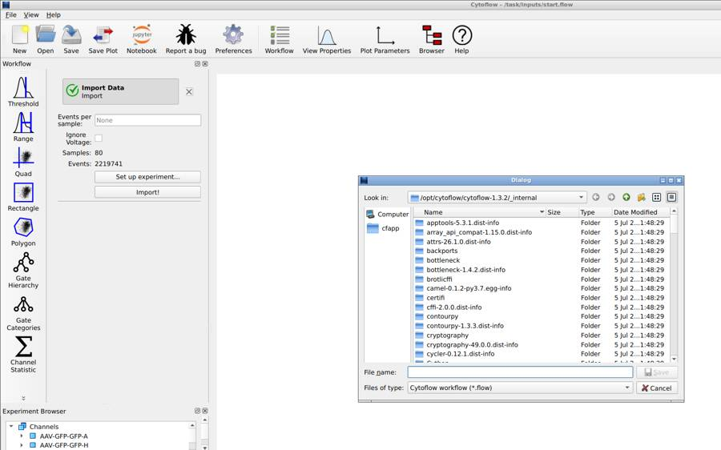
cd /task; cu click 1038 744; cu paste "/task/outputs/workflow.flow"; sleep 0.5; cu key Return; sleep 3; cu screenshot /tmp/screen.png; ls -la outputs; grep -n -A30 "channels_list" outputs/workflow.flow | head -60
{
"file_path": "/tmp/screen.png"
}/tmp/screen.png total 44 drwxrwsrwx 2 agent task 4096 Nov 10 20:06 . drwxr-xr-x 4 root root 4096 Nov 5 22:01 .. -rw-rw-r-- 1 cfapp task 35586 Nov 10 20:06 workflow.flow 480: channels_list: [] 481- conditions: 482- camptothecin: category 483- cell_line: category 484- conditioned_media: category 485- sample: category 486- well: category 487- events: null 488- ignore_v_bool: false 489- name_metadata: null 490- tubes: 491- - !tube;1 492- conditions: 493- camptothecin: 10uM 494- cell_line: WT 495- conditioned_media: WT 24hr conditioned media 496- sample: WT 10uM 497- well: A1 498- file: /task/inputs/raw/Caspase-assay-2-mlk_caspase_Group_A1.fcs 499- - !tube;1 500- conditions: 501- camptothecin: 5uM 502- cell_line: WT 503- conditioned_media: WT 24hr conditioned media 504- sample: WT 5uM 505- well: A2 506- file: /task/inputs/raw/Caspase-assay-2-mlk_caspase_Group_A2.fcs 507- - !tube;1 508- conditions: 509- camptothecin: 2uM 510- cell_line: WT

cd /task; cu click 394 822; sleep 1.5; cu screenshot /tmp/screen.png
{
"file_path": "/tmp/screen.png"
}/tmp/screen.png
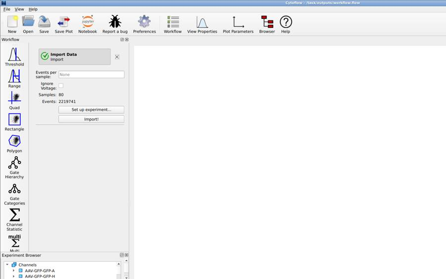
cd /task; cu drag 150 823 800 180; sleep 1.5; cu screenshot /tmp/screen.png
{
"file_path": "/tmp/screen.png"
}/tmp/screen.png
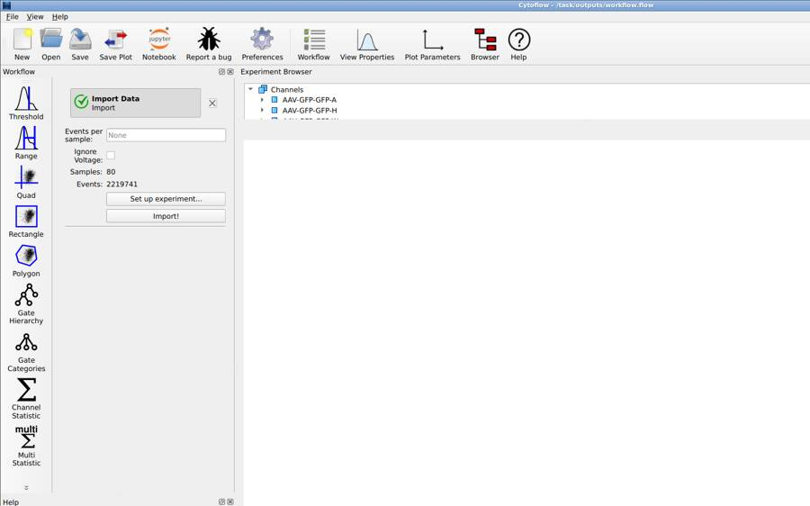
cd /task; cu drag 1043 215 1043 780; sleep 1.5; cu screenshot /tmp/screen.png
{
"file_path": "/tmp/screen.png"
}/tmp/screen.png
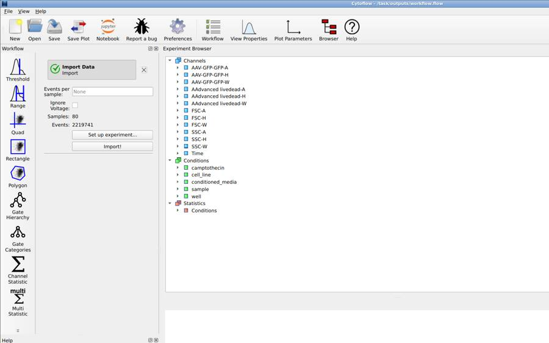
cd /task; cu click 466 234; sleep 0.7; cu click 466 177; sleep 1; cu screenshot /tmp/screen.png
{
"file_path": "/tmp/screen.png"
}/tmp/screen.png
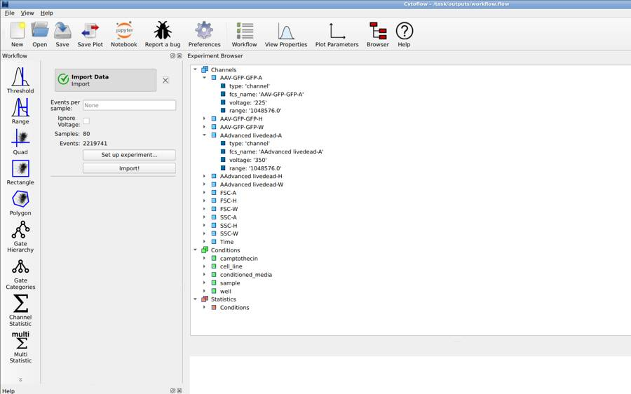
cd /task; cu drag 1043 780 1043 150; sleep 1; cu click 46 460; sleep 3; cu screenshot /tmp/screen.png
{
"file_path": "/tmp/screen.png"
}/tmp/screen.png
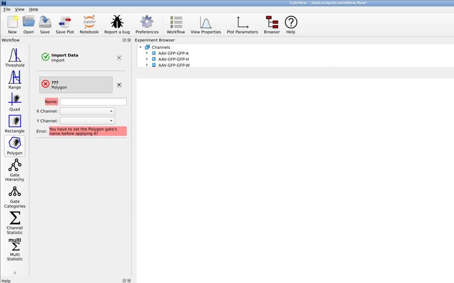
cd /task; cu click 295 323; cu type "Cells"; cu key Tab; sleep 0.5; cu click 277 354; sleep 1; cu screenshot /tmp/screen.png
{
"file_path": "/tmp/screen.png"
}/tmp/screen.png
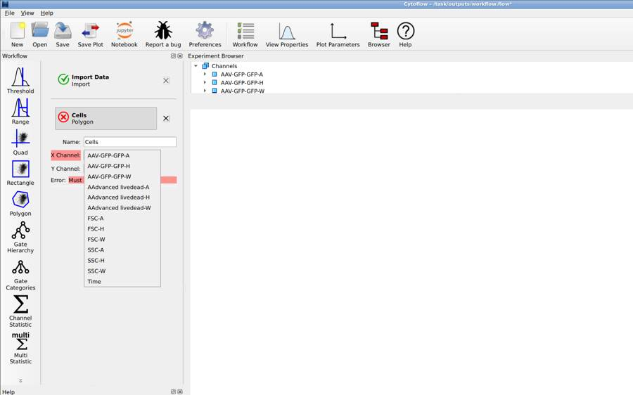
cd /task; cu click 218 497; sleep 1; cu click 277 384; sleep 1; cu screenshot /tmp/screen.png
{
"file_path": "/tmp/screen.png"
}/tmp/screen.png
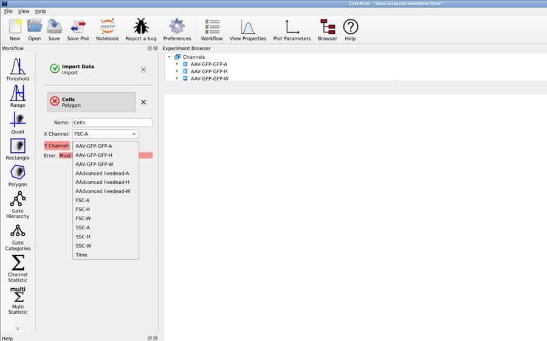
cd /task; cu click 218 600; sleep 12; cu screenshot /tmp/screen.png
{
"file_path": "/tmp/screen.png"
}/tmp/screen.png
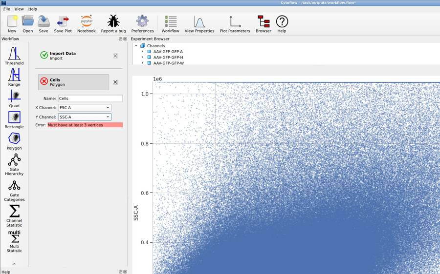
cd /task; cu click 700 9 double; sleep 2; cu screenshot /tmp/screen.png
{
"file_path": "/tmp/screen.png"
}/tmp/screen.png
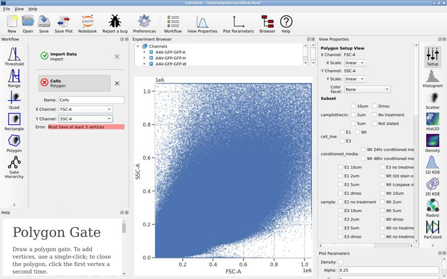
cd /task; cu click 408 685; sleep 1; cu click 1008 126; sleep 1; cu screenshot /tmp/screen.png
{
"file_path": "/tmp/screen.png"
}/tmp/screen.png
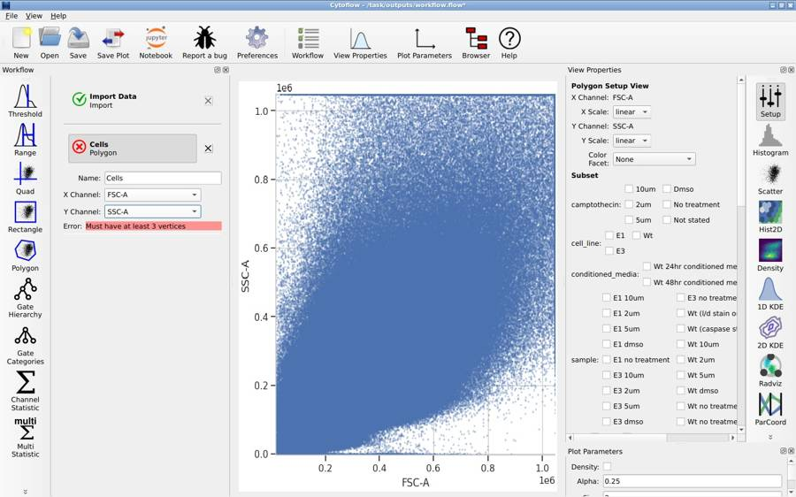
cd /task; cu click 1098 845; sleep 10; cu screenshot /tmp/screen.png
{
"file_path": "/tmp/screen.png"
}/tmp/screen.png
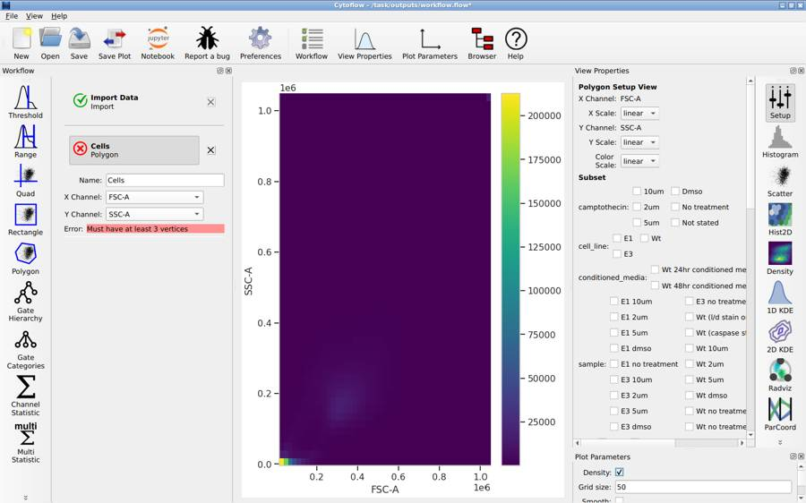
cd /task; cu click 1142 288; sleep 1; cu screenshot /tmp/screen.png
{
"file_path": "/tmp/screen.png"
}/tmp/screen.png
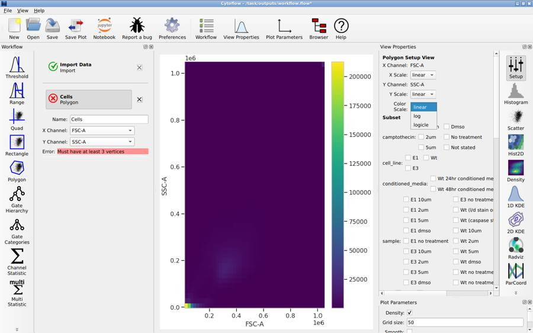
cd /task; cu click 1127 313; sleep 1; cu click 1256 871 double; sleep 0.3; cu key ctrl+a; cu type "120"; cu key Tab; sleep 12; cu screenshot /tmp/screen.png
{
"file_path": "/tmp/screen.png"
}/tmp/screen.png
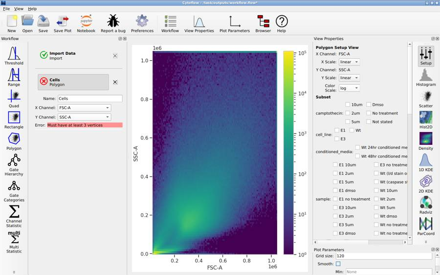
cd /task; cu click 1142 203; sleep 0.7; cu click 1127 227; sleep 1; cu click 1142 255; sleep 0.7; cu click 1127 279; sleep 15; cu screenshot /tmp/screen.png
{
"file_path": "/tmp/screen.png"
}/tmp/screen.png
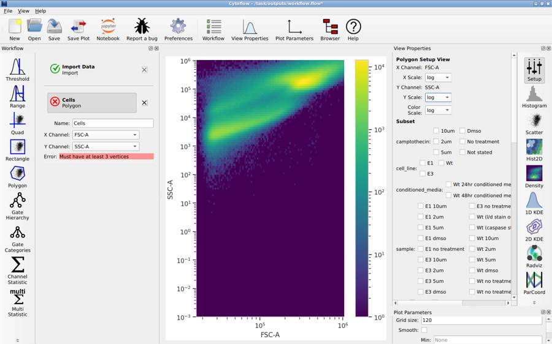
cd /tmp; python3 -c "
from PIL import Image
im=Image.open('/tmp/screen.png').crop((500,150,910,420)).resize((1640,1080),Image.LANCZOS); im.save('/tmp/crop.png')"Shell cwd was reset to /task
{
"file_path": "/tmp/crop.png"
}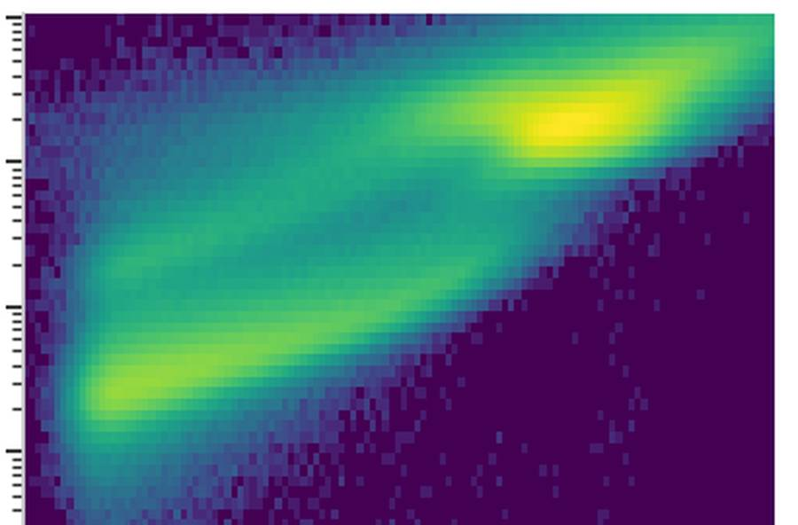
thinking
The scatter plot shows the main cell cluster near FSC-A 3e5 / SSC-A 2e5, separate from a debris band at low FSC/SSC. I'm drawing the `Cells` polygon around that cluster to exclude the debris and saturated edges.
cd /task; for p in "657 288" "657 198" "764 163" "891 163" "891 234" "781 260" "657 288"; do cu click $p; sleep 1.2; done; sleep 12; cu screenshot /tmp/screen.png
{
"file_path": "/tmp/screen.png"
}/tmp/screen.png
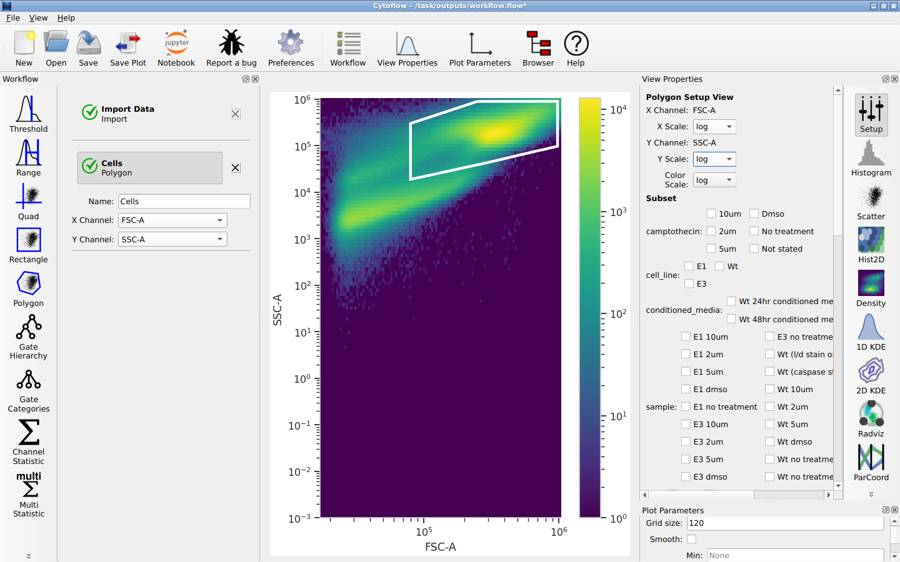
cd /task; cu click 45 460; sleep 2; cu screenshot /tmp/screen.png
{
"file_path": "/tmp/screen.png"
}/tmp/screen.png
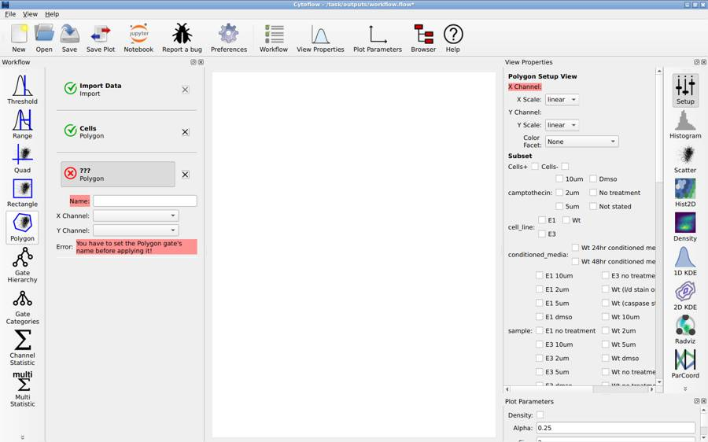
cd /task; cu click 295 409; cu type "Singlets"; cu key Tab; sleep 0.5; cu click 1088 339; sleep 0.5; cu click 1098 845; sleep 0.5; cu click 276 439; sleep 1; cu click 218 583; sleep 1; cu click 276 469; sleep 1; cu screenshot /tmp/screen.png
{
"file_path": "/tmp/screen.png"
}/tmp/screen.png
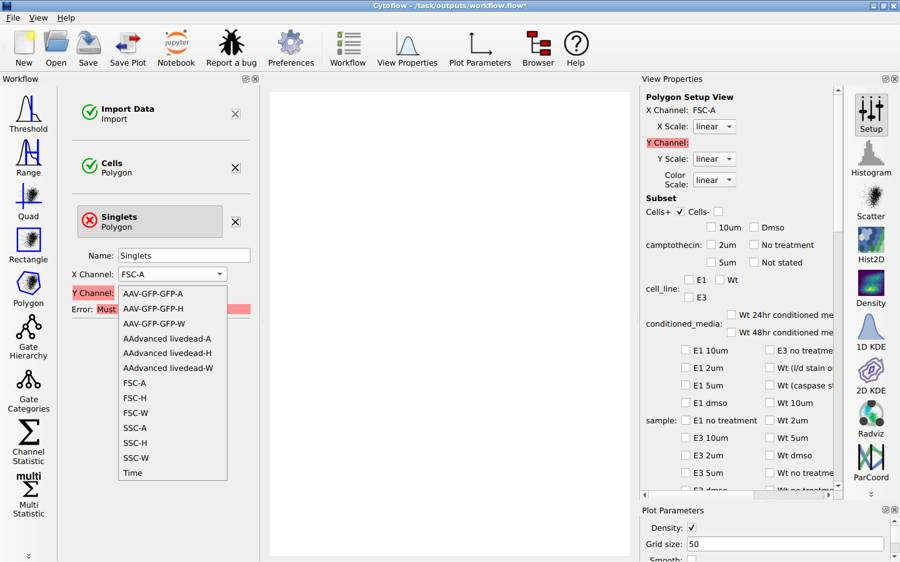
cd /task; cu click 216 637; sleep 1; cu click 1142 288; sleep 0.7; cu click 1127 313; sleep 0.7; cu click 1256 871 double; sleep 0.3; cu key ctrl+a; cu type "150"; cu key Tab; sleep 12; cu screenshot /tmp/screen.png
{
"file_path": "/tmp/screen.png"
}/tmp/screen.png
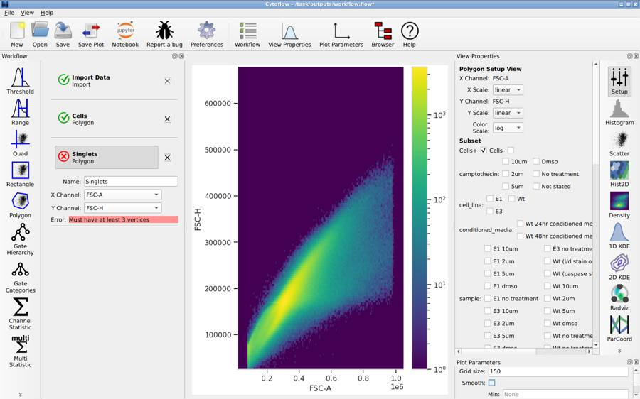
cd /tmp; python3 -c "
from PIL import Image
im=Image.open('/tmp/screen.png').crop((530,150,910,835)).resize((1140,2055),Image.LANCZOS).crop((0,600,1140,2055)); im.save('/tmp/crop.png')"Shell cwd was reset to /task
{
"file_path": "/tmp/crop.png"
}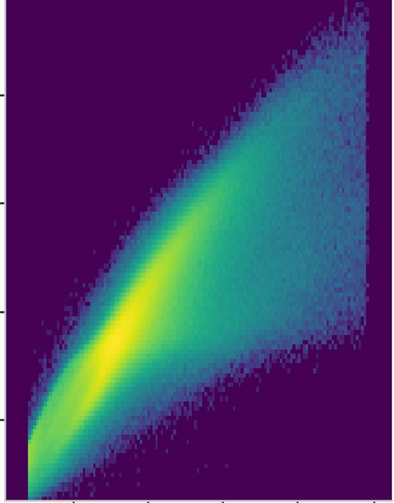
cd /task; for p in "552 825" "552 714" "880 198" "880 449" "552 825"; do cu click $p; sleep 1.2; done; sleep 12; cu screenshot /tmp/screen.png
{
"file_path": "/tmp/screen.png"
}/tmp/screen.png
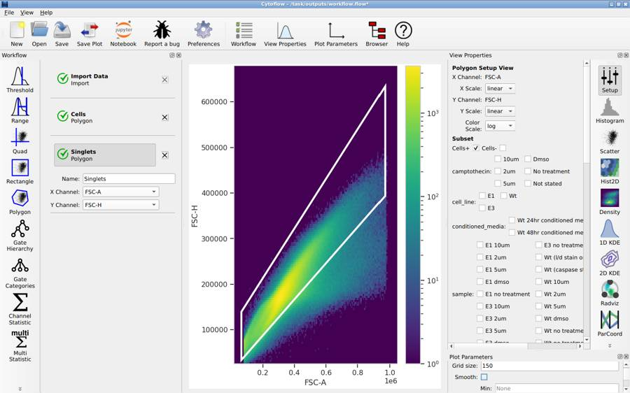
cd /task; cu click 1393 460; sleep 2; cu screenshot /tmp/screen.png
{
"file_path": "/tmp/screen.png"
}/tmp/screen.png
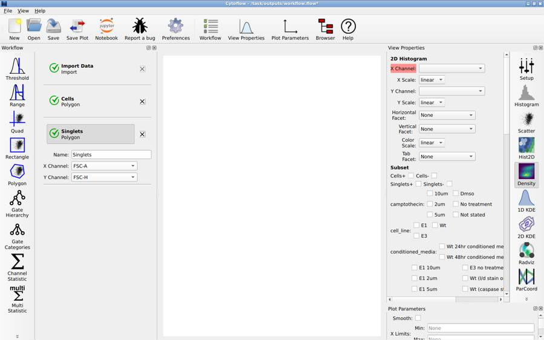
cd /task; cu drag 1021 510 850 510; sleep 2; cu screenshot /tmp/screen.png
{
"file_path": "/tmp/screen.png"
}/tmp/screen.png
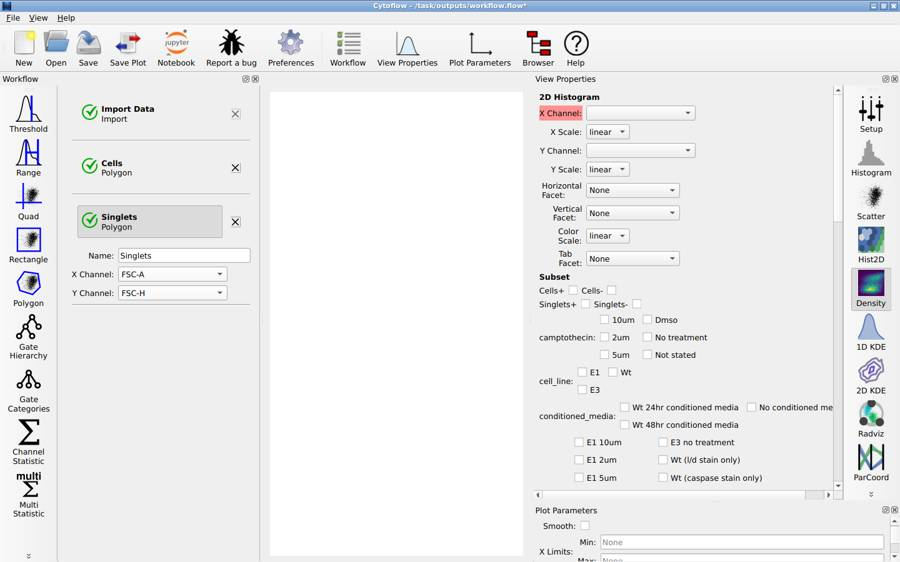
cd /task; cu click 917 465; sleep 0.4; cu click 937 487; sleep 0.4; cu click 1061 736; sleep 0.4; cu click 1061 765; sleep 0.4; cu scroll 1100 600 down 5; sleep 1; cu screenshot /tmp/screen.png
{
"file_path": "/tmp/screen.png"
}/tmp/screen.png
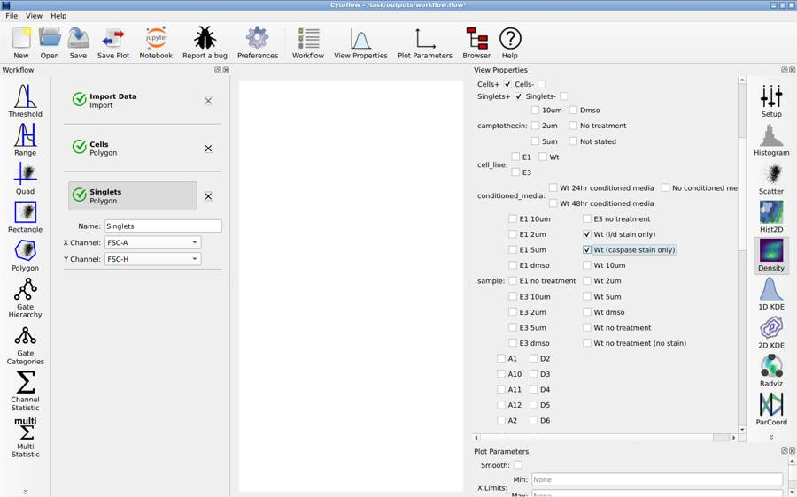
cd /task; cu click 1061 621; sleep 0.4; cu click 1061 593; sleep 0.4; cu scroll 1100 400 up 10; sleep 1; cu click 1023 181; sleep 1; cu screenshot /tmp/screen.png
{
"file_path": "/tmp/screen.png"
}/tmp/screen.png
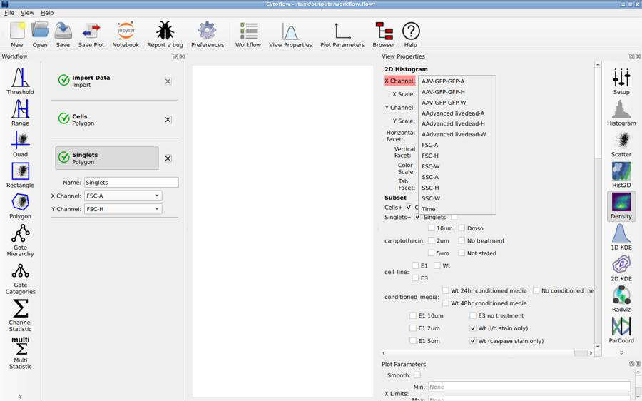
thinking
Both scatter gates are set; next I'm building a caspase versus dead-stain density plot of the staining controls to place the fluorescence thresholds.
cd /task; cu click 994 182; sleep 1; cu click 972 211; sleep 0.8; cu click 962 259; sleep 1; cu click 1023 241; sleep 0.8; cu click 1016 314; sleep 1; cu click 972 271; sleep 0.8; cu click 962 319; sleep 1; cu click 1012 305; sleep 1; cu screenshot /tmp/screen.png
{
"file_path": "/tmp/screen.png"
}/tmp/screen.png
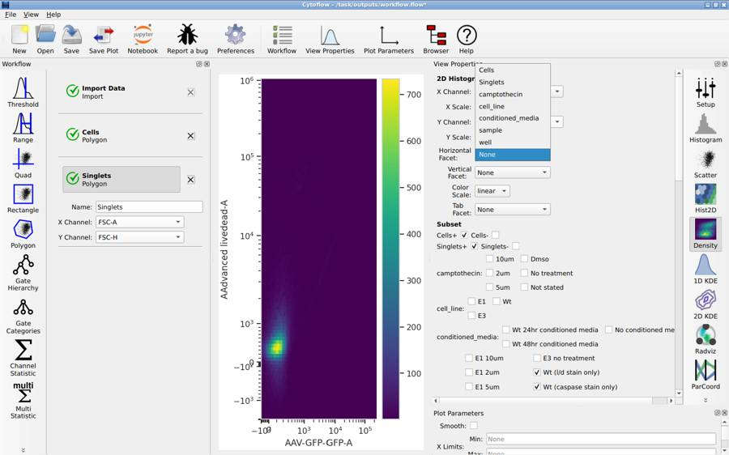
cd /task; cu click 969 257; sleep 1; cu click 972 378; sleep 0.8; cu click 962 402; sleep 1; cu drag 851 510 1150 510; sleep 10; cu screenshot /tmp/screen.png
{
"file_path": "/tmp/screen.png"
}/tmp/screen.png
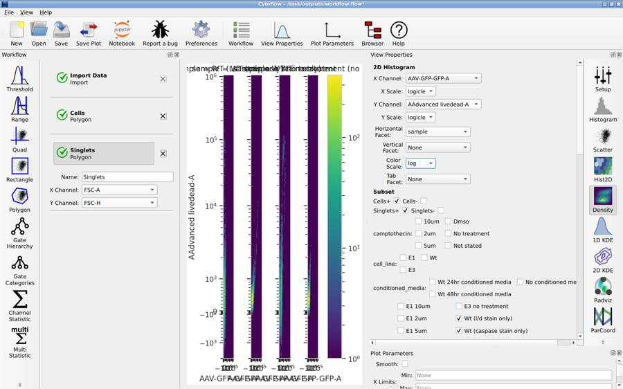
cd /task; cu drag 848 510 1140 510; sleep 8; cu screenshot /tmp/screen.png
{
"file_path": "/tmp/screen.png"
}/tmp/screen.png
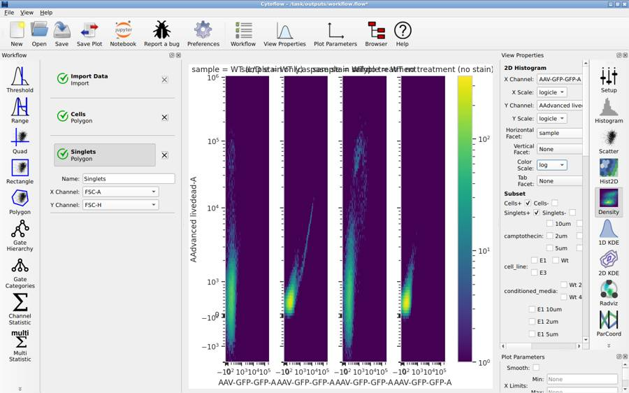
cd /task; cu click 1280 305; sleep 1; cu screenshot /tmp/s1.png;
{
"file_path": "/tmp/s1.png"
}/tmp/s1.png
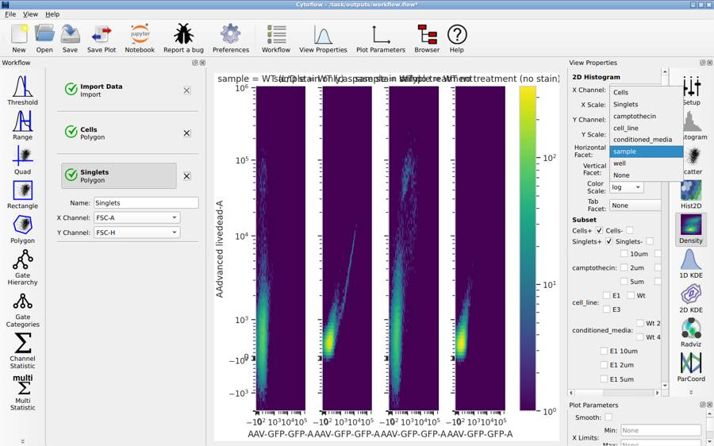
thinking
Controls look right so far, with the dead-stain well bright only in BL2 and the caspase-only well spilling green into BL2. I'm switching to one sample per tab so I can inspect each control at full size.
cd /task; cu click 1253 353; sleep 1; cu click 1280 414; sleep 1; cu screenshot /tmp/s1.png;
{
"file_path": "/tmp/s1.png"
}/tmp/s1.png
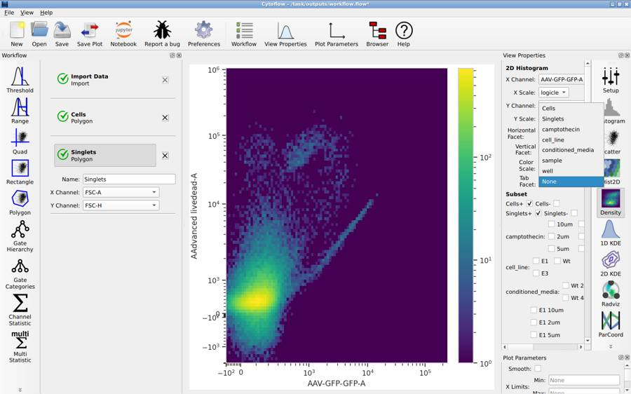
cd /task; cu click 1260 366; sleep 6; cu screenshot /tmp/s1.png;
{
"file_path": "/tmp/s1.png"
}/tmp/s1.png
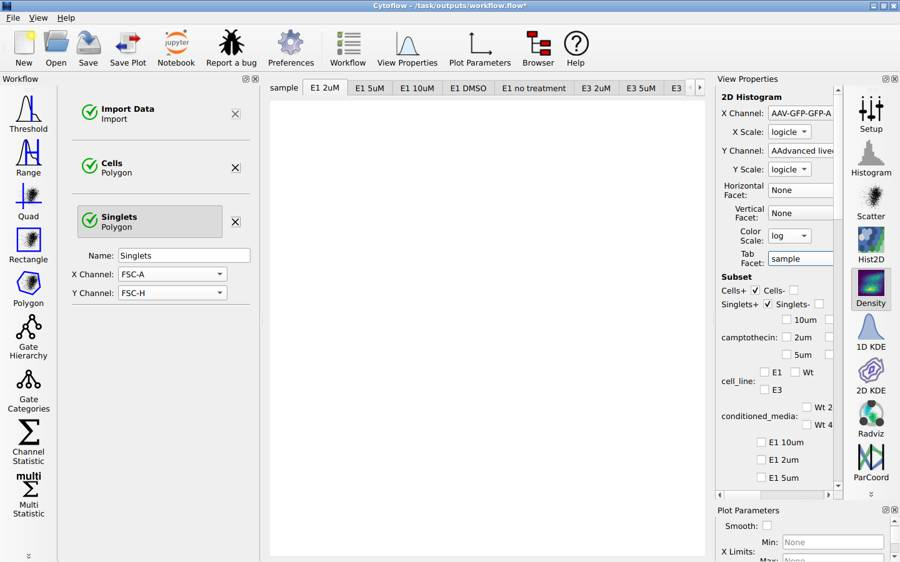
cd /task; for i in 1 2 3 4 5 6 7 8 9 10 11 12; do cu click 1120 140; sleep 0.3; done; sleep 1; cu screenshot /tmp/s1.png;
{
"file_path": "/tmp/s1.png"
}/tmp/s1.png
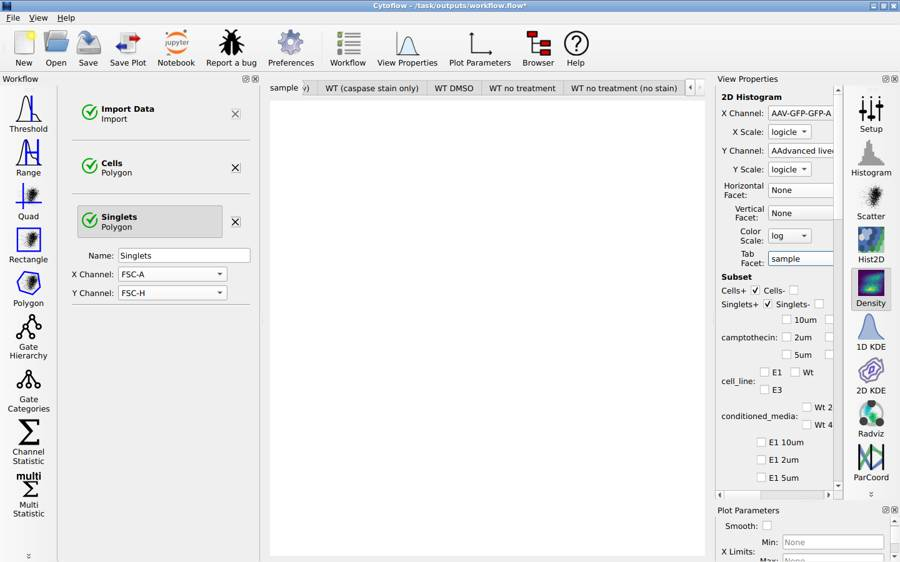
cd /task; cu click 997 141; sleep 6; cu screenshot /tmp/s1.png; cu click 594 141; sleep 6; cu screenshot /tmp/s2.png
{
"file_path": "/tmp/s1.png"
}{
"file_path": "/tmp/s2.png"
}/tmp/s1.png /tmp/s2.png
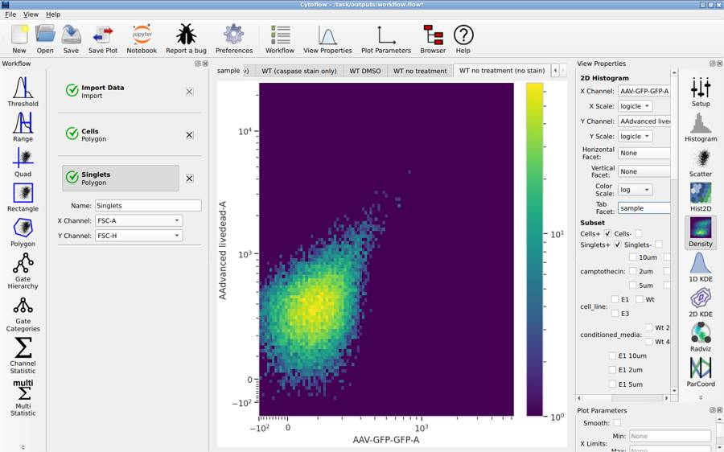
cd /task; cu drag 1141 510 850 510; sleep 2; cu scroll 1100 500 down 5; sleep 1; cu screenshot /tmp/s1.png
{
"file_path": "/tmp/s1.png"
}/tmp/s1.png
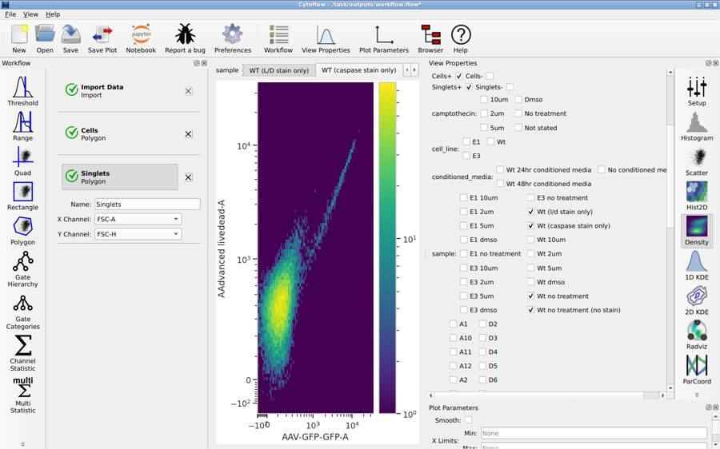
thinking
Unstained G1 tops out near 1e3 in the caspase channel, and G7 shows green spillover into the dead-stain channel. Clearing the control-only filter next to look at the treated wells.
cd /task; cu click 1062 424; sleep 0.4; cu click 1062 452; sleep 0.4; cu click 1062 593; sleep 0.4; cu click 1062 621; sleep 0.4; cu scroll 1100 400 up 10; sleep 0.5; cu drag 849 510 1140 510; sleep 10; cu screenshot /tmp/s1.png
{
"file_path": "/tmp/s1.png"
}/tmp/s1.png
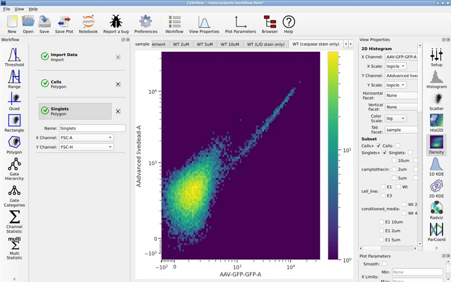
cd /task; cu click 733 141; sleep 8; cu screenshot /tmp/s1.png; cu click 847 141; sleep 6; cu screenshot /tmp/s2.png
{
"file_path": "/tmp/s1.png"
}{
"file_path": "/tmp/s2.png"
}/tmp/s1.png /tmp/s2.png
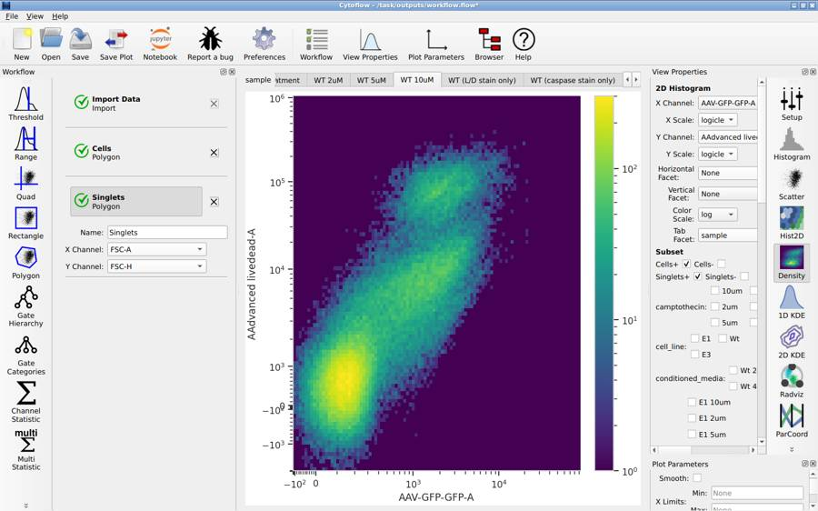
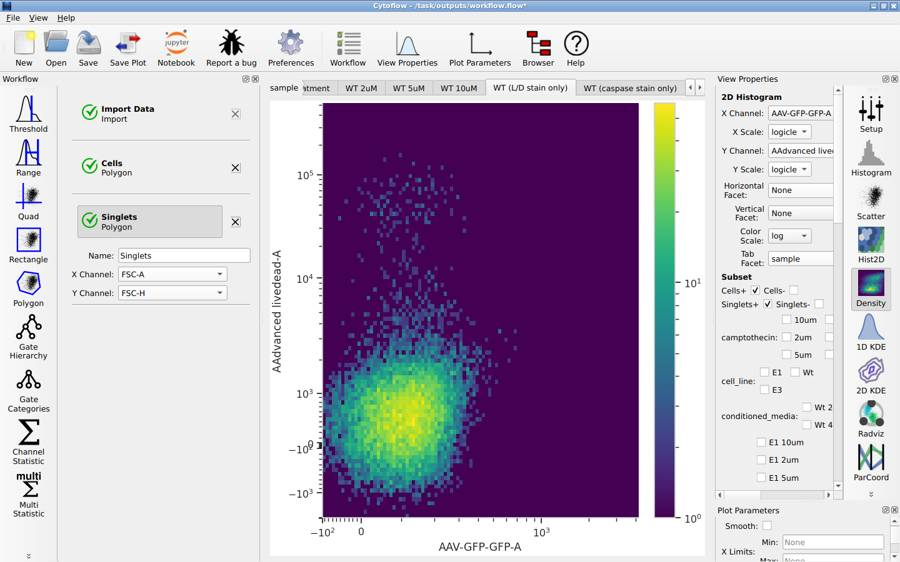
cd /task; cu click 45 460; sleep 2; cu click 295 495; cu type "Live"; cu key Tab; sleep 0.5; cu screenshot /tmp/s1.png
{
"file_path": "/tmp/s1.png"
}/tmp/s1.png
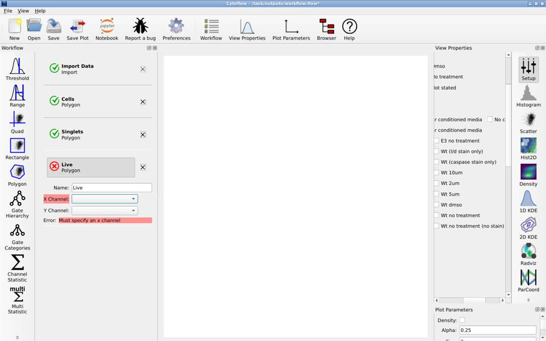
cd /task; for i in 1 2 3 4 5 6 7 8; do cu click 1151 792; sleep 0.2; done; cu scroll 1240 400 up 10; sleep 0.5; cu click 1219 845; sleep 0.5; cu screenshot /tmp/s1.png
{
"file_path": "/tmp/s1.png"
}/tmp/s1.png
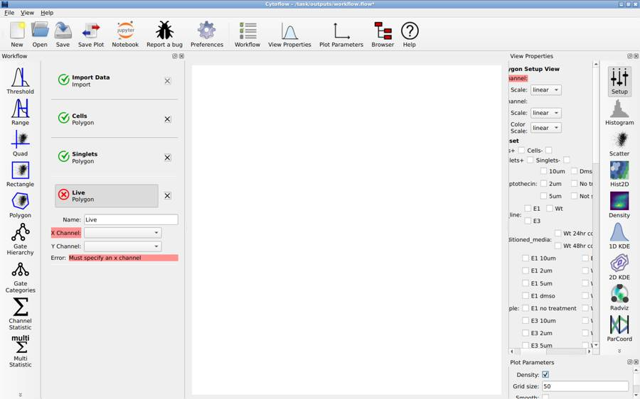
cd /task; cu click 1173 339; sleep 0.4; cu click 1193 361; sleep 0.4; cu click 1228 203; sleep 0.7; cu click 1222 251; sleep 0.7; cu click 1228 255; sleep 0.7; cu click 1222 303; sleep 0.7; cu click 1228 288; sleep 0.7; cu click 1222 312; sleep 0.7; cu click 1316 871 double; sleep 0.3; cu key ctrl+a; cu type "120"; cu key Tab; sleep 0.5; cu click 276 525; sleep 0.8; cu click 245 526; sleep 1; cu click 276 555; sleep 0.8; cu click 266 627; sleep 15; cu screenshot /tmp/s1.png
{
"file_path": "/tmp/s1.png"
}/tmp/s1.png
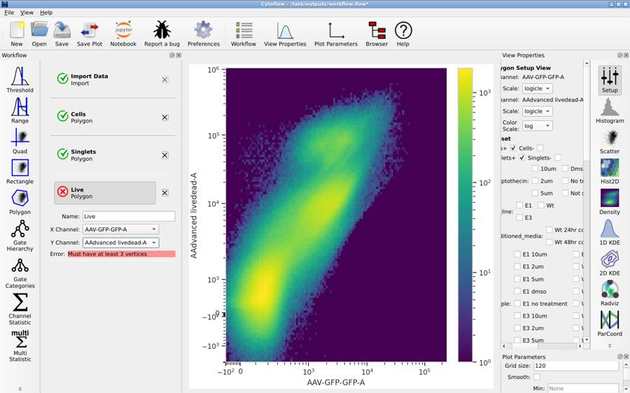
cd /tmp; python3 -c "
from PIL import Image
im=Image.open('/tmp/s1.png').crop((516,150,1024,600)).resize((1524,1350),Image.LANCZOS); im.save('/tmp/crop.png')"Shell cwd was reset to /task
{
"file_path": "/tmp/crop.png"
}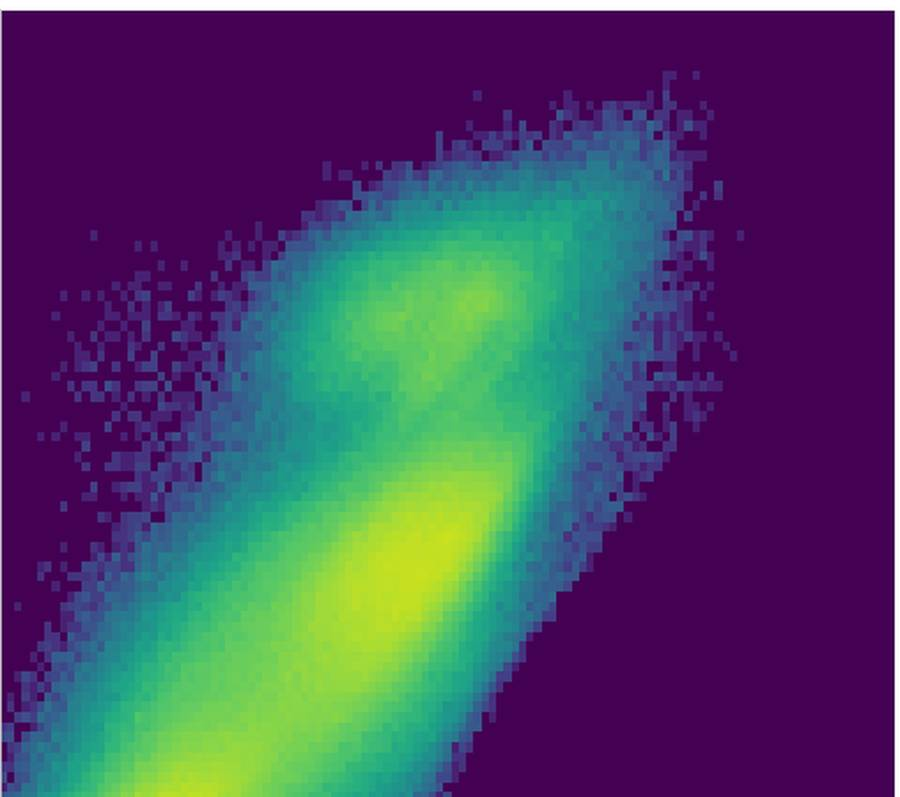
thinking
Caspase-negative, caspase-positive and dead populations separate cleanly with a horizontal valley near 3.2e4, so I'm swapping the polygon for a Range gate with typed limits.
cd /task; cu click 377 441; sleep 2; cu screenshot /tmp/s1.png
{
"file_path": "/tmp/s1.png"
}/tmp/s1.png
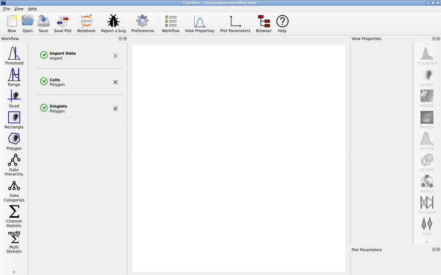
cd /task; cu click 240 355; sleep 2; cu click 45 250; sleep 2; cu screenshot /tmp/s1.png
{
"file_path": "/tmp/s1.png"
}/tmp/s1.png
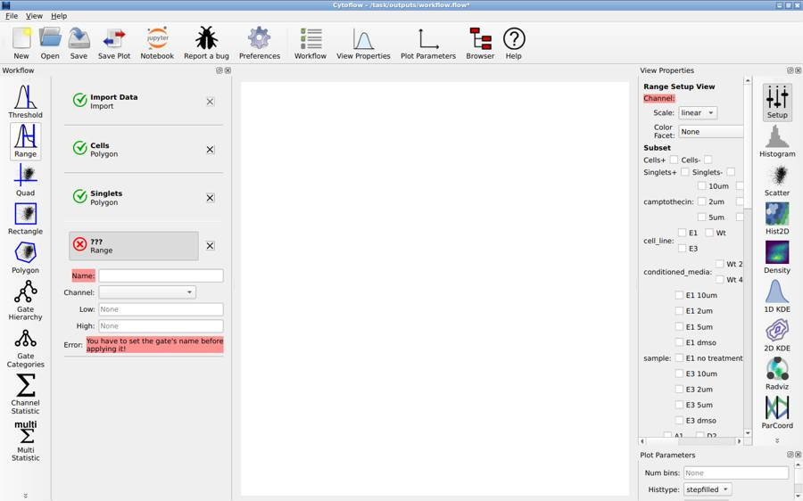
cd /task; cu click 288 495; cu type "Live"; cu key Tab; sleep 0.4; cu click 1208 287; sleep 0.4; cu click 1228 309; sleep 0.4; cu click 1250 203; sleep 0.7; cu click 1244 251; sleep 0.7; cu click 264 525; sleep 0.8; cu click 264 598; sleep 12; cu screenshot /tmp/s1.png
{
"file_path": "/tmp/s1.png"
}/tmp/s1.png
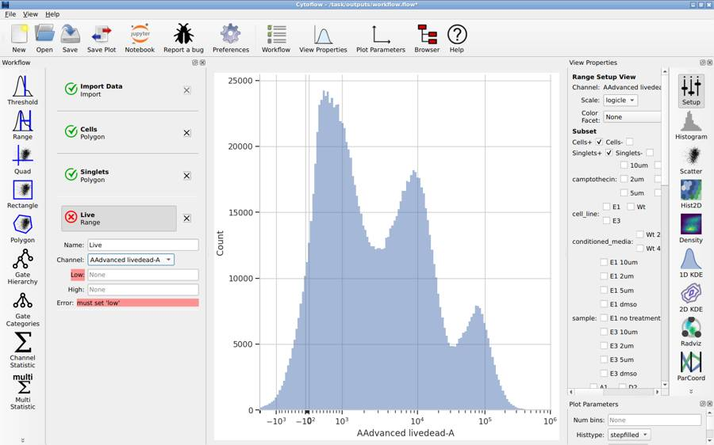
cd /task; cu click 288 555; cu type "-100000"; cu key Tab; sleep 0.5; cu click 288 585; cu type "33000"; cu key Tab; sleep 15; cu screenshot /tmp/s1.png
{
"file_path": "/tmp/s1.png"
}/tmp/s1.png
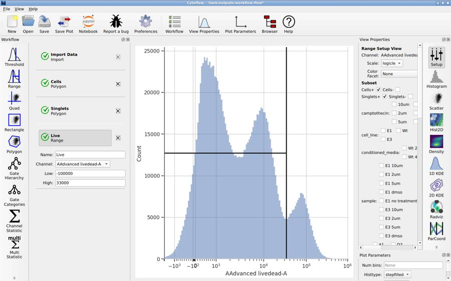
cd /task; cu click 45 180; sleep 2; cu screenshot /tmp/s1.png
{
"file_path": "/tmp/s1.png"
}/tmp/s1.png
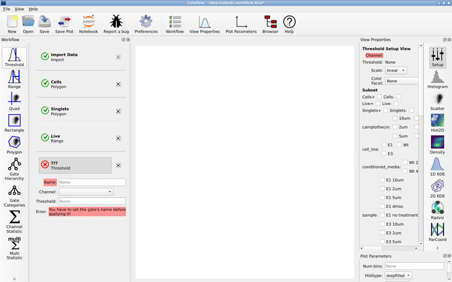
cd /task; cu click 292 581; cu type "Casp_pos"; cu key Tab; sleep 0.4; cu click 1208 309; sleep 0.4; cu click 1204 331; sleep 0.4; cu click 1228 353; sleep 0.4; cu click 1260 225; sleep 0.7; cu click 1254 273; sleep 0.7; cu click 270 612; sleep 0.8; cu click 250 613; sleep 12; cu screenshot /tmp/s1.png
{
"file_path": "/tmp/s1.png"
}/tmp/s1.png
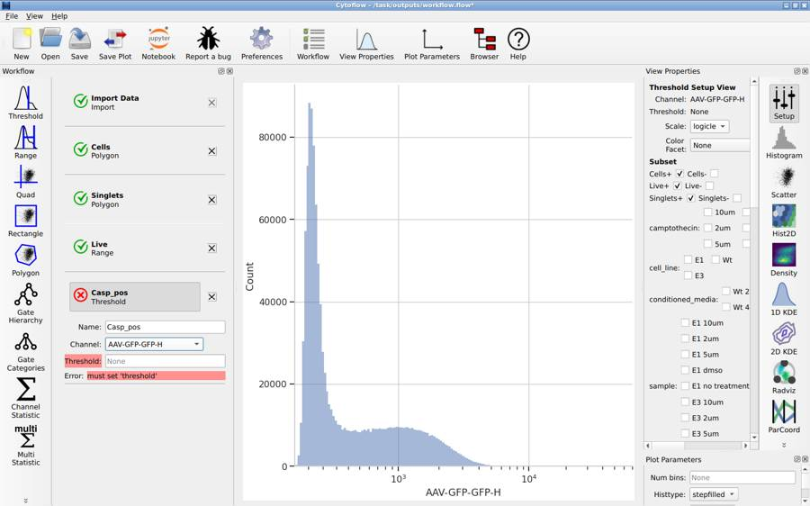
cd /task; cu click 270 612; sleep 1; cu screenshot /tmp/s1.png
{
"file_path": "/tmp/s1.png"
}/tmp/s1.png
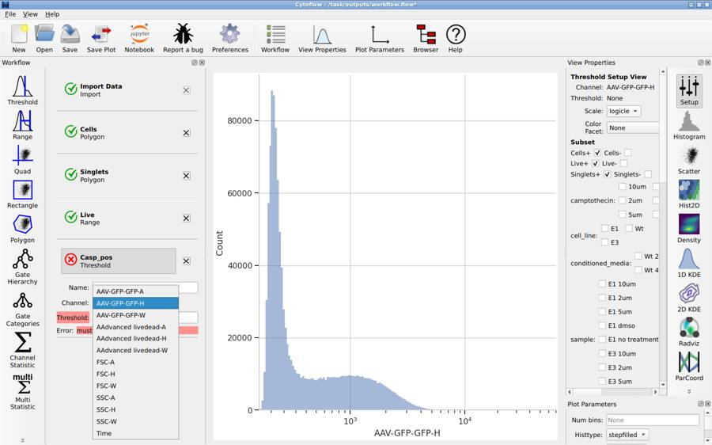
cd /task; cu click 243 589; sleep 12; cu screenshot /tmp/s1.png
{
"file_path": "/tmp/s1.png"
}/tmp/s1.png
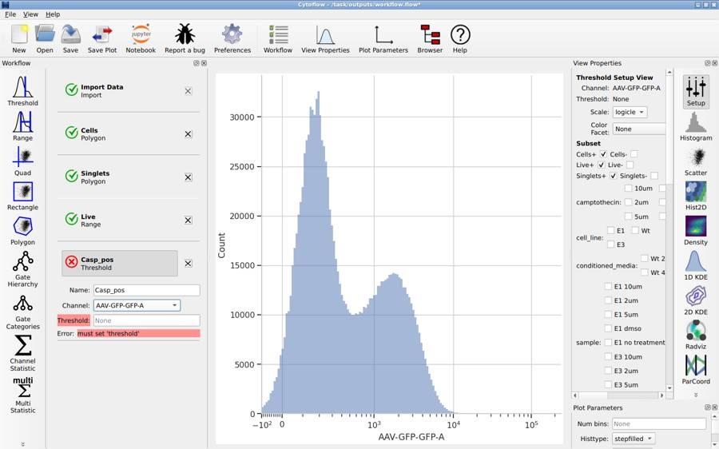
cd /task; cu click 292 642; cu type "1000"; cu key Tab; sleep 15; cu screenshot /tmp/s1.png
{
"file_path": "/tmp/s1.png"
}/tmp/s1.png
cd /task; cu key ctrl+s; sleep 3; cu click 45 700; sleep 2; cu screenshot /tmp/s1.png; ls -la outputs
{
"file_path": "/tmp/s1.png"
}/tmp/s1.png total 124 drwxrwsrwx 2 agent task 4096 Nov 10 20:06 . drwxr-xr-x 4 root root 4096 Nov 5 22:01 .. -rw-rw-r-- 1 cfapp task 116716 Nov 10 20:21 workflow.flow
cd /task; cu click 288 668; cu type "n"; cu key Tab; sleep 0.5; cu click 264 698; sleep 1; cu screenshot /tmp/s1.png
{
"file_path": "/tmp/s1.png"
}/tmp/s1.png
cd /task; cu click 204 743; sleep 1; cu click 254 728; sleep 1; cu screenshot /tmp/s1.png
{
"file_path": "/tmp/s1.png"
}/tmp/s1.png
cd /task; cu click 205 576; sleep 1; cu click 185 757; sleep 0.4; cu click 185 785; sleep 0.4; cu click 185 813; sleep 0.4; cu click 185 842; sleep 0.6; cu scroll 250 700 down 10; sleep 1; cu screenshot /tmp/s1.png
{
"file_path": "/tmp/s1.png"
}/tmp/s1.png
cd /task; cu scroll 150 780 down 10; sleep 1; cu screenshot /tmp/s1.png
{
"file_path": "/tmp/s1.png"
}/tmp/s1.png
cd /task; cu drag 420 510 800 510; sleep 2; cu screenshot /tmp/s1.png
{
"file_path": "/tmp/s1.png"
}/tmp/s1.png
cd /task; cu click 483 217; sleep 15; cu scroll 150 400 up 10; sleep 1; cu click 1393 790; sleep 1; cu screenshot /tmp/s1.png
{
"file_path": "/tmp/s1.png"
}/tmp/s1.png
cd /task; cu click 1400 605; sleep 3; cu screenshot /tmp/s1.png
{
"file_path": "/tmp/s1.png"
}/tmp/s1.png
cd /task; cu click 1393 790; sleep 1; cu drag 801 510 420 510; sleep 2; cu screenshot /tmp/s1.png
{
"file_path": "/tmp/s1.png"
}/tmp/s1.png
cd /task; cu click 1263 181; sleep 1; cu screenshot /tmp/s1.png
{
"file_path": "/tmp/s1.png"
}/tmp/s1.png
cd /task; cu click 1229 207; sleep 6; cu screenshot /tmp/s1.png
{
"file_path": "/tmp/s1.png"
}/tmp/s1.png
cd /task; cu click 1263 211; sleep 2; cu screenshot /tmp/s1.png
{
"file_path": "/tmp/s1.png"
}/tmp/s1.png
mkdir -p /tmp/cfexp && chmod 777 /tmp/cfexp; cd /task; cu click 706 567; cu paste "/tmp/cfexp/n_v1.csv"; sleep 0.5; cu key Return; sleep 3; cu screenshot /tmp/s1.png; ls -la /tmp/cfexp; head -20 /tmp/cfexp/n_v1.csv; wc -l /tmp/cfexp/n_v1.csv
{
"file_path": "/tmp/s1.png"
}/tmp/s1.png total 32 drwxrwxrwx 2 root root 4096 Nov 10 20:23 . drwxrwxrwx 9 root root 4096 Nov 10 20:23 .. -rw-rw-r-- 1 cfapp cfapp 20815 Nov 10 20:23 n_v1.csv Casp_pos,Cells,Live,Singlets,well,Time 0,0,0,0,A1,28.0 0,0,0,0,A10,12.0 0,0,0,0,A11,5.0 0,0,0,0,A12,19.0 0,0,0,0,A2,10.0 0,0,0,0,A3,10.0 0,0,0,0,A4,28.0 0,0,0,0,A5,22.0 0,0,0,0,A6,36.0 0,0,0,0,A7,29.0 0,0,0,0,A8,54.0 0,0,0,0,A9,19.0 0,0,0,0,B1,2.0 0,0,0,0,B12,2.0 0,0,0,0,B2,1.0 0,0,0,0,B4,3.0 0,0,0,0,B5,1.0 0,0,0,0,B6,2.0 0,0,0,0,B7,2.0 1209 /tmp/cfexp/n_v1.csv
mkdir -p /tmp/work && cat > /tmp/work/tab.py <<'EOF'
import pandas as pd, sys, re
pd.set_option('display.width',250); pd.set_option('display.max_rows',200)
f=sys.argv[1]
d=pd.read_csv(f)
valcol=[c for c in d.columns if c not in ('Casp_pos','Cells','Live','Singlets','well','Casp_all','Dead')][0]
d=d.rename(columns={valcol:'n'})
for c in ['Casp_pos','Cells','Live','Singlets']:
d[c]=d[c].astype(str).isin(['1','True','1.0'])
lay=pd.read_csv('/task/inputs/plate_layout.csv')
rows=[]
for w,g in d.groupby('well'):
tot=g.n.sum()
cells=g[g.Cells].n.sum()
sing=g[g.Cells&g.Singlets].n.sum()
live=g[g.Cells&g.Singlets&g.Live].n.sum()
cp=g[g.Cells&g.Singlets&g.Live&g.Casp_pos].n.sum()
cpall=g[g.Cells&g.Singlets&g.Casp_pos].n.sum()
rows.append(dict(well=w,all=int(tot),cells=int(cells),singlets=int(sing),live=int(live),casp=int(cp),casp_sing=int(cpall)))
r=pd.DataFrame(rows).merge(lay,on='well')
r['pct_cells']=100*r.cells/r['all']; r['pct_sing']=100*r.singlets/r.cells; r['pct_live']=100*r.live/r.singlets
r['pct_casp']=100*r.casp/r.live; r['pct_casp_sing']=100*r.casp_sing/r.singlets
r['row']=r.well.str[0]; r['col']=r.well.str[1:].astype(int)
r=r.sort_values(['row','col'])
print(r[['well','sample','conditioned_media','all','cells','singlets','live','casp','pct_cells','pct_sing','pct_live','pct_casp','pct_casp_sing']].round(1).to_string(index=False))
r.to_csv('/tmp/work/perwell.csv',index=False)
EOF
python3 /tmp/work/tab.py /tmp/cfexp/n_v1.csvwell sample conditioned_media all cells singlets live casp pct_cells pct_sing pct_live pct_casp pct_casp_sing A1 WT 10uM WT 24hr conditioned media 31328 20628 18607 16639 2086 65.8 90.2 89.4 12.5 19.6 A2 WT 5uM WT 24hr conditioned media 40169 28609 25540 23563 4024 71.2 89.3 92.3 17.1 21.7 A3 WT 2uM WT 24hr conditioned media 47337 31806 28354 25934 4399 67.2 89.1 91.5 17.0 21.4 A4 WT DMSO WT 24hr conditioned media 33079 23595 21041 18654 3778 71.3 89.2 88.7 20.3 28.1 A5 WT 10uM WT 48hr conditioned media 34963 24868 22190 20147 3480 71.1 89.2 90.8 17.3 23.4 A6 WT 5uM WT 48hr conditioned media 33431 24970 22954 21055 3571 74.7 91.9 91.7 17.0 22.4 A7 WT 2uM WT 48hr conditioned media 36445 27576 25380 23009 3683 75.7 92.0 90.7 16.0 22.2 A8 WT DMSO WT 48hr conditioned media 22867 16976 15649 13801 2313 74.2 92.2 88.2 16.8 25.2 A9 WT 10uM no conditioned media 40034 24593 21636 19568 2526 61.4 88.0 90.4 12.9 20.2 A10 WT 5uM no conditioned media 42298 28807 25744 22872 3019 68.1 89.4 88.8 13.2 21.2 A11 WT 2uM no conditioned media 43376 28702 25914 22807 3287 66.2 90.3 88.0 14.4 23.1 A12 WT DMSO no conditioned media 30724 19331 16705 14627 1819 62.9 86.4 87.6 12.4 22.3 B1 E1 10uM WT 24hr conditioned media 18757 14218 12596 9116 4507 75.8 88.6 72.4 49.4 63.0 B2 E1 5uM WT 24hr conditioned media 32477 23101 20673 17908 10422 71.1 89.5 86.6 58.2 63.5 B3 E1 2uM WT 24hr conditioned media 40067 27193 24186 20597 13287 67.9 88.9 85.2 64.5 69.6 B4 E1 DMSO WT 24hr conditioned media 19965 13731 11767 9149 4580 68.8 85.7 77.8 50.1 60.9 B5 E1 10uM WT 48hr conditioned media 17852 14161 12748 10055 5344 79.3 90.0 78.9 53.1 62.8 B6 E1 5uM WT 48hr conditioned media 31705 22863 20404 17535 10245 72.1 89.2 85.9 58.4 64.2 B7 E1 2uM WT 48hr conditioned media 35417 24536 22163 18488 11543 69.3 90.3 83.4 62.4 68.5 B8 E1 DMSO WT 48hr conditioned media 26222 17262 14749 12797 7677 65.8 85.4 86.8 60.0 65.2 B9 E1 10uM no conditioned media 34411 22264 19583 18511 7104 64.7 88.0 94.5 38.4 41.7 B10 E1 5uM no conditioned media 40098 25861 22769 22044 8589 64.5 88.0 96.8 39.0 40.9 B11 E1 2uM no conditioned media 41005 24750 22016 20891 9728 60.4 89.0 94.9 46.6 49.3 B12 E1 DMSO no conditioned media 31680 16317 13798 12931 5166 51.5 84.6 93.7 40.0 43.5 C1 E3 10uM WT 24hr conditioned media 17681 10410 8528 7452 2696 58.9 81.9 87.4 36.2 44.2 C2 E3 5uM WT 24hr conditioned media 25455 12811 10389 9366 3838 50.3 81.1 90.2 41.0 46.7 C3 E3 2uM WT 24hr conditioned media 21098 12224 10428 9453 3173 57.9 85.3 90.7 33.6 39.7 C4 E3 DMSO WT 24hr conditioned media 18113 9737 7492 6692 2462 53.8 76.9 89.3 36.8 43.5 C5 E3 10uM WT 48hr conditioned media 18729 9780 7562 6838 2087 52.2 77.3 90.4 30.5 37.1 C6 E3 5uM WT 48hr conditioned media 21716 11199 8916 8270 2934 51.6 79.6 92.8 35.5 40.1 C7 E3 2uM WT 48hr conditioned media 22874 12051 10070 9600 2955 52.7 83.6 95.3 30.8 33.9 C8 E3 DMSO WT 48hr conditioned media 18604 9955 7720 7059 2010 53.5 77.5 91.4 28.5 34.4 C9 E3 10uM no conditioned media 22962 13744 11840 11306 1096 59.9 86.1 95.5 9.7 13.3 C10 E3 5uM no conditioned media 15794 10115 8926 8666 641 64.0 88.2 97.1 7.4 9.7 C11 E3 2uM no conditioned media 19854 12942 11728 11437 840 65.2 90.6 97.5 7.3 8.9 C12 E3 DMSO no conditioned media 23104 13804 12006 11656 1454 59.7 87.0 97.1 12.5 14.6 D1 WT 10uM WT 24hr conditioned media 29965 19864 18207 16539 4660 66.3 91.7 90.8 28.2 34.6 D2 WT 5uM WT 24hr conditioned media 42557 29238 26478 24553 5501 68.7 90.6 92.7 22.4 27.8 D3 WT 2uM WT 24hr conditioned media 44711 30192 27362 25067 6356 67.5 90.6 91.6 25.4 31.3 D4 WT DMSO WT 24hr … [6,068 more characters not shown]
cd /task; cu click 45 889; sleep 1.5; cu screenshot /tmp/s1.png
{
"file_path": "/tmp/s1.png"
}/tmp/s1.png
thinking
First-pass counts are in: staining controls are clean, but conditioned-media wells show more caspase-positive cells than no-CM wells in every line. I'm adding a Time binning step to check the acquisition for clogs or dry-running before I trust that.
cd /task; cu click 129 490; sleep 2; cu screenshot /tmp/s1.png
{
"file_path": "/tmp/s1.png"
}/tmp/s1.png
cd /task; cu click 45 889; sleep 1.5; cu screenshot /tmp/s1.png
{
"file_path": "/tmp/s1.png"
}/tmp/s1.png
cd /task; cu click 292 754; cu type "Tbin"; cu key Tab; sleep 0.5; cu click 270 785; sleep 1; cu screenshot /tmp/s1.png
{
"file_path": "/tmp/s1.png"
}/tmp/s1.png
cd /task; cu click 208 887; sleep 12; cu screenshot /tmp/s1.png
{
"file_path": "/tmp/s1.png"
}/tmp/s1.png
cd /task; cu click 292 845; cu type "1000"; cu key Tab; sleep 10; cu screenshot /tmp/s1.png
{
"file_path": "/tmp/s1.png"
}/tmp/s1.png
cd /task; cu click 45 700; sleep 2; cu drag 420 510 800 510; sleep 1; cu scroll 150 600 down 15; sleep 1; cu screenshot /tmp/s1.png
{
"file_path": "/tmp/s1.png"
}/tmp/s1.png
cd /task; cu scroll 150 600 up 3; sleep 1; cu screenshot /tmp/s1.png
{
"file_path": "/tmp/s1.png"
}/tmp/s1.png
cd /task; cu click 185 209; sleep 0.4; cu click 185 293; sleep 0.4; cu click 483 293; sleep 0.4; cu scroll 150 600 up 1; sleep 1; cu screenshot /tmp/s1.png
{
"file_path": "/tmp/s1.png"
}/tmp/s1.png
cd /task; cu click 470 153; cu type "nt"; cu key Tab; sleep 0.5; cu click 264 184; sleep 1; cu screenshot /tmp/s1.png
{
"file_path": "/tmp/s1.png"
}/tmp/s1.png
cd /task; cu click 201 472; sleep 1; cu click 254 214; sleep 1; cu screenshot /tmp/s1.png
{
"file_path": "/tmp/s1.png"
}/tmp/s1.png
cd /task; cu click 205 215; sleep 10; cu drag 801 510 420 510; sleep 1.5; cu click 1393 790; sleep 1; cu click 1400 605; sleep 2; cu click 1393 790; sleep 1; cu click 1263 181; sleep 1; cu screenshot /tmp/s1.png
{
"file_path": "/tmp/s1.png"
}/tmp/s1.png
cd /task; cu click 1231 231; sleep 4; cu click 1263 211; sleep 2; cu click 706 567; cu paste "/tmp/cfexp/nt_v1.csv"; sleep 0.5; cu key Return; sleep 3; cu screenshot /tmp/s1.png; ls -la /tmp/cfexp; head -5 /tmp/cfexp/nt_v1.csv; wc -l /tmp/cfexp/nt_v1.csv
{
"file_path": "/tmp/s1.png"
}/tmp/s1.png total 76 drwxrwxrwx 2 root root 4096 Nov 10 20:27 . drwxrwxrwx 10 root root 4096 Nov 10 20:26 .. -rw-rw-r-- 1 cfapp cfapp 20815 Nov 10 20:23 n_v1.csv -rw-rw-r-- 1 cfapp cfapp 44687 Nov 10 20:27 nt_v1.csv Cells,Tbin,well,Time 0,0,A1,655.0 0,0,A10,772.0 0,0,A11,946.0 0,0,A12,757.0 2675 /tmp/cfexp/nt_v1.csv
cat > /tmp/work/timeqc.py <<'EOF'
import pandas as pd, numpy as np, sys
pd.set_option('display.width',300); pd.set_option('display.max_rows',200); pd.set_option('display.max_columns',40)
d=pd.read_csv(sys.argv[1]).rename(columns={'Time':'n'})
d['Tbin']=(d.Tbin/1000).round().astype(int)
tot=d.groupby(['well','Tbin']).n.sum().unstack(fill_value=0).astype(int)
cells=d[d.Cells.astype(str).isin(['1','True'])].groupby(['well','Tbin']).n.sum().unstack(fill_value=0).astype(int)
def key(w): return (w[0],int(w[1:]))
idx=sorted(tot.index,key=key)
print("ALL EVENTS per 1000 time units"); print(tot.loc[idx].to_string())
print("CELLS per bin"); print(cells.reindex(idx).fillna(0).astype(int).to_string())
EOF
python3 /tmp/work/timeqc.py /tmp/cfexp/nt_v1.csvALL EVENTS per 1000 time units Tbin 0 1 2 3 4 5 6 7 8 9 10 11 12 13 14 15 16 well A1 1779 1974 1996 2049 1913 1862 1967 2118 2337 2420 2313 2018 1840 1637 1560 1545 0 A2 2060 2193 2356 2335 2380 2347 2501 2833 3005 3017 2771 2553 2257 2041 1932 2227 1361 A3 2513 2562 2702 2737 2832 2636 2893 3167 3545 3546 3416 2958 2686 2383 2376 2560 1825 A4 1520 1729 1770 1958 2003 1914 2010 2347 2640 2448 2367 1996 1829 1938 1756 1649 1205 A5 1640 1816 1869 2019 2058 2097 2125 2448 2737 2795 2532 2242 1900 1829 1724 1885 1247 A6 1766 1873 1883 1949 1980 2123 2365 2503 2602 2746 2547 2222 2071 1896 1743 1162 0 A7 1553 1606 1882 2046 2144 2020 2127 2250 2555 2655 2797 2646 2492 2306 2055 1889 1422 A8 1009 1208 1231 1426 1384 1500 1598 1602 1866 1955 1751 1549 1398 1384 1183 823 0 A9 2071 2173 2245 2340 2323 2476 2463 2741 3058 3179 2834 2490 2300 2106 1993 2220 1022 A10 1986 2301 2528 2472 2536 2468 2682 3149 3268 3231 3106 2644 2340 2188 2077 2594 728 A11 2455 2443 2497 2492 2619 2648 2919 3124 2921 2735 2633 2540 2647 2644 2649 2927 483 A12 1822 1877 1984 1946 2010 2001 2024 2256 2082 1905 1754 1975 2068 1898 1572 1550 0 B1 901 1022 1039 1077 1134 1193 1284 1469 1522 1323 1215 1134 1111 1064 1023 1117 129 B2 1478 1743 1872 1834 1962 2008 2215 2569 2635 2665 2326 2227 2054 1767 1646 1476 0 B3 2043 2208 2259 2242 2290 2348 2513 2791 3017 3156 2808 2493 2319 2195 1967 2416 1002 B4 965 1155 1156 1142 1136 1199 1478 1596 1740 1680 1561 1325 1240 1100 772 720 0 B5 904 935 1027 1018 996 1018 1116 1350 1447 1378 1250 1084 1143 963 877 1074 272 B6 1736 1867 1872 1946 1834 1903 2078 2339 2530 2539 2188 1960 1700 1642 1699 1698 174 B7 1805 1898 2067 2058 2026 2254 2451 2886 2781 2731 2603 2227 2112 1889 1708 1921 0 B8 1436 1500 1563 1537 1548 1610 1737 1866 1992 1814 1563 1501 1483 1471 1470 1688 443 B9 1873 2047 2070 2054 2057 2111 2340 2611 2723 2666 2406 2157 1923 1797 1790 1786 0 B10 2187 2187 2278 2395 2351 2441 2674 2945 3187 3072 2924 2489 2223 2182 2300 2084 179 B11 2326 2411 2439 2540 2483 2512 2545 2811 2995 3052 2884 2466 2329 2280 2175 2385 372 B12 1833 1904 1919 1951 1909 2010 2135 2393 2467 2265 2053 1932 1828 1698 1622 1761 0 C1 811 888 1101 1052 1127 1138 1175 1361 1443 1410 1301 1126 1116 983 707 841 101 C2 1191 1321 1409 1450 1400 1487 1502 1598 1826 1983 2055 1755 1623 1507 1344 1116 888 C3 959 1058 1150 1214 1199 1332 1411 1689 1786 1868 1667 1376 1247 1050 1078 1014 0 C4 878 910 966 916 929 959 1040 1216 1302 1425 1537 1309 1105 1022 988 849 762 C5 1085 1068 1118 1145 1198 1214 1283 1381 1477 1510 1337 1049 961 933 890 963 117 C6 1192 1290 1336 1359 1311 1335 1414 1642 1796 1677 1580 1326 1149 1117 1213 904 75 C7 1184 1289 1379 1351 1365 1365 1596 1801 1974 1798 1621 1322 1379 1253 1121 980 96 C8 1046 1044 1074 1094 1100 1070 1269 1429 1556 1415 1302 1170 1058 928 1005 978 66 C9 1213 1324 1354 1325 1436 1384 1612 1797 1940 1856 1616 1374 1233 1187 1138 1173 0 C10 911 977 946 995 970 940 1047 1198 1258 1358 1166 972 802 742 742 715 55 C11 1219 1156 1245 1251 1170 1193 1419 1725 1667 1638 1280 1165 1113 896 1017 671 29 C12 1322 1349 1387 1350 1339 1394 1441 1670 1726 1712 1713 1420 1222 1131 1007 1193 728 D1 1591 1725 1795 1933 1860 1894 2152 2450 2386 2370 1927 1821 1660 1666 1509 1150 76 D2 1917 2054 2313 2448 2441 2413 2485 2872 3415 3386 3323 2977 2608 2354 2094 1839 1618 D3 2198 2388 2495 2615 2671 2820 3016 3467 3433 3619 3167 2908 2609 2345 2224 2736 0 D4 1411 1525 1591 1594 1627 1738 2078 2252 2125 1889 1535 1551 1499 1375 1423 838 53 D5 1407 1537 1597 1712 1681 1678 1698 2007 2203 2355 2102 1851 1661 1529 1243 1214 873 D6 1773 1915 2017 2091 2116 2221 2230 2392 2528 2558 2112 1943 1781 1714 1849 978 50 D7 2094 2130 2383 2445 2509 2561 2720 3220 3399 3114 2622 2503 2379 1732 1558 625 9 D8 1403 1513 1590 1698 1596 1645 1799 2050 2269 2199 1945 1730 1576 1390 1303 1274 807 D9 2006 2290 2271 2239 2182 2274 2717 2977 2870 2591 2220 2062 1886 1861 2129 973 37 D10 2262 2295 2311 2252 2361 2575 2578 2536 2173 2214 2643 2785 2684 2594 2032 2036 94 D11 2467 2590 2679 2829 2845 2923 3201 3416 3406 3265 2868 2573 2390 2193 2669 983 22 D12 1572 1532 1694 1736 1616 1615 1794 2367 2361 2288 2070 1783 1713 1427 1233 1421 777 E1 861 929 1018 1055 1090 1107 1251 1437 1494 1510 1412 1276 1079 1036 851 1148 331 E2 1860 2137 2110 2241 2251 2324 2598 2865 2942 2697 2456 2262 2086 1850 2027 1042 53 E3 2093 2379 2364 2520 2573 2664 3088 3139 3200 3086 2656 2322 2176 2213 2429 323 6 E4 1117 1178 1261 1190 1219 1184 1465 1550 1672 1407 1226 1110 995 936 1081 148 0 E5 1018 1028 1093 1074 1126 1123 1228 1430 1559 1520 1382 1182 992 917 895 1105 178 E6 1612 1751 1718 1778 1834 1812 1943 2145 2173 2399 2319 2076 1958 … [11,592 more characters not shown]
thinking
Every well looks healthy so far, with no stalls and no undercounted wells, and F8's odd 3% against its replicate's 28% is next on my list to check with a per-well median scatter statistic.
cd /task; cu click 45 700; sleep 2; cu drag 420 510 800 510; sleep 1; cu scroll 150 600 down 25; sleep 1; cu screenshot /tmp/s1.png
{
"file_path": "/tmp/s1.png"
}/tmp/s1.png
cd /task; cu click 165 694; sleep 0.4; cu click 188 716; sleep 0.4; cu click 168 794; sleep 0.4; cu scroll 150 500 up 7; sleep 1; cu screenshot /tmp/s1.png
{
"file_path": "/tmp/s1.png"
}/tmp/s1.png
cd /task; cu scroll 150 500 up 7; sleep 1; cu screenshot /tmp/s1.png
{
"file_path": "/tmp/s1.png"
}/tmp/s1.png
cd /task; cu scroll 150 500 up 4; sleep 1; cu screenshot /tmp/s1.png
{
"file_path": "/tmp/s1.png"
}/tmp/s1.png
cd /task; cu click 289 335; sleep 0.4; cu click 483 258; sleep 0.4; cu scroll 150 500 up 2; sleep 1; cu screenshot /tmp/s1.png
{
"file_path": "/tmp/s1.png"
}/tmp/s1.png
cd /task; cu click 470 181; cu type "fscmed"; cu key Tab; sleep 0.5; cu click 264 211; sleep 1; cu click 204 356; sleep 1; cu click 254 241; sleep 1; cu screenshot /tmp/s1.png
{
"file_path": "/tmp/s1.png"
}/tmp/s1.png
cd /task; cu click 208 505; sleep 8; cu drag 801 510 420 510; sleep 1.5; cu click 1393 790; sleep 1; cu click 1400 605; sleep 2; cu click 1393 790; sleep 1; cu click 1263 181; sleep 1; cu screenshot /tmp/s1.png
{
"file_path": "/tmp/s1.png"
}/tmp/s1.png
cd /task; exp(){ cu click 1263 211; sleep 2; cu click 706 567; cu paste "$1"; sleep 0.5; cu key Return; sleep 3; }
cu click 1246 207; sleep 4; exp /tmp/cfexp/med_fsc.csv
cu click 264 211; sleep 1; cu click 204 428; sleep 10; cu screenshot /tmp/s1.png; exp /tmp/cfexp/med_ssc.csv
cu click 264 211; sleep 1; cu click 234 212; sleep 10; exp /tmp/cfexp/med_casp.csv
cu click 264 211; sleep 1; cu click 254 284; sleep 10; exp /tmp/cfexp/med_ld.csv
cu screenshot /tmp/s2.png; ls -la /tmp/cfexp; head -3 /tmp/cfexp/med_*.csv{
"file_path": "/tmp/s2.png"
}/tmp/s1.png /tmp/s2.png total 92 drwxrwxrwx 2 root root 4096 Nov 10 20:30 . drwxrwxrwx 10 root root 4096 Nov 10 20:29 .. -rw-rw-r-- 1 cfapp cfapp 989 Nov 10 20:30 med_casp.csv -rw-rw-r-- 1 cfapp cfapp 989 Nov 10 20:29 med_fsc.csv -rw-rw-r-- 1 cfapp cfapp 989 Nov 10 20:30 med_ld.csv -rw-rw-r-- 1 cfapp cfapp 989 Nov 10 20:29 med_ssc.csv -rw-rw-r-- 1 cfapp cfapp 20815 Nov 10 20:23 n_v1.csv -rw-rw-r-- 1 cfapp cfapp 44687 Nov 10 20:27 nt_v1.csv ==> /tmp/cfexp/med_casp.csv <== well,FSC-A A1,326582.0 A10,318649.0 ==> /tmp/cfexp/med_fsc.csv <== well,FSC-A A1,326582.0 A10,318649.0 ==> /tmp/cfexp/med_ld.csv <== well,SSC-A A1,186117.0 A10,193180.0 ==> /tmp/cfexp/med_ssc.csv <== well,FSC-A A1,326582.0 A10,318649.0
cd /task; mv /tmp/cfexp/med_ld.csv /tmp/cfexp/med_ssc.csv; rm /tmp/cfexp/med_casp.csv; cu click 264 211; sleep 1; cu screenshot /tmp/s1.png
{
"file_path": "/tmp/s1.png"
}/tmp/s1.png
cd /task; exp(){ cu click 1263 211; sleep 2; cu click 706 567; cu paste "$1"; sleep 0.5; cu key Return; sleep 3; }
cu click 234 13; sleep 10; cu screenshot /tmp/s1.png; exp /tmp/cfexp/med_casp.csv
cu click 264 211; sleep 1; cu click 254 284; sleep 10; cu screenshot /tmp/s2.png; exp /tmp/cfexp/med_ld.csv
head -3 /tmp/cfexp/med_*.csv/tmp/s1.png /tmp/s2.png ==> /tmp/cfexp/med_casp.csv <== well,AAV-GFP-GFP-A A1,160.0 A10,162.0 ==> /tmp/cfexp/med_fsc.csv <== well,FSC-A A1,326582.0 A10,318649.0 ==> /tmp/cfexp/med_ld.csv <== well,AAdvanced livedead-A A1,827.0 A10,683.0 ==> /tmp/cfexp/med_ssc.csv <== well,SSC-A A1,186117.0 A10,193180.0
cat > /tmp/work/med.py <<'EOF'
import pandas as pd
pd.set_option('display.width',250); pd.set_option('display.max_rows',200)
r=pd.read_csv('/tmp/work/perwell.csv')
for k in ['fsc','ssc','casp','ld']:
m=pd.read_csv(f'/tmp/cfexp/med_{k}.csv'); m.columns=['well','med_'+k]
r=r.merge(m,on='well')
r=r.sort_values(['row','col'])
print(r[['well','sample','conditioned_media','all','pct_cells','pct_sing','pct_live','pct_casp','med_fsc','med_ssc','med_casp','med_ld']].round(1).to_string(index=False))
print(r.groupby('row')[['med_fsc','med_ssc','med_casp','med_ld']].median())
EOF
python3 /tmp/work/med.pywell sample conditioned_media all pct_cells pct_sing pct_live pct_casp med_fsc med_ssc med_casp med_ld A1 WT 10uM WT 24hr conditioned media 31328 65.8 90.2 89.4 12.5 326582.0 186117.0 160.0 827.0 A2 WT 5uM WT 24hr conditioned media 40169 71.2 89.3 92.3 17.1 325757.0 198389.0 153.0 726.0 A3 WT 2uM WT 24hr conditioned media 47337 67.2 89.1 91.5 17.0 302693.0 198093.0 156.0 727.0 A4 WT DMSO WT 24hr conditioned media 33079 71.3 89.2 88.7 20.3 317088.0 183477.5 178.0 800.0 A5 WT 10uM WT 48hr conditioned media 34963 71.1 89.2 90.8 17.3 305825.0 193009.0 165.0 742.0 A6 WT 5uM WT 48hr conditioned media 33431 74.7 91.9 91.7 17.0 391124.0 204620.0 163.0 1206.0 A7 WT 2uM WT 48hr conditioned media 36445 75.7 92.0 90.7 16.0 380442.5 204005.0 161.0 1132.0 A8 WT DMSO WT 48hr conditioned media 22867 74.2 92.2 88.2 16.8 401934.5 198753.0 170.0 1239.0 A9 WT 10uM no conditioned media 40034 61.4 88.0 90.4 12.9 317083.5 180481.0 176.0 818.0 A10 WT 5uM no conditioned media 42298 68.1 89.4 88.8 13.2 318649.0 193180.0 162.0 683.0 A11 WT 2uM no conditioned media 43376 66.2 90.3 88.0 14.4 321861.5 192246.5 160.0 675.5 A12 WT DMSO no conditioned media 30724 62.9 86.4 87.6 12.4 318709.5 184141.5 179.0 909.0 B1 E1 10uM WT 24hr conditioned media 18757 75.8 88.6 72.4 49.4 331795.0 182968.0 540.0 2199.0 B2 E1 5uM WT 24hr conditioned media 32477 71.1 89.5 86.6 58.2 328094.5 185426.0 338.5 1435.0 B3 E1 2uM WT 24hr conditioned media 40067 67.9 88.9 85.2 64.5 325691.5 175804.0 360.0 1675.5 B4 E1 DMSO WT 24hr conditioned media 19965 68.8 85.7 77.8 50.1 329042.0 179842.0 502.0 2258.0 B5 E1 10uM WT 48hr conditioned media 17852 79.3 90.0 78.9 53.1 310643.0 180199.0 517.0 2447.0 B6 E1 5uM WT 48hr conditioned media 31705 72.1 89.2 85.9 58.4 319123.5 182483.5 372.0 1803.5 B7 E1 2uM WT 48hr conditioned media 35417 69.3 90.3 83.4 62.4 324371.0 181989.0 365.0 1980.0 B8 E1 DMSO WT 48hr conditioned media 26222 65.8 85.4 86.8 60.0 313008.5 171604.0 423.5 2298.5 B9 E1 10uM no conditioned media 34411 64.7 88.0 94.5 38.4 317639.0 181638.0 342.0 1615.0 B10 E1 5uM no conditioned media 40098 64.5 88.0 96.8 39.0 316209.0 180995.0 348.0 1532.0 B11 E1 2uM no conditioned media 41005 60.4 89.0 94.9 46.6 313586.0 161556.0 386.0 1818.0 B12 E1 DMSO no conditioned media 31680 51.5 84.6 93.7 40.0 331458.0 168189.0 442.0 2600.0 C1 E3 10uM WT 24hr conditioned media 17681 58.9 81.9 87.4 36.2 433121.0 275829.0 388.0 3114.5 C2 E3 5uM WT 24hr conditioned media 25455 50.3 81.1 90.2 41.0 376967.0 291468.0 385.5 2374.0 C3 E3 2uM WT 24hr conditioned media 21098 57.9 85.3 90.7 33.6 431027.0 332865.5 350.0 2676.0 C4 E3 DMSO WT 24hr conditioned media 18113 53.8 76.9 89.3 36.8 355154.0 254839.0 365.5 2533.5 C5 E3 10uM WT 48hr conditioned media 18729 52.2 77.3 90.4 30.5 375164.0 291363.0 357.0 2423.0 C6 E3 5uM WT 48hr conditioned media 21716 51.6 79.6 92.8 35.5 387725.5 303464.0 378.0 2544.5 C7 E3 2uM WT 48hr conditioned media 22874 52.7 83.6 95.3 30.8 385012.0 324661.0 347.0 2270.0 C8 E3 DMSO WT 48hr conditioned media 18604 53.5 77.5 91.4 28.5 385246.0 289824.0 352.0 2395.0 C9 E3 10uM no conditioned media 22962 59.9 86.1 95.5 9.7 420850.5 279466.0 268.0 1456.5 C10 E3 5uM no conditioned media 15794 64.0 88.2 97.1 7.4 451745.0 307986.0 247.0 1221.0 C11 E3 2uM no conditioned media 19854 65.2 90.6 97.5 7.3 461894.0 329402.0 242.0 1142.0 C12 E3 DMSO no conditioned media 23104 59.7 87.0 97.1 12.5 417910.0 280365.5 236.0 1221.0 D1 WT 10uM WT 24hr conditioned media 29965 66.3 91.7 90.8 28.2 318466.0 192998.0 174.0 736.0 D2 WT 5uM WT 24hr conditioned media 42557 68.7 90.6 92.7 22.4 316689.5 217771.0 172.0 701.0 D3 WT 2uM WT 24hr conditioned media 44711 67.5 90.6 91.6 25.4 318259.0 217935.0 174.0 700.0 D4 WT DMSO WT 24hr conditioned media 26104 68.9 88.0 86.2 29.1 323913.0 194731.5 176.0 786.5 D5 WT 10uM WT 48hr conditioned media 28348 67.9 89.4 89.3 21.3 314977.0 208265.0 173.0 845.0 D6 WT 5uM WT 48hr conditioned media 32268 69.5 … [5,825 more characters not shown]
cd /task; cu click 1393 205; sleep 2; cu drag 1141 510 850 510; sleep 2; cu screenshot /tmp/s1.png
{
"file_path": "/tmp/s1.png"
}/tmp/s1.png
thinking
Row G's "no treatment" KO wells look mislabelled, since G5/G6 carry E3-like scatter. I'm now building a caspase histogram grid by cell line and conditioned media to check threshold placement.
cd /task; cu click 918 463; sleep 0.4; cu click 914 485; sleep 0.4; cu click 938 507; sleep 0.4; cu click 968 211; sleep 0.8; cu click 962 259; sleep 0.8; cu click 1020 181; sleep 1; cu screenshot /tmp/s1.png
{
"file_path": "/tmp/s1.png"
}/tmp/s1.png
cd /task; cu click 990 182; sleep 3; cu click 1008 244; sleep 1; cu screenshot /tmp/s1.png
{
"file_path": "/tmp/s1.png"
}/tmp/s1.png
cd /task; cu click 969 156; sleep 3; cu click 1008 281; sleep 1; cu screenshot /tmp/s1.png
{
"file_path": "/tmp/s1.png"
}/tmp/s1.png
cd /task; cu click 1001 209; sleep 3; cu click 968 563; sleep 0.4; cu click 968 591; sleep 0.4; cu click 968 619; sleep 0.4; cu click 1037 563; sleep 1; cu drag 849 510 1140 510; sleep 12; cu screenshot /tmp/s1.png
{
"file_path": "/tmp/s1.png"
}/tmp/s1.png
thinking
The histograms are bimodal in every group with the valley just under 1e3, so I'm keeping the 1000 threshold. Next I'll quantify per-well scatter saturation with a threshold gate at the FSC-A ceiling.
cd /task; cu click 45 180; sleep 2; cu scroll 150 600 down 40; sleep 1; cu screenshot /tmp/s1.png
{
"file_path": "/tmp/s1.png"
}/tmp/s1.png
cd /task; cu click 285 771; cu type "FSC_sat"; cu key Tab; sleep 0.5; cu click 270 801; sleep 1; cu screenshot /tmp/s1.png
{
"file_path": "/tmp/s1.png"
}/tmp/s1.png
cd /task; cu click 270 816; sleep 1; cu screenshot /tmp/s1.png
{
"file_path": "/tmp/s1.png"
}/tmp/s1.png
cd /task; cu click 213 743; sleep 10; cu screenshot /tmp/s1.png
{
"file_path": "/tmp/s1.png"
}/tmp/s1.png
cd /task; cu click 285 846; cu type "1040000"; cu key Tab; sleep 8; cu click 45 180; sleep 2; cu scroll 150 600 down 40; sleep 1; cu screenshot /tmp/s1.png
{
"file_path": "/tmp/s1.png"
}/tmp/s1.png
cd /task; addthr(){ # name, dropdown-y, threshold
cu click 285 771; cu type "$1"; cu key Tab; sleep 0.7; cu click 270 816; sleep 1; cu click 230 $2; sleep 9; cu click 285 846; cu type "$3"; cu key Tab; sleep 8; }
addthr SSC_sat 815 1040000; cu screenshot /tmp/s1.png
cu click 45 180; sleep 2; cu scroll 150 600 down 40; sleep 1; addthr BL1_sat 600 1040000; cu screenshot /tmp/s2.png
cu click 45 180; sleep 2; cu scroll 150 600 down 40; sleep 1; addthr BL2_sat 672 1040000; cu screenshot /tmp/s3.png{
"file_path": "/tmp/s1.png"
}{
"file_path": "/tmp/s3.png"
}/tmp/s1.png /tmp/s2.png /tmp/s3.png
cd /task; cu key ctrl+s; sleep 3; cu click 45 700; sleep 2; cu drag 420 510 800 510; sleep 1; cu scroll 150 600 down 60; sleep 1; cu scroll 150 600 up 14; sleep 1; cu screenshot /tmp/s1.png
{
"file_path": "/tmp/s1.png"
}/tmp/s1.png
cd /task; cu scroll 150 500 up 5; sleep 1; cu screenshot /tmp/s1.png
{
"file_path": "/tmp/s1.png"
}/tmp/s1.png
cd /task; cu scroll 150 500 up 2; sleep 1; cu screenshot /tmp/s1.png
{
"file_path": "/tmp/s1.png"
}/tmp/s1.png
cd /task; for p in "185 189" "185 217" "185 301" "185 358" "483 358"; do cu click $p; sleep 0.4; done; cu scroll 150 500 up 1; sleep 1; cu screenshot /tmp/s1.png
{
"file_path": "/tmp/s1.png"
}/tmp/s1.png
cd /task; cu click 470 162; cu type "nsat"; cu key Tab; sleep 0.5; cu click 264 192; sleep 1; cu screenshot /tmp/s1.png
{
"file_path": "/tmp/s1.png"
}/tmp/s1.png
cd /task; cu click 201 480; sleep 1; cu click 254 222; sleep 1; cu click 205 223; sleep 12; cu screenshot /tmp/s1.png
{
"file_path": "/tmp/s1.png"
}/tmp/s1.png
cd /task; cu drag 801 510 420 510; sleep 1.5; cu click 1393 790; sleep 1; cu click 1400 605; sleep 2; cu click 1393 790; sleep 1; cu click 1263 181; sleep 1; cu screenshot /tmp/s1.png
{
"file_path": "/tmp/s1.png"
}/tmp/s1.png
cd /task; cu click 1238 255; sleep 4; cu click 1263 211; sleep 2; cu click 706 567; cu paste "/tmp/cfexp/nsat_v1.csv"; sleep 0.5; cu key Return; sleep 3; head -3 /tmp/cfexp/nsat_v1.csv; cat > /tmp/work/sat.py <<'EOF'
import pandas as pd, sys
pd.set_option('display.width',250); pd.set_option('display.max_rows',200)
d=pd.read_csv(sys.argv[1]); v=[c for c in d.columns if c not in('BL1_sat','BL2_sat','FSC_sat','SSC_sat','well')][0]
d=d.rename(columns={v:'n'})
out={}
for g in ['FSC_sat','SSC_sat','BL1_sat','BL2_sat']:
out[g]=d[d[g].astype(str).isin(['1','True'])].groupby('well').n.sum()
r=pd.DataFrame(out).fillna(0).astype(int); r['all']=d.groupby('well').n.sum().astype(int)
for g in ['FSC_sat','SSC_sat','BL1_sat','BL2_sat']: r['pct_'+g]=(100*r[g]/r['all']).round(2)
r=r.reindex(sorted(r.index,key=lambda w:(w[0],int(w[1:]))))
print(r.to_string()); r.to_csv('/tmp/work/sat.csv')
EOF
python3 /tmp/work/sat.py /tmp/cfexp/nsat_v1.csvExit code 1
BL2_sat,FSC_sat,SSC_sat,well,Time
0,0,0,A1,30951.0
0,0,0,A10,41785.0
Traceback (most recent call last):
File "/usr/lib/python3/dist-packages/pandas/core/indexes/base.py", line 3791, in get_loc
return self._engine.get_loc(casted_key)
^^^^^^^^^^^^^^^^^^^^^^^^^^^^^^^^
File "pandas/_libs/index.pyx", line 152, in pandas._libs.index.IndexEngine.get_loc
File "pandas/_libs/index.pyx", line 181, in pandas._libs.index.IndexEngine.get_loc
File "pandas/_libs/hashtable_class_helper.pxi", line 7080, in pandas._libs.hashtable.PyObjectHashTable.get_item
File "pandas/_libs/hashtable_class_helper.pxi", line 7088, in pandas._libs.hashtable.PyObjectHashTable.get_item
KeyError: 'BL1_sat'
The above exception was the direct cause of the following exception:
Traceback (most recent call last):
File "/tmp/work/sat.py", line 7, in <module>
out[g]=d[d[g].astype(str).isin(['1','True'])].groupby('well').n.sum()
~^^^
File "/usr/lib/python3/dist-packages/pandas/core/frame.py", line 3893, in __getitem__
indexer = self.columns.get_loc(key)
^^^^^^^^^^^^^^^^^^^^^^^^^
File "/usr/lib/python3/dist-packages/pandas/core/indexes/base.py", line 3798, in get_loc
raise KeyError(key) from err
KeyError: 'BL1_sat'cd /tmp/work && python3 - <<'EOF'
import re
s=open('sat.py').read()
s=s.replace(" out[g]=d[d[g].astype(str).isin(['1','True'])].groupby('well').n.sum()"," out[g]=d[d[g].astype(str).isin(['1','True'])].groupby('well').n.sum() if g in d.columns else pd.Series(0,index=d.well.unique())")
open('sat.py','w').write(s)
EOF
python3 /tmp/work/sat.py /tmp/cfexp/nsat_v1.csvFSC_sat SSC_sat BL1_sat BL2_sat all pct_FSC_sat pct_SSC_sat pct_BL1_sat pct_BL2_sat A1 272 244 0 4 31328 0.87 0.78 0.0 0.01 A2 234 286 0 0 40169 0.58 0.71 0.0 0.00 A3 211 293 0 0 47337 0.45 0.62 0.0 0.00 A4 324 364 0 6 33079 0.98 1.10 0.0 0.02 A5 256 289 0 1 34963 0.73 0.83 0.0 0.00 A6 395 269 0 2 33431 1.18 0.80 0.0 0.01 A7 309 237 0 0 36445 0.85 0.65 0.0 0.00 A8 357 307 0 11 22867 1.56 1.34 0.0 0.05 A9 377 322 0 4 40034 0.94 0.80 0.0 0.01 A10 410 311 0 0 42298 0.97 0.74 0.0 0.00 A11 375 322 0 0 43376 0.86 0.74 0.0 0.00 A12 301 281 0 5 30724 0.98 0.91 0.0 0.02 B1 57 77 0 7 18757 0.30 0.41 0.0 0.04 B2 123 43 0 0 32477 0.38 0.13 0.0 0.00 B3 108 39 0 0 40067 0.27 0.10 0.0 0.00 B4 131 205 0 64 19965 0.66 1.03 0.0 0.32 B5 34 22 0 0 17852 0.19 0.12 0.0 0.00 B6 118 47 0 0 31705 0.37 0.15 0.0 0.00 B7 118 41 0 0 35417 0.33 0.12 0.0 0.00 B8 124 77 0 3 26222 0.47 0.29 0.0 0.01 B9 212 86 0 1 34411 0.62 0.25 0.0 0.00 B10 248 133 0 1 40098 0.62 0.33 0.0 0.00 B11 183 55 0 0 41005 0.45 0.13 0.0 0.00 B12 236 86 0 1 31680 0.74 0.27 0.0 0.00 C1 541 658 0 2 17681 3.06 3.72 0.0 0.01 C2 488 928 0 0 25455 1.92 3.65 0.0 0.00 C3 678 809 0 0 21098 3.21 3.83 0.0 0.00 C4 373 756 0 4 18113 2.06 4.17 0.0 0.02 C5 352 814 0 4 18729 1.88 4.35 0.0 0.02 C6 444 841 0 1 21716 2.04 3.87 0.0 0.00 C7 414 843 0 0 22874 1.81 3.69 0.0 0.00 C8 334 698 0 3 18604 1.80 3.75 0.0 0.02 C9 786 1034 0 1 22962 3.42 4.50 0.0 0.00 C10 602 844 0 0 15794 3.81 5.34 0.0 0.00 C11 1081 1094 0 0 19854 5.44 5.51 0.0 0.00 C12 619 824 0 0 23104 2.68 3.57 0.0 0.00 D1 236 242 0 0 29965 0.79 0.81 0.0 0.00 D2 318 335 0 0 42557 0.75 0.79 0.0 0.00 D3 226 276 0 1 44711 0.51 0.62 0.0 0.00 D4 424 421 0 14 26104 1.62 1.61 0.0 0.05 D5 301 293 0 4 28348 1.06 1.03 0.0 0.01 D6 358 331 0 1 32268 1.11 1.03 0.0 0.00 D7 233 242 0 0 38003 0.61 0.64 0.0 0.00 D8 305 330 0 8 27787 1.10 1.19 0.0 0.03 D9 515 363 0 1 35585 1.45 1.02 0.0 0.00 D10 333 319 0 2 38425 0.87 0.83 0.0 0.01 D11 267 284 0 0 43319 0.62 0.66 0.0 0.00 D12 422 386 0 0 28999 1.46 1.33 0.0 0.00 E1 106 48 0 3 18885 0.56 0.25 0.0 0.02 E2 142 51 0 0 35801 0.40 0.14 0.0 0.00 E3 144 43 0 0 39231 0.37 0.11 0.0 0.00 E4 138 157 0 27 18739 0.74 0.84 0.0 0.14 E5 117 102 0 9 18850 0.62 0.54 0.0 0.05 E6 107 50 0 0 32342 0.33 0.15 0.0 0.00 E7 132 35 0 1 38310 0.34 0.09 0.0 0.00 E8 163 180 0 19 15706 1.04 1.15 0.0 0.12 E9 325 158 0 1 29597 1.10 0.53 0.0 0.00 E10 295 95 0 0 41604 0.71 0.23 0.0 0.00 E11 204 64 0 0 43387 0.47 0.15 0.0 0.00 E12 249 172 0 10 26670 0.93 … [2,047 more characters not shown]
cd /task; grep -n -B2 -A30 "polygon;\|!range\|!threshold" outputs/workflow.flow | grep -v "^--$" | grep -n "name\|vertices\|- -\|- -\|channel\|scale\|low\|high\|threshold\|^.*- [0-9-]" | head -80
2:1958- huescale: log 4:1960- name: Cells 5:1961- vertices: 7:1963- - 79750.75948351811 8:1964- - 18936.29877566379 10:1966- - 79750.75948351811 11:1967- - 301256.0073978502 13:1969- - 251547.3681050773 14:1970- - 899503.6653687068 16:1972- - 980690.6816889496 17:1973- - 899503.6653687068 19:1975- - 980690.6816889496 20:1976- - 97700.30720587172 22:1978- - 300688.25797664566 23:1979- - 43710.0995844439 24:1980- xchannel: FSC-A 25:1981- xscale: log 26:1982- ychannel: SSC-A 27:1983- yscale: log 37:3593- name: Singlets 38:3594- vertices: 40:3596- - 64203.329825576744 41:3597- - 33608.258183495935 43:3599- - 64203.329825576744 44:3600- - 139310.61819380685 46:3602- - 972199.9249972044 47:3603- - 633917.8876760164 49:3605- - 972199.9249972044 50:3606- - 393594.5974638944 51:3607- xchannel: FSC-A 52:3608- xscale: linear 53:3609- ychannel: FSC-H 54:3610- yscale: linear 61:3617- - - 0 62:3618- - 2 63:3619- - 1 64:3620- - 3 65:3621- - 0 66:3622- - 2 67:4619- - 78 68:4620- - 79 73:4625- channel: AAdvanced livedead-A 74:4626- high: 33000.0 75:4627- low: -100000.0 76:4628- name: Live 103:5883- - 78 104:5884- - 79 105:5885: current_view: &id011 !threshold-view;2 108:5888: op: &id010 !threshold;1 109:5889- channel: AAV-GFP-GFP-A 110:5890- name: Casp_pos 111:5891- threshold: 1000.0 137:5917- scale: logicle 142:24601- high: 16000.0 143:24602- low: 0.0 144:24603- name: Tbin 146:24605- - 0.0 147:24606- - 1000.0 148:24607- - 2000.0 149:24608- - 3000.0 150:24609- - 4000.0 151:24610- - 5000.0 152:24611- - 6000.0 153:24612- - 7000.0 154:24613- - 8000.0 155:24614- - 9000.0 156:24615- - 10000.0 157:24616- - 11000.0 158:24617- - 12000.0 159:24618- - 13000.0 160:24619- - 14000.0 161:24620- - 15000.0 162:24621- - 16000.0 164:24623- name: well 175:24762- high: 16000.0 176:24763- low: 0.0 177:24764- name: Tbin 179:24766- - 0.0 180:24767- - 1000.0 181:24768- - 2000.0
cd /task; cu click 1393 205; sleep 3; cu screenshot /tmp/s1.png
{
"file_path": "/tmp/s1.png"
}/tmp/s1.png
cd /task; cu drag 1141 510 850 510; sleep 2; cu click 918 507; sleep 0.4; cu click 914 550; sleep 0.4; cu click 938 594; sleep 0.4; cu click 968 211; sleep 0.8; cu click 962 259; sleep 0.8; cu click 1020 181; sleep 1; cu click 990 182; sleep 3; cu click 1008 244; sleep 1; cu screenshot /tmp/s1.png
{
"file_path": "/tmp/s1.png"
}/tmp/s1.png
cd /task; cu click 969 252; sleep 3; cu click 1008 317; sleep 1; cu screenshot /tmp/s1.png
{
"file_path": "/tmp/s1.png"
}/tmp/s1.png
cd /task; cu click 1001 276; sleep 3; cu click 968 649; sleep 0.4; cu click 968 677; sleep 0.4; cu click 968 705; sleep 0.4; cu click 1037 649; sleep 1; cu click 1010 879; sleep 1; cu screenshot /tmp/s1.png
{
"file_path": "/tmp/s1.png"
}/tmp/s1.png
cd /task; cu click 957 865; sleep 2; cu drag 849 510 1140 510; sleep 15; cu screenshot /tmp/s1.png
{
"file_path": "/tmp/s1.png"
}/tmp/s1.png
cd /task; cu click 1260 211; sleep 0.8; cu click 1254 235; sleep 2; cu scroll 1290 860 down 5; sleep 1; cu screenshot /tmp/s1.png
{
"file_path": "/tmp/s1.png"
}/tmp/s1.png
cd /task; cu scroll 250 400 up 80; sleep 1; cu screenshot /tmp/s1.png
{
"file_path": "/tmp/s1.png"
}/tmp/s1.png
cd /task; cu scroll 250 220 up 100; sleep 1; cu scroll 250 220 up 100; sleep 1; cu screenshot /tmp/s1.png
{
"file_path": "/tmp/s1.png"
}/tmp/s1.png
cd /task; cu click 240 528; sleep 6; cu screenshot /tmp/s1.png
{
"file_path": "/tmp/s1.png"
}/tmp/s1.png
cd /tmp; python3 -c "
from PIL import Image
im=Image.open('/tmp/s1.png').crop((540,560,860,850)).resize((1600,1450),Image.LANCZOS); im.save('/tmp/crop.png')"Shell cwd was reset to /task
{
"file_path": "/tmp/crop.png"
}cd /task; cu click 285 642 double; sleep 0.3; cu key ctrl+a; cu type "600"; cu key Tab; sleep 25; cu screenshot /tmp/s1.png
{
"file_path": "/tmp/s1.png"
}/tmp/s1.png
cd /task; cu click 240 705; sleep 4; cu click 1393 790; sleep 1; cu click 1400 605; sleep 2; cu click 1393 790; sleep 1; cu screenshot /tmp/s1.png
{
"file_path": "/tmp/s1.png"
}/tmp/s1.png
cd /task; cu click 1263 211; sleep 2; cu click 706 567; cu paste "/tmp/cfexp/n_v2.csv"; sleep 0.5; cu key Return; sleep 3; ls -la /tmp/cfexp/n_v2.csv && python3 /tmp/work/tab.py /tmp/cfexp/n_v2.csv
-rw-rw-r-- 1 cfapp cfapp 19495 Nov 10 20:45 /tmp/cfexp/n_v2.csv well sample conditioned_media all cells singlets live casp pct_cells pct_sing pct_live pct_casp pct_casp_sing A1 WT 10uM WT 24hr conditioned media 31328 20628 18607 16639 3364 65.8 90.2 89.4 20.2 28.2 A2 WT 5uM WT 24hr conditioned media 40169 28609 25540 23563 5496 71.2 89.3 92.3 23.3 28.9 A3 WT 2uM WT 24hr conditioned media 47337 31806 28354 25934 6183 67.2 89.1 91.5 23.8 29.7 A4 WT DMSO WT 24hr conditioned media 33079 23595 21041 18654 5786 71.3 89.2 88.7 31.0 38.7 A5 WT 10uM WT 48hr conditioned media 34963 24868 22190 20147 5041 71.1 89.2 90.8 25.0 31.7 A6 WT 5uM WT 48hr conditioned media 33431 24970 22954 21055 4941 74.7 91.9 91.7 23.5 29.5 A7 WT 2uM WT 48hr conditioned media 36445 27576 25380 23009 5128 75.7 92.0 90.7 22.3 29.3 A8 WT DMSO WT 48hr conditioned media 22867 16976 15649 13801 3411 74.2 92.2 88.2 24.7 33.4 A9 WT 10uM no conditioned media 40034 24593 21636 19568 4137 61.4 88.0 90.4 21.1 28.5 A10 WT 5uM no conditioned media 42298 28807 25744 22872 4401 68.1 89.4 88.8 19.2 28.0 A11 WT 2uM no conditioned media 43376 28702 25914 22807 4754 66.2 90.3 88.0 20.8 30.1 A12 WT DMSO no conditioned media 30724 19331 16705 14627 3175 62.9 86.4 87.6 21.7 31.3 B1 E1 10uM WT 24hr conditioned media 18757 14218 12596 9116 6529 75.8 88.6 72.4 71.6 79.4 B2 E1 5uM WT 24hr conditioned media 32477 23101 20673 17908 12761 71.1 89.5 86.6 71.3 75.0 B3 E1 2uM WT 24hr conditioned media 40067 27193 24186 20597 15668 67.9 88.9 85.2 76.1 79.6 B4 E1 DMSO WT 24hr conditioned media 19965 13731 11767 9149 6460 68.8 85.7 77.8 70.6 77.1 B5 E1 10uM WT 48hr conditioned media 17852 14161 12748 10055 7292 79.3 90.0 78.9 72.5 78.3 B6 E1 5uM WT 48hr conditioned media 31705 22863 20404 17535 12662 72.1 89.2 85.9 72.2 76.1 B7 E1 2uM WT 48hr conditioned media 35417 24536 22163 18488 13779 69.3 90.3 83.4 74.5 78.7 B8 E1 DMSO WT 48hr conditioned media 26222 17262 14749 12797 9526 65.8 85.4 86.8 74.4 77.8 B9 E1 10uM no conditioned media 34411 22264 19583 18511 10429 64.7 88.0 94.5 56.3 58.7 B10 E1 5uM no conditioned media 40098 25861 22769 22044 12633 64.5 88.0 96.8 57.3 58.7 B11 E1 2uM no conditioned media 41005 24750 22016 20891 13400 60.4 89.0 94.9 64.1 66.0 B12 E1 DMSO no conditioned media 31680 16317 13798 12931 7947 51.5 84.6 93.7 61.5 63.9 C1 E3 10uM WT 24hr conditioned media 17681 10410 8528 7452 3954 58.9 81.9 87.4 53.1 59.0 C2 E3 5uM WT 24hr conditioned media 25455 12811 10389 9366 5200 50.3 81.1 90.2 55.5 59.9 C3 E3 2uM WT 24hr conditioned media 21098 12224 10428 9453 4417 57.9 85.3 90.7 46.7 51.7 C4 E3 DMSO WT 24hr conditioned media 18113 9737 7492 6692 3515 53.8 76.9 89.3 52.5 57.6 C5 E3 10uM WT 48hr conditioned media 18729 9780 7562 6838 3107 52.2 77.3 90.4 45.4 50.7 C6 E3 5uM WT 48hr conditioned media 21716 11199 8916 8270 4177 51.6 79.6 92.8 50.5 54.1 C7 E3 2uM WT 48hr conditioned media 22874 12051 10070 9600 4195 52.7 83.6 95.3 43.7 46.3 C8 E3 DMSO WT 48hr conditioned media 18604 9955 7720 7059 3055 53.5 77.5 91.4 43.3 48.1 C9 E3 10uM no conditioned media 22962 13744 11840 11306 2472 59.9 86.1 95.5 21.9 25.4 C10 E3 5uM no conditioned media 15794 10115 8926 8666 1244 64.0 88.2 97.1 14.4 16.8 C11 E3 2uM no conditioned media 19854 12942 11728 11437 1526 65.2 90.6 97.5 13.3 15.3 C12 E3 DMSO no conditioned media 23104 13804 12006 11656 2482 59.7 87.0 97.1 21.3 23.5 D1 WT 10uM WT 24hr conditioned media 29965 19864 18207 16539 5771 66.3 91.7 90.8 34.9 40.8 D2 WT 5uM WT 24hr conditioned media 42557 29238 26478 24553 6659 68.7 90.6 92.7 27.1 32.4 D3 WT 2uM WT 24hr conditioned media 44711 30192 27362 25067 7565 67.5 90.6 91.6 … [6,132 more characters not shown]
cd /task; cu click 240 441; sleep 3; cu screenshot /tmp/s1.png
{
"file_path": "/tmp/s1.png"
}/tmp/s1.png
cd /task; cu scroll 250 400 down 5; sleep 1; cu screenshot /tmp/s1.png
{
"file_path": "/tmp/s1.png"
}/tmp/s1.png
cd /task; sleep 5; cu click 264 400; sleep 1.5; cu screenshot /tmp/s1.png
{
"file_path": "/tmp/s1.png"
}/tmp/s1.png
cd /task; cu click 255 330; sleep 20; cu screenshot /tmp/s1.png
{
"file_path": "/tmp/s1.png"
}/tmp/s1.png
cd /task; sleep 15; cu key ctrl+s; sleep 4; ls -la outputs/; python3 - <<'EOF'
import re
s=open('/task/outputs/workflow.flow').read()
# print operation blocks summary
for m in re.finditer(r'operation: (&\w+ )?!([\w-]+);\d+\n((?: .*\n){1,14})', s):
print('OP', m.group(2)); print(m.group(3)[:600])
EOFtotal 2852 drwxrwsrwx 2 agent task 4096 Nov 10 20:06 . drwxr-xr-x 4 root root 4096 Nov 5 22:01 .. -rw-rw-r-- 1 cfapp task 2909990 Nov 10 20:47 workflow.flow
cd /task; date; grep -n "^ operation:\|^ name:\|^ name:\|channel:\|threshold:\| high:\| low:\|function\|statistic_name\|bin_width\|events:\|^ by:\|^ by:" outputs/workflow.flow | grep -v "xchannel: \*\|ychannel: \*" | head -120
Tue Nov 10 20:47:39 UTC 2026 479: operation: !import;4 487: events: null 1960: name: Cells 1980: xchannel: FSC-A 1982: ychannel: SSC-A 2013: name: camptothecin 2023: name: cell_line 2030: name: conditioned_media 2037: name: sample 2059: name: well 2357: operation: *id001 3221: name: Cells 3228: name: Singlets 3235: name: camptothecin 3245: name: cell_line 3252: name: conditioned_media 3259: name: sample 3281: name: well 3364: xchannel: AAV-GFP-GFP-A 3367: ychannel: AAdvanced livedead-A 3592: operation: &id005 !polygon;1 3593: name: Singlets 3607: xchannel: FSC-A 3609: ychannel: FSC-H 4185: name: Cells 4190: name: camptothecin 4200: name: cell_line 4207: name: conditioned_media 4214: name: sample 4236: name: well 4625: channel: AAdvanced livedead-A 4626: high: 33000.0 4627: low: -100000.0 4628: name: Live 4659: name: Cells 4666: name: Singlets 4673: name: camptothecin 4683: name: cell_line 4690: name: conditioned_media 4697: name: sample 4719: name: well 5031: operation: *id007 5893: channel: AAV-GFP-GFP-A 5894: name: Casp_pos 5895: threshold: 600.0 5924: name: Cells 5931: name: Live 5938: name: Singlets 5945: name: camptothecin 5955: name: cell_line 5962: name: conditioned_media 5969: name: sample 5991: name: well 6310: operation: *id010 7173: name: Casp_pos 7180: name: Cells 7187: name: Live 7194: name: Singlets 7201: name: well 7520: operation: !channel-statistic;2 7521: by: 7527: channel: Time 7528: function_name: Count 7529: name: n 7532: name: Casp_pos 7539: name: Cells 7546: name: Live 7553: name: Singlets 7560: name: camptothecin 7570: name: cell_line 7577: name: conditioned_media 7584: name: sample 7606: name: well 15448: bin_width: 1000.0 15449: channel: Time 15450: name: Tbin 15454: name: Casp_pos 15459: name: Cells 15464: name: Live 15469: name: Singlets 15474: name: camptothecin 15484: name: cell_line 15491: name: conditioned_media 15498: name: sample 15520: name: well 15863: operation: *id014 23626: name: Cells 23631: high: 16000.0 23632: low: 0.0 23633: name: Tbin 23653: name: well 23762: operation: !channel-statistic;2 23763: by: 23767: channel: Time 23768: function_name: Count 23769: name: nt 23772: name: Casp_pos 23779: name: Cells 23786: name: Live 23793: name: Singlets 23800: high: 16000.0 23801: low: 0.0 23802: name: Tbin 23822: name: camptothecin 23832: name: cell_line 23839: name: conditioned_media 23846: name: sample 23868: name: well 42531: channel: AAV-GFP-GFP-A 42564: name: Casp_pos 42569: name: Cells 42574: name: Live 42579: name: Singlets 42584: high: 16000.0 42585: low: 0.0 42586: name: Tbin 42606: name: camptothecin 42620: name: cell_line 42627: name: conditioned_media 42634: name: sample
cd /task; grep -n "^ operation:\|channel:\|threshold:\|function_name\|^ name:\|^ name: [A-Za-z0-9_]*_sat\|^ name: fscmed\|^ name: nsat" outputs/workflow.flow | awk -F: '$1>42000' | grep -v "xchannel: \*\|ychannel: \*" | head -60; grep -n -A8 "^ by:" outputs/workflow.flow | head -60
42531: channel: AAV-GFP-GFP-A 42767: operation: !channel-statistic;2 42770: channel: AAdvanced livedead-A 42771: function_name: Median 42772: name: fscmed 61892: channel: FSC-A 61893: name: FSC_sat 61894: threshold: 1040000.0 62361: operation: *id048 81222: channel: SSC-A 81223: name: SSC_sat 81224: threshold: 1040000.0 81263: name: FSC_sat 81703: operation: *id053 100573: channel: AAV-GFP-GFP-A 100574: name: BL1_sat 100575: threshold: 1040000.0 100614: name: FSC_sat 100624: name: SSC_sat 101066: operation: *id058 119946: channel: AAdvanced livedead-A 119947: name: BL2_sat 119948: threshold: 1040000.0 119977: name: BL1_sat 119992: name: FSC_sat 120002: name: SSC_sat 120451: operation: *id063 139328: channel: AAV-GFP-GFP-A 139361: name: BL1_sat 139366: name: BL2_sat 139381: name: FSC_sat 139391: name: SSC_sat 139846: operation: !channel-statistic;2 139853: channel: Time 139854: function_name: Count 139855: name: nsat 139858: name: BL1_sat 139864: name: BL2_sat 139885: name: FSC_sat 139899: name: SSC_sat 160995: name: BL2_sat 161000: name: FSC_sat 161005: name: SSC_sat 7521: by: 7522- - Casp_pos 7523- - Cells 7524- - Live 7525- - Singlets 7526- - well 7527- channel: Time 7528- function_name: Count 7529- name: n -- 23763: by: 23764- - Cells 23765- - Tbin 23766- - well 23767- channel: Time 23768- function_name: Count 23769- name: nt 23770- subset_list: 23771- - !bool-subset;1 -- 42768: by: 42769- - well 42770- channel: AAdvanced livedead-A 42771- function_name: Median 42772- name: fscmed 42773- subset_list: 42774- - !bool-subset;1 42775- name: Casp_pos 42776- selected_f: true -- 139847: by: 139848- - BL1_sat 139849- - BL2_sat 139850- - FSC_sat 139851- - SSC_sat 139852- - well 139853- channel: Time 139854- function_name: Count 139855- name: nsat
cd /task; cu click 240 869; sleep 3; cu scroll 104 500 down 6; sleep 1; cu screenshot /tmp/s1.png
{
"file_path": "/tmp/s1.png"
}/tmp/s1.png
cd /task; exp(){ cu click 1263 211; sleep 2; cu click 706 567; cu paste "$1"; sleep 0.5; cu key Return; sleep 3; }
cu click 289 706; sleep 0.5; cu click 197 706; sleep 8; cu click 1393 790; sleep 1; cu click 1400 605; sleep 2; cu click 1393 790; sleep 1; cu screenshot /tmp/s1.png{
"file_path": "/tmp/s1.png"
}/tmp/s1.png
cd /task; exp(){ cu click 1263 211; sleep 2; cu click 706 567; cu paste "$1"; sleep 0.5; cu key Return; sleep 3; }
sleep 5; exp /tmp/cfexp/pos_ld.csv; cu click 264 457; sleep 1; cu screenshot /tmp/s1.png{
"file_path": "/tmp/s1.png"
}/tmp/s1.png
cd /task; exp(){ cu click 1263 211; sleep 2; cu click 706 567; cu paste "$1"; sleep 0.5; cu key Return; sleep 3; }
cu click 234 387; sleep 10; exp /tmp/cfexp/pos_casp.csv; head -2 /tmp/cfexp/pos_*.csv; python3 - <<'EOF'
import pandas as pd
pd.set_option('display.width',250); pd.set_option('display.max_rows',200)
a=pd.read_csv('/tmp/cfexp/pos_casp.csv'); a.columns=['well','casp']
b=pd.read_csv('/tmp/cfexp/pos_ld.csv'); b.columns=['well','ld']
r=a.merge(b,on='well'); r['ratio']=(r.ld/r.casp).round(2)
lay=pd.read_csv('/task/inputs/plate_layout.csv')[['well','sample','conditioned_media']]
r=r.merge(lay,on='well'); r['k']=r.well.map(lambda w:(w[0],int(w[1:]))); r=r.sort_values('k').drop(columns='k')
print(r.to_string(index=False))
EOF==> /tmp/cfexp/pos_casp.csv <== well,AAV-GFP-GFP-A A1,1194.0 ==> /tmp/cfexp/pos_ld.csv <== well,AAdvanced livedead-A A1,4859.5 well casp ld ratio sample conditioned_media A1 1194.0 4859.5 4.07 WT 10uM WT 24hr conditioned media A2 1519.0 4807.5 3.16 WT 5uM WT 24hr conditioned media A3 1471.0 4516.0 3.07 WT 2uM WT 24hr conditioned media A4 1249.0 4906.0 3.93 WT DMSO WT 24hr conditioned media A5 1354.0 5174.0 3.82 WT 10uM WT 48hr conditioned media A6 1512.0 6226.0 4.12 WT 5uM WT 48hr conditioned media A7 1498.5 6333.5 4.23 WT 2uM WT 48hr conditioned media A8 1308.0 6717.0 5.14 WT DMSO WT 48hr conditioned media A9 1187.0 6015.0 5.07 WT 10uM no conditioned media A10 1358.0 6006.0 4.42 WT 5uM no conditioned media A11 1379.5 6114.5 4.43 WT 2uM no conditioned media A12 1127.0 6667.0 5.92 WT DMSO no conditioned media B1 1329.0 5787.0 4.35 E1 10uM WT 24hr conditioned media B2 1696.0 7371.0 4.35 E1 5uM WT 24hr conditioned media B3 1860.0 7762.0 4.17 E1 2uM WT 24hr conditioned media B4 1365.0 6329.0 4.64 E1 DMSO WT 24hr conditioned media B5 1473.0 6896.0 4.68 E1 10uM WT 48hr conditioned media B6 1748.0 7833.0 4.48 E1 5uM WT 48hr conditioned media B7 1850.0 8514.0 4.60 E1 2uM WT 48hr conditioned media B8 1749.5 7941.5 4.54 E1 DMSO WT 48hr conditioned media B9 1313.0 6183.0 4.71 E1 10uM no conditioned media B10 1291.0 6294.0 4.88 E1 5uM no conditioned media B11 1372.0 6484.5 4.73 E1 2uM no conditioned media B12 1224.0 6902.0 5.64 E1 DMSO no conditioned media C1 1316.5 11096.5 8.43 E3 10uM WT 24hr conditioned media C2 1465.5 10547.5 7.20 E3 5uM WT 24hr conditioned media C3 1407.0 12428.0 8.83 E3 2uM WT 24hr conditioned media C4 1383.0 10612.0 7.67 E3 DMSO WT 24hr conditioned media C5 1315.0 10718.0 8.15 E3 10uM WT 48hr conditioned media C6 1390.0 12478.0 8.98 E3 5uM WT 48hr conditioned media C7 1430.0 13501.0 9.44 E3 2uM WT 48hr conditioned media C8 1279.0 11866.0 9.28 E3 DMSO WT 48hr conditioned media C9 933.0 8811.5 9.44 E3 10uM no conditioned media C10 1025.0 9397.0 9.17 E3 5uM no conditioned media C11 1073.0 9681.0 9.02 E3 2uM no conditioned media C12 1128.0 9456.0 8.38 E3 DMSO no conditioned media D1 1704.0 8290.0 4.87 WT 10uM WT 24hr conditioned media D2 1926.0 9616.0 4.99 WT 5uM WT 24hr conditioned media D3 1964.0 9453.0 4.81 WT 2uM WT 24hr conditioned media D4 1622.5 9255.5 5.70 WT DMSO WT 24hr conditioned media D5 1713.0 9603.5 5.61 WT 10uM WT 48hr conditioned media D6 1812.0 9744.5 5.38 WT 5uM WT 48hr conditioned media D7 1697.0 9397.0 5.54 WT 2uM WT 48hr conditioned media D8 1741.0 10001.0 5.74 WT DMSO WT 48hr conditioned media D9 1366.0 8473.5 6.20 WT 10uM no conditioned media D10 1572.5 8751.0 5.57 WT 5uM no conditioned media D11 1593.0 8330.0 5.23 WT 2uM no conditioned media D12 1278.0 8303.0 6.50 WT DMSO no conditioned media E1 1797.0 8976.0 4.99 E1 10uM WT 24hr conditioned media E2 2620.0 11310.0 4.32 E1 5uM WT 24hr conditioned media E3 2663.0 11569.0 4.34 E1 2uM WT 24hr conditioned media E4 2009.5 9100.0 4.53 E1 DMSO WT 24hr conditioned media E5 2039.0 9790.0 4.80 E1 10uM WT 48hr conditioned media E6 2488.0 10997.0 4.42 E1 5uM WT 48hr conditioned media E7 2529.0 11372.0 4.50 E1 2uM WT 48hr conditioned media E8 1865.0 9264.0 4.97 E1 DMSO WT 48hr conditioned media E9 1560.0 8155.0 5.23 E1 10uM no conditioned media E10 1918.0 8999.0 4.69 E1 5uM no conditioned media E11 2000.0 8286.0 4.14 E1 2uM no conditioned media E12 1564.0 8104.0 5.18 E1 DMSO no conditioned media F1 1476.5 12462.0 8.44 E3 10uM WT 24hr conditioned media F2 1807.0 13712.0 7.59 E3 5uM WT 24hr conditioned media F3 1726.0 14036.0 8.13 E3 2uM WT 24hr conditioned media F4 1618.0 12272.0 7.58 E3 DMSO WT 24hr conditioned media F5 1480.5 12348.0 8.34 E3 10uM WT 48hr conditioned media F6 1620.0 14284.0 8.82 E3 5uM WT 48hr conditioned media F7 1715.0 13786.5 8.04 E3 2uM WT 48hr conditioned media F8 785.0 8175.0 10.41 E3 DMSO WT 48hr conditioned media F9 1130.0 10402.0 9.21 E3 10uM no conditioned media F10 1224.0 10943.0 8.94 E3 5uM no conditioned media F11 1180.0 11627.0 9.85 E3 2uM no conditioned media F12 1157.5 10692.5 9.24 E3 DMSO no conditioned media G1 779.0 3402.0 4.37 WT no … [607 more characters not shown]
cd /task; cu scroll 104 500 up 30; sleep 1; cu screenshot /tmp/s1.png
{
"file_path": "/tmp/s1.png"
}/tmp/s1.png
cd /task; exp(){ cu click 1263 211; sleep 2; cu click 706 567; cu paste "$1"; sleep 0.5; cu key Return; sleep 3; }
cu click 240 614; sleep 5; cu screenshot /tmp/s1.png{
"file_path": "/tmp/s1.png"
}/tmp/s1.png
cd /task; exp(){ cu click 1263 211; sleep 2; cu click 706 567; cu paste "$1"; sleep 0.5; cu key Return; sleep 3; }
exp /tmp/cfexp/n_final.csv; ls -la /tmp/cfexp/; cmp <(sort /tmp/cfexp/n_v2.csv) <(sort /tmp/cfexp/n_final.csv) && echo SAME_AS_V2total 148 drwxrwxrwx 2 root root 4096 Nov 10 20:51 . drwxrwxrwx 10 root root 4096 Nov 10 20:50 .. -rw-rw-r-- 1 cfapp cfapp 756 Nov 10 20:31 med_casp.csv -rw-rw-r-- 1 cfapp cfapp 989 Nov 10 20:29 med_fsc.csv -rw-rw-r-- 1 cfapp cfapp 817 Nov 10 20:31 med_ld.csv -rw-rw-r-- 1 cfapp cfapp 989 Nov 10 20:30 med_ssc.csv -rw-rw-r-- 1 cfapp cfapp 19495 Nov 10 20:51 n_final.csv -rw-rw-r-- 1 cfapp cfapp 20815 Nov 10 20:23 n_v1.csv -rw-rw-r-- 1 cfapp cfapp 19495 Nov 10 20:45 n_v2.csv -rw-rw-r-- 1 cfapp cfapp 5830 Nov 10 20:40 nsat_v1.csv -rw-rw-r-- 1 cfapp cfapp 44687 Nov 10 20:27 nt_v1.csv -rw-rw-r-- 1 cfapp cfapp 831 Nov 10 20:49 pos_casp.csv -rw-rw-r-- 1 cfapp cfapp 868 Nov 10 20:48 pos_ld.csv SAME_AS_V2
cd /task; cu key ctrl+s; sleep 5; cu screenshot /tmp/s1.png; ls -la outputs; grep -n "threshold: 600.0\|high: 33000.0\|events: null" outputs/workflow.flow | head; grep -c "!tube" outputs/workflow.flow
{
"file_path": "/tmp/s1.png"
}/tmp/s1.png total 2852 drwxrwsrwx 2 agent task 4096 Nov 10 20:06 . drwxr-xr-x 4 root root 4096 Nov 5 22:01 .. -rw-rw-r-- 1 cfapp task 2910163 Nov 10 20:51 workflow.flow 487: events: null 4626: high: 33000.0 5895: threshold: 600.0 80
{
"skill": "dataviz"
}Launching skill: dataviz
cd /tmp/claude-0/bundled-skills/2.1.322/b6342f28bbd9bde6e4eb2e0a09f1785b/dataviz; sed -n 1,80p references/palette.md; grep -n -i "dot\|strip\|small multiple\|replicate" references/choosing-a-form.md | head -20; which node
# Reference palette
This is the **reference instance** of the data-viz method: every parameter the
method needs, filled in with a validated default palette. The rest of the skill
is system-agnostic - **to target your brand, substitute this file's values** and
re-run the validator. Nothing else changes.
## How to use these values
Everything below is plain hex. In an HTML chart, **define the slots you use as
CSS custom properties in a local `<style>` block** at the top of the file, then
reference them by role throughout - so the light/dark values swap in one place,
and the chart body is written against roles rather than raw hex:
```css
.viz-root {
color-scheme: light;
--surface-1: #fcfcfb; /* chart surface */
--text-primary: #0b0b0b;
--text-secondary: #52514e;
--series-1: #2a78d6; /* categorical slot 1 */
/* ...only the roles this chart uses */
}
@media (prefers-color-scheme: dark) {
:root:where(:not([data-theme="light"])) .viz-root {
color-scheme: dark;
--surface-1: #1a1a19;
--text-primary: #f0efec;
--text-secondary: #c3c2b7;
--series-1: #3987e5;
}
}
:root[data-theme="dark"] .viz-root {
color-scheme: dark;
--surface-1: #1a1a19;
--text-primary: #f0efec;
--text-secondary: #c3c2b7;
--series-1: #3987e5;
}
```
Declare the dark values under both scopes as above - the media query covers
the OS setting; the `data-theme` scope covers the viewer's theme toggle,
which must win both ways (the `:not(...)` guard lets a light stamp beat
OS-dark; `:where()` keeps the media block below the toggle scope).
## Categorical palette
Both modes are selected. The dark column is the same eight hues stepped for the
dark surface, not a separate palette:
| Slot | Hue | Light | Dark |
|------|-----|-------|------|
| 1 | blue | `#2a78d6` | `#3987e5` |
| 2 | orange | `#eb6834` | `#d95926` |
| 3 | aqua | `#1baf7a` | `#199e70` |
| 4 | yellow | `#eda100` | `#c98500` |
| 5 | magenta | `#e87ba4` | `#d55181` |
| 6 | green | `#008300` | `#008300` |
| 7 | violet | `#6250d6` | `#9085e9` |
| 8 | red | `#e34948` | `#e66767` |
This order passes every hard gate in both modes on the default *adjacent*
pairlist (stacks, bars, lines): worst adjacent CVD Delta E 9.1 light / 8.4 dark
(OKLab ×100, >=8 target), worst adjacent normal-vision Delta E 19.6 light / 19.3
dark (>=15 floor). Under `--pairs all` (scatter, bubble, choropleth, small
multiples) the full eight cannot clear the floors - with all 28 pairs in
play no ordering can (the pairlist no longer depends on order), and
re-stepping is off the table by the documented-palette rule - so those
chart forms carry a series cap: **the first three slots validate all-pairs
in both modes** (worst pair CVD Delta E 9.2 light / 9.4 dark, normal-vision 24.0
light / 20.9 dark - clear of the CVD warn band). Past three, fold to "Other" or
facet: the fourth slot puts yellow and orange on screen
together, and that pair fails the all-pairs floors (normal-vision 13.7
light; CVD 4.8 dark). Three light-mode slots (magenta, yellow, aqua)
sit below 3:1 contrast on the light surface: the **relief rule** applies (ship
visible direct labels or the table view). The dark steps were chosen for the
dark band (OKLCH L ~ 0.48-0.67, >= 3:1 on the dark surface) and validated as a
set. (Ordering history: adopted July 2026 for its more harmonious opening -
the same eight hues and steps as its predecessor, re-ordered, zero hex
66:| 4 | adjacent forms (stacks, bars, lines) stay gate-safe, but direct labels become mandatory - yellow and orange now share the screen; all-pairs forms (scatter, bubble, choropleth, small multiples) cap at **three** - fold to "Other" or facet rather than seat a 4th |
67:| 5-6 | soft cap; legend or small multiples |
68:| 7-8 | token ceiling; past it, fold the tail into "Other," facet into small multiples, or use composite encoding (hue × shape) |
/usr/bin/node
Shell cwd was reset to /taskcd /tmp/claude-0/bundled-skills/2.1.322/b6342f28bbd9bde6e4eb2e0a09f1785b/dataviz && node scripts/validate_palette.js "#2a78d6,#eb6834,#1baf7a" --mode light --pairs all 2>&1 | tail -15; python3 -c "import scipy; print(scipy.__version__)" 2>&1; sed -n 1,60p references/marks-and-anatomy.md | head -80
/tmp/claude-0/bundled-skills/2.1.322/b6342f28bbd9bde6e4eb2e0a09f1785b/dataviz/scripts/validate_palette.js:86
export const contrast = (a, b) => { const [hi, lo] = [relLum(a), relLum(b)].sort((x, y) => y - x); return (hi + 0.05) / (lo + 0.05); };
^^^^^^
SyntaxError: Unexpected token 'export'
at internalCompileFunction (node:internal/vm:73:18)
at wrapSafe (node:internal/modules/cjs/loader:1274:20)
at Module._compile (node:internal/modules/cjs/loader:1320:27)
at Module._extensions..js (node:internal/modules/cjs/loader:1414:10)
at Module.load (node:internal/modules/cjs/loader:1197:32)
at Module._load (node:internal/modules/cjs/loader:1013:12)
at Function.executeUserEntryPoint [as runMain] (node:internal/modules/run_main:128:12)
at node:internal/main/run_main_module:28:49
Node.js v18.19.1
1.11.4
# Marks & anatomy
The quiet, considered look is a few fixed specs plus two pieces of negative space.
The data is the only thing allowed to be loud.
## Mark specs (fixed across every chart)
| Mark | Spec |
|---|---|
| Bar / column | **<= 24px thick** (cap it - never fill the slot; let the band's leftover be air); **4px rounded data-end, square at the baseline**; grows from a single baseline |
| Line | **2px**, round join/cap |
| Marker / end-dot | **>= 8px** (r >= 4), filled with the series color |
| Area fill | the series hue at **~10% opacity** (a wash, never a saturated block) |
| Gridlines / axes | one-step-off-surface gray, **hairline (1px), solid** (never dashed), recessive |
## The two spacers (white doing the separating)
- **Surface gap.** A **2px gap** in the surface color separates touching marks - every
segment of a stacked bar, and every adjacent (touching) bar, the same width. Keep it
one consistent width across a stack; neighbors one step apart read distinct because of
the gap, not a stroke drawn around them.
- **Surface ring.** Dots and end-markers carry a **2px ring in the surface color**,
so they stay legible where they cross a line or overlap each other. The ring is part
of the mark's hover/hit target, not just spacing - see `interaction.md` (small dots
are easy to under-size for hover).
Never draw a border around a mark to separate it. The gap and the ring are the
mechanism; a stroke adds data-weight ink that isn't data.
## Labels & legend
A **legend is always present for two or more series** - the dependable identity
channel; never make the reader rely on color-matching alone. Direct labels then ride
the marks to *supplement* it. **A single series needs no legend box**: there is only
one color, so the chart's title or subtitle already says what is plotted. A box with
one swatch restates the title and costs space.
- **Label selectively - never a number on every point.** A value beside every dot or
segment is chaos and goes unread. Label the endpoint, the extreme, or the one series
the story is about; let the axis, the legend, and the tooltip/table carry the rest.
Direct labels work *because* they are sparing - flood the chart and they stop working.
- **Direct labels before gridlines; gridlines before a second axis.**
- **A label that won't fit doesn't get clipped - measure first.** Only place a label
*inside* a bar or stacked segment when the rendered text fits with comfortable
padding on both sides. If it doesn't fit: for a whole bar/column, move the label
outside the bar end (or to the tooltip if there's no room outside either); for an
*interior* stacked segment (which has no free end),
skip the inline label and let the legend + tooltip carry it. Either way the value
stays in the table view, so nothing is gated. Never use `overflow: hidden` on the
segment to "solve" it - that crops the first/last characters and is worse than no
label. Text never overflows or is clipped by its own mark.
- Bars -> value at the tip. Columns -> value on the cap. Lines -> value at the end.
- Y-axis ticks: round to clean numbers, in full under 10,000 (0 / 1,000 / 2,000) and
compact on an axis that reaches it (0 / 10K / 20K), one style per axis; along a
horizontal axis, in full under a million where the labels fit side by side. They
carry the values you didn't directly label, so keep them unless every value is labeled.
- **Text never wears the data color.** Marks - bars, lines, dots, area fills - carry
the series color; labels, values, legends, and axis text use **text tokens**
(primary / secondary / muted). A light categorical hue (yellow, aqua) is illegible
as text on the surface. Identity comes from the colored mark *beside* the text - a
Shell cwd was reset to /taskcd /tmp/claude-0/bundled-skills/2.1.322/b6342f28bbd9bde6e4eb2e0a09f1785b/dataviz && cp scripts/validate_palette.js /tmp/work/validate_palette.mjs && node /tmp/work/validate_palette.mjs "#2a78d6,#eb6834,#1baf7a" --mode light --pairs all 2>&1 | tail -25
Shell cwd was reset to /task
cd /tmp/work && node validate_palette.mjs "#2a78d6,#eb6834,#1baf7a" --mode light --pairs all; echo "exit $?"; grep -n "process.argv\|import.meta" validate_palette.mjs | head
exit 0
293:if (typeof process !== "undefined" && process.argv && process.argv[1] && process.argv[1].endsWith("validate_palette.js")) {
294: const args = process.argv.slice(2);
Shell cwd was reset to /taskmkdir -p /tmp/work/vp && cd /tmp/work/vp && cp ../validate_palette.mjs validate_palette.js && echo '{"type":"module"}' > package.json && node validate_palette.js "#2a78d6,#eb6834,#1baf7a" --mode light --pairs all | tail -25Palette (light, surface #fcfcfb, categorical): 3 slots [PASS] Lightness band all 3 inside L 0.43–0.77 [PASS] Chroma floor all 3 >= 0.1 [PASS] CVD separation worst all-pairs #1baf7a↔#eb6834 ΔE 9.2 (deutan) · tritan 9.6 [PASS] Normal-vision floor worst all-pairs #1baf7a↔#2a78d6 ΔE 24.0 (normal) [WARN] Contrast vs surface below 3:1 — relief required (visible labels or table view): [["#1baf7a",2.74]] → ALL CHECKS PASS (CVD in the 6–8 floor band is legal ONLY with secondary encoding: direct labels, gaps, or texture) scope: categorical palettes only. For a lone status/text color check text contrast with this script's apca() or contrast(); for a sequential ramp, lightness monotonicity. Shell cwd was reset to /task
cat > /tmp/work/build.py <<'EOF'
import pandas as pd, numpy as np, json
pd.set_option('display.width',250); pd.set_option('display.max_rows',300)
OUT='/task/outputs/'
lay=pd.read_csv('/task/inputs/plate_layout.csv')
def wkey(w): return (w[0],int(w[1:]))
def gate_counts(path):
d=pd.read_csv(path)
val=[c for c in d.columns if c not in ('Casp_pos','Cells','Live','Singlets','well')][0]
d=d.rename(columns={val:'n'})
for c in ['Casp_pos','Cells','Live','Singlets']:
d[c]=d[c].astype(str).isin(['1','True','1.0'])
rows=[]
for w,g in d.groupby('well'):
rows.append(dict(well=w, all_events=int(g.n.sum()),
Cells=int(g[g.Cells].n.sum()),
Singlets=int(g[g.Cells&g.Singlets].n.sum()),
Live=int(g[g.Cells&g.Singlets&g.Live].n.sum()),
Casp_pos=int(g[g.Cells&g.Singlets&g.Live&g.Casp_pos].n.sum())))
return pd.DataFrame(rows)
g=gate_counts('/tmp/cfexp/n_final.csv')
g1000=gate_counts('/tmp/cfexp/n_v1.csv') # same gates but Casp_pos threshold 1000 (sensitivity only)
# saturation gates (parent all_events)
s=pd.read_csv('/tmp/cfexp/nsat_v1.csv'); val=[c for c in s.columns if c not in('BL1_sat','BL2_sat','FSC_sat','SSC_sat','well')][0]
s=s.rename(columns={val:'n'})
sat=pd.DataFrame({'well':sorted(s.well.unique())})
for gname in ['FSC_sat','SSC_sat','BL1_sat','BL2_sat']:
if gname in s.columns:
m=s[s[gname].astype(str).isin(['1','True','1.0'])].groupby('well').n.sum()
sat[gname]=sat.well.map(m).fillna(0).astype(int)
else: sat[gname]=0
tot=s.groupby('well').n.sum()
assert (sat.well.map(tot).astype(int).values==g.set_index('well').loc[sat.well,'all_events'].values).all()
g=g.merge(sat,on='well').merge(lay,on='well')
assert len(g)==80
g['k']=g.well.map(wkey); g=g.sort_values('k').drop(columns='k').reset_index(drop=True)
# ---------- counts.csv
pops=[('all_events','other','none'),('Cells','cells','all_events'),('Singlets','singlets','Cells'),('Live','live','Singlets'),('Casp_pos','marker_positive','Live'),
('FSC_sat','other','all_events'),('SSC_sat','other','all_events'),('BL1_sat','other','all_events'),('BL2_sat','other','all_events')]
rows=[]
for _,r in g.iterrows():
for p,role,par in pops:
cnt=int(r[p]); pct='' if par=='none' else (round(100*cnt/r[par],4) if r[par]>0 else '')
rows.append(dict(file=r.file,well=r.well,population=p,role=role,parent=par,count=cnt,pct_of_parent=pct))
counts=pd.DataFrame(rows,columns=['file','well','population','role','parent','count','pct_of_parent'])
counts.to_csv(OUT+'counts.csv',index=False)
g['pct_cells']=100*g.Cells/g.all_events; g['pct_singlets']=100*g.Singlets/g.Cells; g['pct_live']=100*g.Live/g.Singlets
g['pct_casp']=100*g.Casp_pos/g.Live
g['pct_casp_1000']=g.well.map((100*g1000.set_index('well').Casp_pos/g1000.set_index('well').Live))
for k in ['fsc','ssc']:
m=pd.read_csv(f'/tmp/cfexp/med_{k}.csv'); m.columns=['well','med_'+k]; g=g.merge(m,on='well')
g['pct_ssc_sat']=100*g.SSC_sat/g.all_events
g.to_csv('/tmp/work/perwell_final.csv',index=False)
G=g.set_index('well')
# ---------- flags.csv
def f(w,c,nd=1): return f"{G.loc[w,c]:.{nd}f}"
e3_plate=[w for w in G.index if G.loc[w,'cell_line']=='E3' and w[0] in 'CF']
e1_plate=[w for w in G.index if G.loc[w,'cell_line']=='E1' and w[0] in 'BE']
wt_plate=[w for w in G.index if G.loc[w,'cell_line']=='WT' and w[0] in 'AD']
def rng(ws,c,scale=1,nd=0):
v=G.loc[ws,c]/scale; return f"{v.min():.{nd}f}-{v.max():.{nd}f}"
flags={}
for w in ['G3','G4']:
flags[w]=('mislabel',
f"Labelled E3 but scatter fingerprint is not E3: median SSC-A of live caspase-negative singlets {G.loc[w,'med_ssc']/1000:.0f}k vs {rng(e3_plate,'med_ssc',1000)}k in all 24 E3 plate wells (WT/E1 plate wells {rng(wt_plate+e1_plate,'med_ssc',1000)}k); "
f"SSC-A off-scale events {f(w,'pct_ssc_sat',2)}% vs {rng(e3_plate,'pct_ssc_sat',1,1)}% in E3 wells; {int(G.loc[w,'all_events'])} events vs {rng(e3_plate,'all_events')} in E3 wells. "
f"Likely swapped with the 'E1 no treatment' wells G5/G6 (identity E1 or WT cannot be resolved). Caspase+ {f(w,'pct_casp')}% of live.", 'exclude')
for w in ['G5','G6']:
flags[w]=('mislabel',
f"Labelled E1 but scatter fingerprint matches E3: median SSC-A of live caspase-negative singlets {G.loc[w,'med_ssc']/1000:.0f}k vs {rng(e1_plate,'med_ssc',1000)}k in all 24 E1 plate wells and {rng(e3_plate,'med_ssc',1000)}k in E3 plate wells; "
f"SSC-A off-scale events {f(w,'pct_ssc_sat',2)}% vs {rng(e1_plate,'pct_ssc_sat',1,2)}% in E1 wells; {int(G.loc[w,'all_events'])} events. Likely swapped with the 'E3 no treatment' wells G3/G4. Caspase+ {f(w,'pct_casp')}% of live.", 'exclude')
others_e3cm=[w for w in e3_plate if int(w[1:])<=8 and w!='F8']
flags['F8']=('other',
f"Replicate outlier with an untreated-like profile: caspase+ {f('F8','pct_casp')}% of live vs {f('C8','pct_casp')}% in its replicate C8 and {rng(others_e3cm,'pct_casp',1,1)}% in the other 15 E3 conditioned-media wells; "
f"Cells gate {f('F8','pct_cells')}% of events vs {rng(others_e3cm,'pct_cells',1,1)}%, singlets {f('F8','pct_singlets')}% vs {rng(others_e3cm,'pct_singlets',1,1)}%, median SSC-A {G.loc['F8','med_ssc']/1000:.0f}k vs {rng(others_e3cm,'med_ssc',1000)}k; SSC-A off-scale {f('F8','pct_ssc_sat',1)}% of events. "
f"Behaves like an E3 well that received no conditioned media (suspected missed media exchange/treatment).", 'exclude')
others_wtno=[w for w in wt_plate if int(w[1:])>=9 and w!='D12']
flags['D12']=('other',
f"WT vehicle (DMSO, no conditioned media) replicate disagrees with A12: caspase+ {f('D12','pct_casp')}% vs {f('A12','pct_casp')}% of live ({rng(others_wtno,'pct_casp',1,1)}% in the other 7 WT no-CM wells); Cells gate {f('D12','pct_cells')}% of events vs {rng(others_wtno,'pct_cells',1,1)}%. "
f"Only one scatter metric is abnormal ({int(G.loc['D12','Live'])} live singlets, singlets {f('D12','pct_singlets')}%), so the well is kept; WT reference reported with and without
… [4,082 more characters not shown] condition wells n_wells_used mean sd
0 WT_noCM_pooled A9;A10;A11;A12;D9;D10;D11;D12 8 20.58 5.24
1 WT_CM24h_pooled A1;A2;A3;A4;D1;D2;D3;D4 8 28.37 5.75
2 WT_CM48h_pooled A5;A6;A7;A8;D5;D6;D7;D8 8 25.52 2.86
3 E1_noCM_pooled B9;B10;B11;B12;E9;E10;E11;E12 8 60.38 4.84
4 E1_CM24h_pooled B1;B2;B3;B4;E1;E2;E3;E4 8 74.55 3.55
5 E1_CM48h_pooled B5;B6;B7;B8;E5;E6;E7;E8 8 74.68 1.82
6 E3_noCM_pooled C9;C10;C11;C12;F9;F10;F11;F12 8 18.86 5.78
7 E3_CM24h_pooled C1;C2;C3;C4;F1;F2;F3;F4 8 49.77 4.73
8 E3_CM48h_pooled C5;C6;C7;C8;F5;F6;F7 7 45.54 2.87
9 WT_noCM_DMSO A12;D12 2 15.57 8.68
10 WT_noCM_2uM A11;D11 2 21.32 0.67
11 WT_noCM_5uM A10;D10 2 20.65 2.0
12 WT_noCM_10uM A9;D9 2 24.76 5.12
13 WT_CM24h_DMSO A4;D4 2 33.71 3.81
14 WT_CM24h_2uM A3;D3 2 27.01 4.48
15 WT_CM24h_5uM A2;D2 2 25.22 2.68
16 WT_CM24h_10uM A1;D1 2 27.56 10.38
17 WT_CM48h_DMSO A8;D8 2 28.27 5.03
18 WT_CM48h_2uM A7;D7 2 23.46 1.67
19 WT_CM48h_5uM A6;D6 2 24.59 1.59
20 WT_CM48h_10uM A5;D5 2 25.77 1.05
21 E1_noCM_DMSO B12;E12 2 57.29 5.9
22 E1_noCM_2uM B11;E11 2 66.16 2.85
23 E1_noCM_5uM B10;E10 2 58.29 1.39
24 E1_noCM_10uM B9;E9 2 59.80 4.9
25 E1_CM24h_DMSO B4;E4 2 75.13 6.4
26 E1_CM24h_2uM B3;E3 2 77.04 1.37
27 E1_CM24h_5uM B2;E2 2 74.21 4.17
28 E1_CM24h_10uM B1;E1 2 71.84 0.3
29 E1_CM48h_DMSO B8;E8 2 75.54 1.56
30 E1_CM48h_2uM B7;E7 2 75.81 1.82
31 E1_CM48h_5uM B6;E6 2 74.15 2.74
32 E1_CM48h_10uM B5;E5 2 73.22 0.98
33 E3_noCM_DMSO C12;F12 2 18.10 4.51
34 E3_noCM_2uM C11;F11 2 13.65 0.44
35 E3_noCM_5uM C10;F10 2 17.79 4.86
36 E3_noCM_10uM C9;F9 2 25.90 5.71
37 E3_CM24h_DMSO C4;F4 2 51.69 1.18
38 E3_CM24h_2uM C3;F3 2 45.56 1.65
39 E3_CM24h_5uM C2;F2 2 54.16 1.93
40 E3_CM24h_10uM C1;F1 2 47.66 7.64
41 E3_CM48h_DMSO C8 1 43.28
42 E3_CM48h_2uM C7;F7 2 44.15 0.63
43 E3_CM48h_5uM C6;F6 2 49.45 1.49
44 E3_CM48h_10uM C5;F5 2 44.14 1.84
45 WT_untreated_stained G2 1 3.63
46 WT_unstained_control G1 1 0.15
47 WT_caspase_stain_only_control G7 1 4.16
48 WT_LD_stain_only_control G8 1 0.22
excluded ['F8', 'G3', 'G4', 'G5', 'G6']
pct_casp pct_casp_1000 pct_live pct_cells
mean std min max mean std min max mean std min max mean std min max
cell_line cm
E1 CM24h 74.6 3.6 70.6 79.7 61.9 8.9 49.4 72.1 80.6 6.1 71.2 86.6 70.3 3.0 66.8 75.8
CM48h 74.7 1.8 72.2 77.1 62.4 5.4 53.1 70.1 82.0 5.3 71.6 87.6 70.3 4.6 64.9 79.3
noCM 60.4 4.8 53.1 68.2 45.6 7.2 38.4 58.8 93.6 2.4 89.5 96.8 58.9 5.0 51.5 64.7
E3 CM24h 49.8 4.7 42.3 55.5 36.6 3.9 31.0 41.8 85.0 5.3 75.2 90.7 53.3 4.1 46.9 58.9
CM48h 45.5 2.9 42.8 50.5 32.1 3.1 28.5 36.9 88.1 5.7 80.5 95.3 51.4 1.6 48.8 53.5
noCM 18.9 5.8 13.3 29.9 10.6 3.5 7.3 17.4 93.6 3.6 88.6 97.5 59.0 7.0 46.1 65.2
WT CM24h 28.4 5.7 20.2 36.4 21.5 5.9 12.5 29.1 90.4 2.2 86.2 92.7 68.4 2.1 65.8 71.3
CM48h 25.5 2.9 22.3 31.8
… [7,144 more characters not shown]cat > /tmp/work/fig.py <<'EOF'
import pandas as pd, numpy as np, matplotlib
matplotlib.use('Agg')
import matplotlib.pyplot as plt
from matplotlib.lines import Line2D
g=pd.read_csv('/tmp/work/perwell_final.csv')
flags=pd.read_csv('/task/outputs/flags.csv').set_index('well')
p=g[g.well.str[0].isin(list('ABCDEF'))].copy()
cms=['no conditioned media','WT 24hr conditioned media','WT 48hr conditioned media']
lab=['No CM','WT 24 h CM','WT 48 h CM']
col=['#2a78d6','#eb6834','#1baf7a']
SURF='#fcfcfb'; INK='#0b0b0b'; INK2='#52514e'; GRID='#e6e5e0'
plt.rcParams.update({'font.family':'DejaVu Sans','font.size':10,'axes.edgecolor':GRID,'text.color':INK,'axes.labelcolor':INK2,'xtick.color':INK2,'ytick.color':INK2})
fig,axes=plt.subplots(1,3,figsize=(12,5.6),sharey=True,facecolor=SURF)
wt_ref=p[(p.cell_line=='WT')&(p.conditioned_media==cms[0])].pct_casp.mean()
titles={'WT':'H4 WT','E1':'H4 PGRN-KO E1','E3':'H4 PGRN-KO E3'}
rng=np.random.default_rng(3)
for ax,line in zip(axes,['WT','E1','E3']):
ax.set_facecolor(SURF)
ax.axhline(wt_ref,color=INK2,lw=1,zorder=1)
for i,cm in enumerate(cms):
s=p[(p.cell_line==line)&(p.conditioned_media==cm)].sort_values('well')
offs=np.linspace(-0.24,0.24,len(s))
for (o,(_,r)) in zip(offs,s.iterrows()):
exc=flags.loc[r.well,'decision']=='exclude'
mk='D' if r.camptothecin=='DMSO' else 'o'
if exc:
ax.scatter(i+o,r.pct_casp,marker=mk,s=62,facecolor=SURF,edgecolor=col[i],linewidth=1.6,zorder=3)
ax.annotate(f'{r.well} excluded',(i+o,r.pct_casp),xytext=(-6,-3),textcoords='offset points',ha='right',va='top',fontsize=8.5,color=INK2)
else:
ax.scatter(i+o,r.pct_casp,marker=mk,s=62,facecolor=col[i],edgecolor=SURF,linewidth=1.5,zorder=3)
used=s[~s.well.map(lambda w:flags.loc[w,'decision']=='exclude')]
m=used.pct_casp.mean()
ax.plot([i-0.34,i+0.34],[m,m],color=INK,lw=2,solid_capstyle='round',zorder=4)
ax.text(i,m+3.2 if True else m,f'{m:.0f}%',ha='center',va='bottom',fontsize=10.5,fontweight='bold',color=INK,zorder=5,
bbox=dict(facecolor=SURF,edgecolor='none',pad=0.8,alpha=0.85))
ax.set_xticks(range(3)); ax.set_xticklabels(lab)
ax.set_xlim(-0.6,2.6); ax.set_ylim(0,90); ax.set_yticks(range(0,91,20))
ax.yaxis.grid(True,color=GRID,lw=1); ax.set_axisbelow(True)
for sp in ['top','right','left']: ax.spines[sp].set_visible(False)
ax.tick_params(length=0)
ax.set_title(titles[line],loc='left',fontsize=11.5,fontweight='bold',color=INK,pad=8)
axes[0].set_ylabel('Caspase-3/7-positive cells (% of live singlets)')
axes[2].text(2.58,wt_ref+1.2,f'WT level without CM ({wt_ref:.0f}%)',ha='right',va='bottom',fontsize=9,color=INK2)
handles=[Line2D([],[],marker='o',ls='',markerfacecolor=INK2,markeredgecolor=SURF,markersize=8,label='camptothecin well (2, 5 or 10 µM)'),
Line2D([],[],marker='D',ls='',markerfacecolor=INK2,markeredgecolor=SURF,markersize=7.5,label='DMSO vehicle well'),
Line2D([],[],color=INK,lw=2,label='mean of wells used (n = 8; E3 48 h n = 7)'),
Line2D([],[],marker='D',ls='',markerfacecolor=SURF,markeredgecolor=INK2,markeredgewidth=1.5,markersize=7.5,label='excluded well')]
fig.legend(handles=handles,loc='lower center',ncol=4,frameon=False,fontsize=9,bbox_to_anchor=(0.5,0.005),handletextpad=0.4,columnspacing=1.8)
fig.suptitle('WT conditioned media (CM) raised caspase-3/7 activity in both PGRN-KO lines instead of restoring WT levels',x=0.012,y=0.985,ha='left',fontsize=13,fontweight='bold')
fig.text(0.012,0.925,'One point per well, plate of 02-Dec-2022; camptothecin doses pooled because they did not shift the read-out. CM also raised WT cells; only E1 shows a KO phenotype without CM.',ha='left',fontsize=9.3,color=INK2)
fig.subplots_adjust(left=0.065,right=0.99,top=0.84,bottom=0.14,wspace=0.06)
fig.savefig('/task/outputs/figure.png',dpi=170,facecolor=SURF)
EOF
python3 /tmp/work/fig.py && ls -la /task/outputs{
"file_path": "/task/outputs/figure.png"
}total 3088 drwxrwsrwx 2 agent task 4096 Nov 10 20:53 . drwxr-xr-x 4 root root 4096 Nov 5 22:01 .. -rw-r--r-- 1 root task 18431 Nov 10 20:53 condition_summary.csv -rw-r--r-- 1 root task 57185 Nov 10 20:53 counts.csv -rw-r--r-- 1 root task 155417 Nov 10 20:53 figure.png -rw-r--r-- 1 root task 6631 Nov 10 20:53 flags.csv -rw-rw-r-- 1 cfapp task 2910163 Nov 10 20:51 workflow.flow
cd /tmp/work && python3 - <<'EOF'
s=open('fig.py').read()
s=s.replace("offs=np.linspace(-0.24,0.24,len(s))","offs=np.linspace(-0.22,0.22,len(s))")
s=s.replace("ax.plot([i-0.34,i+0.34],[m,m]","ax.plot([i-0.30,i+0.30],[m,m]")
s=s.replace("""ax.text(i,m+3.2 if True else m,f'{m:.0f}%',ha='center',va='bottom',fontsize=10.5,fontweight='bold',color=INK,zorder=5,
bbox=dict(facecolor=SURF,edgecolor='none',pad=0.8,alpha=0.85))""","""ax.text(i+0.33,m,f'{m:.0f}%',ha='left',va='center',fontsize=10.5,fontweight='bold',color=INK,zorder=5)""")
s=s.replace("ax.set_xlim(-0.6,2.6)","ax.set_xlim(-0.55,2.75)")
s=s.replace("axes[2].text(2.58,wt_ref+1.2","axes[2].text(2.73,wt_ref+5.0")
open('fig.py','w').write(s)
EOF
python3 /tmp/work/fig.py{
"file_path": "/task/outputs/figure.png"
}Shell cwd was reset to /task
cat > /tmp/work/final.py <<'EOF'
import json, pandas as pd
OUT='/task/outputs/'
cs=pd.read_csv(OUT+'condition_summary.csv').set_index('condition')
fl=pd.read_csv(OUT+'flags.csv')
exc=sorted(fl[fl.decision=='exclude'].well,key=lambda w:(w[0],int(w[1:])))
def m(c): return cs.loc[c,'mean']
def cmp(label,a,b,direction,conf,extra=''):
d=m(b)-m(a)
mag=f"{d:+.1f} percentage points of live singlets caspase-3/7+ ({m(a):.1f}% -> {m(b):.1f}%; n = {int(cs.loc[a,'n_wells_used'])} vs {int(cs.loc[b,'n_wells_used'])} wells){extra}"
return dict(comparison=label,a=a,b=b,direction=direction,magnitude=mag,confidence=conf)
comps=[
cmp('E1 KO: WT 24hr conditioned media vs no conditioned media (camptothecin doses pooled)','E1_noCM_pooled','E1_CM24h_pooled','increase','high'),
cmp('E1 KO: WT 48hr conditioned media vs no conditioned media (camptothecin doses pooled)','E1_noCM_pooled','E1_CM48h_pooled','increase','high'),
cmp('E3 KO: WT 24hr conditioned media vs no conditioned media (camptothecin doses pooled)','E3_noCM_pooled','E3_CM24h_pooled','increase','high'),
cmp('E3 KO: WT 48hr conditioned media vs no conditioned media (camptothecin doses pooled; F8 excluded)','E3_noCM_pooled','E3_CM48h_pooled','increase','high'),
cmp('WT: WT 24hr conditioned media vs no conditioned media (camptothecin doses pooled)','WT_noCM_pooled','WT_CM24h_pooled','increase','medium'),
cmp('WT: WT 48hr conditioned media vs no conditioned media (camptothecin doses pooled)','WT_noCM_pooled','WT_CM48h_pooled','increase','low'),
cmp('KO phenotype without conditioned media: E1 vs WT','WT_noCM_pooled','E1_noCM_pooled','increase','high'),
cmp('KO phenotype without conditioned media: E3 vs WT','WT_noCM_pooled','E3_noCM_pooled','no_clear_change','medium'),
cmp('Distance from WT level after treatment: E1 + WT 24hr conditioned media vs WT without conditioned media','WT_noCM_pooled','E1_CM24h_pooled','increase','high','; the gap to WT widened from 39.8 to 54.0 points'),
cmp('Distance from WT level after treatment: E3 + WT 24hr conditioned media vs WT without conditioned media','WT_noCM_pooled','E3_CM24h_pooled','increase','high','; E3 started at the WT level and moved away from it'),
cmp('Vehicle-only wells, E1 KO: WT 24hr conditioned media vs no conditioned media (DMSO)','E1_noCM_DMSO','E1_CM24h_DMSO','increase','medium'),
cmp('Vehicle-only wells, E3 KO: WT 24hr conditioned media vs no conditioned media (DMSO)','E3_noCM_DMSO','E3_CM24h_DMSO','increase','medium'),
cmp('Camptothecin challenge, E1 without conditioned media: 10uM vs DMSO','E1_noCM_DMSO','E1_noCM_10uM','no_clear_change','medium'),
cmp('Camptothecin challenge, WT without conditioned media: 10uM vs DMSO','WT_noCM_DMSO','WT_noCM_10uM','no_clear_change','low','; the DMSO pair is A12 21.7% and D12 9.4%, so the apparent rise rests on the low D12 well'),
]
ans=dict(
question="Can WT progranulin-conditioned media (harvested at 24 h or 48 h) bring caspase-3/7 activity in H4 PGRN-KO lines E1 and E3 back toward WT levels?",
comparisons=comps,
overall_answer=("no: WT conditioned media did not move either KO line toward the WT level; it raised the caspase-3/7-positive fraction of live cells in E1 from 60.4% to 74.6% (24 h media) and 74.7% (48 h media), "
"and in E3 from 18.9% to 49.8% and 45.5%, against a WT level of 20.6% without conditioned media. The same media also raised WT cells (to 28.4% and 25.5%), and there was no matched control medium, "
"so the rise cannot be attributed to progranulin and a progranulin rescue is not tested cleanly by this plate."),
assay_verdict="needs_optimisation",
next_action="change_treatment_or_timing",
next_change=dict(
what="Progranulin treatment and its matched control (the conditioned-media step of 2022-12-01)",
**{"from":"Neat WT-conditioned (spent) medium harvested after 24 h or 48 h and stored at 4 C, applied for about 24 h and compared with wells given no conditioned media; no mock or KO-conditioned control and progranulin not measured"},
to="A defined progranulin dose in fresh complete medium (recombinant human progranulin titration, or WT conditioned medium diluted or concentrated into fresh DMEM + 10% FBS with progranulin measured by ELISA), run beside GRN-KO-conditioned medium and fresh-medium mock controls that are handled identically",
why=("Spent medium on its own increased caspase-3/7-positive cells in every line including WT (WT +7.8 and +4.9, E1 +14.2 and +14.3, E3 +30.9 and +26.7 percentage points) and lowered viability (E1 live fraction 93.6% -> 80.6%), "
"so any progranulin benefit is masked by a media effect that this design cannot separate from progranulin.")),
excluded_wells=exc,
caveats=[
"No matched control for the conditioned media (no KO-conditioned or mock medium, progranulin not quantified), so the increase is a media effect of unknown cause, not evidence about progranulin.",
"The KO phenotype is present in only one clone: without conditioned media E1 is 60.4% but E3 is 18.9%, the same as WT (20.6%), so for E3 there was no excess caspase activity to rescue.",
"Camptothecin gave no dose response in any line (for example E1 without conditioned media: DMSO 57.3%, 2 uM 66.2%, 5 uM 58.3%, 10 uM 59.8%), so the challenge arm is uninformative and doses were pooled; the exposure time is not recorded in the plan.",
"Plate-treated vehicle wells are far above untreated cells (WT DMSO without conditioned media 15.6% vs WT untreated 3.6%), so plate handling or DMSO itself induces caspase activity.",
"n = 2 wells per dose (n = 8 per pooled group, 7 for E3 48 h media) from one plate on one day; replicate rows differ by up to about 10 points, so the wells are technical replicates.",
"The 2022-11-30 plate map colours rows A-C (24 h media) and D-F (48 h media) across columns 1-8, which conflicts with the 2022-12-02 map (columns 1-4 = 24 h, 5-8 = 48 h) used here; the 24 h vs 48 h split is therefore uncertain, but columns 1-8 received conditioned media under both maps.",
"Untreated
… [1,040 more characters not shown]{
"question": "Can WT progranulin-conditioned media (harvested at 24 h or 48 h) bring caspase-3/7 activity in H4 PGRN-KO lines E1 and E3 back toward WT levels?",
"comparisons": [
{
"comparison": "E1 KO: WT 24hr conditioned media vs no conditioned media (camptothecin doses pooled)",
"a": "E1_noCM_pooled",
"b": "E1_CM24h_pooled",
"direction": "increase",
"magnitude": "+14.2 percentage points of live singlets caspase-3/7+ (60.4% -> 74.5%; n = 8 vs 8 wells)",
"confidence": "high"
},
{
"comparison": "E1 KO: WT 48hr conditioned media vs no conditioned media (camptothecin doses pooled)",
"a": "E1_noCM_pooled",
"b": "E1_CM48h_pooled",
"direction": "increase",
"magnitude": "+14.3 percentage points of live singlets caspase-3/7+ (60.4% -> 74.7%; n = 8 vs 8 wells)",
"confidence": "high"
},
{
"comparison": "E3 KO: WT 24hr conditioned media vs no conditioned media (camptothecin doses pooled)",
"a": "E3_noCM_pooled",
"b": "E3_CM24h_pooled",
"direction": "increase",
"magnitude": "+30.9 percentage points of live singlets caspase-3/7+ (18.9% -> 49.8%; n = 8 vs 8 wells)",
"confidence": "high"
},
{
"comparison": "E3 KO: WT 48hr conditioned media vs no conditioned media (camptothecin doses pooled; F8 excluded)",
"a": "E3_noCM_pooled",
"b": "E3_CM48h_pooled",
"direction": "increase",
"magnitude": "+26.7 percentage points of live singlets caspase-3/7+ (18.9% -> 45.5%; n = 8 vs 7 wells)",
"confidence": "high"
},
{
"comparison": "WT: WT 24hr conditioned media vs no conditioned media (camptothecin doses pooled)",
"a": "WT_noCM_pooled",
"b": "WT_CM24h_pooled",
"direction": "increase",
"magnitude": "+7.8 percentage points of live singlets caspase-3/7+ (20.6% -> 28.4%; n = 8 vs 8 wells)",
"confidence": "medium"
},
{
"comparison": "WT: WT 48hr conditioned media vs no conditioned media (camptothecin doses pooled)",
"a": "WT_noCM_pooled",
"b": "WT_CM48h_pooled",
"direction": "increase",
"magnitude": "+4.9 percentage points of live singlets caspase-3/7+ (20.6% -> 25.5%; n = 8 vs 8 wells)",
"confidence": "low"
},
{
"comparison": "KO phenotype without conditioned media: E1 vs WT",
"a": "WT_noCM_pooled",
"b": "E1_noCM_pooled",
"direction": "increase",
"magnitude": "+39.8 percentage points of live singlets caspase-3/7+ (20.6% -> 60.4%; n = 8 vs 8 wells)",
"confidence": "high"
},
{cd /tmp/work && sed -i 's/{m(a):.1f}% -> {m(b):.1f}%/{m(a)+1e-9:.1f}% -> {m(b)+1e-9:.1f}%/' final.py && python3 final.py > /dev/null && grep -c "74.6%" /task/outputs/answer.json && cat > /task/outputs/report.md <<'EOF'
# Caspase-3/7 conditioned-media plate, H4 WT / PGRN-KO E1 and E3 (acquired 02-Dec-2022)
## Question
Can WT progranulin-conditioned media (CM, harvested after 24 h or 48 h) bring caspase-3/7 activity in the H4 PGRN-KO lines E1 and E3 back toward WT levels?
## Methods
**Data.** 80 FCS files (Attune NxT), wells A1–F12 and G1–G8, analysed in Cytoflow 1.3.2 with all events (no subsampling). Labels follow `plate_layout.csv` (the 2022-12-02 plate map).
**Channels.** The labels stored in the files are out of date. The channel labelled `AAV-GFP-GFP` is BL1 (225 V in the file metadata, the plan's caspase setting), so it carries CellEvent Caspase-3/7 Green. `AAdvanced livedead` is BL2 (350 V), the SYTOX AADvanced dead-cell stain. No compensation was applied.
**Gates** (saved in `workflow.flow`; each is the parent of the next):
| Gate | Type | Definition | Role |
|---|---|---|---|
| `Cells` | polygon, FSC-A vs SSC-A (log) | FSC-A about 80k–981k, SSC-A about 19k–900k; removes debris and off-scale scatter | cells |
| `Singlets` | polygon, FSC-A vs FSC-H | the diagonal band; removes doublets | singlets |
| `Live` | range, BL2-A | BL2-A < 33,000, the trough below the SYTOX-bright peak | live |
| `Casp_pos` | threshold, BL1-A | BL1-A ≥ 600, the trough between the negative and positive peaks | marker_positive |
Four extra threshold gates on all events (`FSC_sat`, `SSC_sat`, `BL1_sat`, `BL2_sat`, each ≥ 1,040,000) count off-scale events for QC.
**Why `Live` keeps SYTOX-dim cells.** Caspase-positive cells sit at an intermediate BL2 level (median 4,500–14,000). In the caspase-only control G7 the same cells reach only about 2,500 from spillover, so the intermediate signal is real but dim SYTOX uptake by apoptotic cells. A gate at the first BL2 trough would discard most of the read-out population, so `Live` excludes only SYTOX-bright cells.
**Control checks for the gates.**
| Well | Control | Live (% of singlets) | Caspase+ (% of live) |
|---|---|---|---|
| G1 | WT unstained | 100.0 | 0.15 |
| G8 | WT, L/D stain only | 98.2 | 0.22 |
| G7 | WT, caspase stain only | 100.0 | 4.16 |
| G2 | WT untreated, both stains | 95.2 | 3.63 |
**Metric.** Per well, % caspase-3/7-positive = 100 × `Casp_pos` / `Live`. No normalisation. Counts were exported from Cytoflow statistics; tables and the figure were made from those exports.
**Grouping.** Camptothecin did not shift the read-out (see Results), so the main comparison pools DMSO, 2, 5 and 10 µM wells: 8 wells per cell line and media condition. Per-dose groups (n = 2) are also in `condition_summary.csv`.
**QC.** Each file was checked for event count, event rate over time (1-second bins), off-scale events, scatter fingerprint against its row, and agreement with its replicate.
## Results
**Main comparison** (% caspase-3/7+ of live singlets, mean ± SD across wells):
| Cell line | No CM | WT 24 h CM | WT 48 h CM |
|---|---|---|---|
| WT | 20.6 ± 5.2 (n = 8) | 28.4 ± 5.8 (n = 8) | 25.5 ± 2.9 (n = 8) |
| E1 KO | 60.4 ± 4.8 (n = 8) | 74.6 ± 3.6 (n = 8) | 74.7 ± 1.8 (n = 8) |
| E3 KO | 18.9 ± 5.8 (n = 8) | 49.8 ± 4.7 (n = 8) | 45.5 ± 2.9 (n = 7) |
- **Conditioned media raised caspase activity in both KO lines.** E1 rose by 14.2 and 14.3 percentage points, E3 by 30.9 and 26.7. The CM and no-CM wells do not overlap in either line (E1 70.6–79.7% vs 53.1–68.2%; E3 42.3–55.5% vs 13.3–29.9%).
- **It also raised WT cells**, by 7.8 (24 h) and 4.9 (48 h) points, with overlapping well ranges.
- **Neither KO line moved toward the WT level of 20.6%.** E1's gap to WT widened from 39.8 to 54.0 points; E3 started at the WT level and moved 29 points above it.
- **24 h and 48 h media behaved the same** (E1 74.6 vs 74.7%; E3 49.8 vs 45.5%).
- **Viability fell with conditioned media.** The live fraction of E1 singlets dropped from 93.6% to 80.6% (24 h) and 82.0% (48 h); E3 from 93.6% to 85.0% and 88.1%.
- **Only E1 shows a KO phenotype.** Without CM, E1 is 39.8 points above WT; E3 is 1.7 points below it.
**Camptothecin gave no dose response** (mean of 2 wells, % caspase+ of live):
| Group | DMSO | 2 µM | 5 µM | 10 µM |
|---|---|---|---|---|
| WT, no CM | 15.6 | 21.3 | 20.7 | 24.8 |
| E1, no CM | 57.3 | 66.2 | 58.3 | 59.8 |
| E3, no CM | 18.1 | 13.7 | 17.8 | 25.9 |
| E1, 24 h CM | 75.1 | 77.0 | 74.2 | 71.8 |
| E3, 24 h CM | 51.7 | 45.6 | 54.2 | 47.7 |
The WT rise from DMSO to 10 µM rests on one low DMSO well (D12, 9.4%; its replicate A12 is 21.7%).
**Plate-treated wells are far above untreated cells.** Untreated WT (G2) is 3.6%; WT DMSO wells without CM average 15.6%. The four untreated KO wells G3–G6 are all 5.4–6.0%, whichever line each one is.
**Acquisition quality.**
- Events per file: 11,614–47,337; live singlets per file: 3,687–28,057. No file is short of events.
- Event rate was steady in every well; all wells show the same mid-run rise, and none shows a gap or collapse. No clogs or dry wells.
- No BL1 events are off scale; BL2 off-scale events are at most 0.32% (B4).
- SSC-A is off scale for 3.3–9.1% of events in E3 wells (under 1.7% in WT and E1). These events fall outside `Cells`.
**Flagged wells.**
| Well | Issue | Evidence | Decision |
|---|---|---|---|
| G3, G4 | mislabel | Labelled E3, but median SSC-A is 203k and 202k against 255k–405k in all E3 plate wells; SSC off-scale 0.55% against 3.3–9.1% | exclude |
| G5, G6 | mislabel | Labelled E1, but median SSC-A is 310k and 312k against 162k–192k in all E1 plate wells; SSC off-scale 6.2% and 6.8% | exclude |
| F8 | other | E3 DMSO + 48 h CM at 9.4% against 43.3% in replicate C8 and 42.3–55.5% in the other 15 E3 CM wells; scatter also untreated-like | exclude |
| D12 | other | WT DMSO, no CM at 9.4% against 21.7% in A12; `Cells` fraction 80.3% against 59.4–68.1% | keep with note |
G3/G4 and G5/G6 look swap
… [4,911 more characters not shown]3
['file', 'well', 'population', 'role', 'parent', 'count', 'pct_of_parent'] 720 [9] ['all_events' 'Cells' 'Singlets' 'Live' 'Casp_pos' 'FSC_sat' 'SSC_sat'
'BL1_sat' 'BL2_sat']
role
cells [Cells]
live [Live]
marker_positive [Casp_pos]
other [all_events, FSC_sat, SSC_sat, BL1_sat, BL2_sat]
singlets [Singlets]
Name: population, dtype: object
max pct err 4.993240197848081e-05
True
['file', 'well', 'issue_type', 'evidence', 'decision'] 80 {'none': 74, 'mislabel': 4, 'other': 2} {'keep': 74, 'exclude': 5, 'keep_with_note': 1}
['condition', 'wells', 'n_wells_used', 'mean', 'sd', 'metric_definition', 'normalisation_applied'] 49
change_treatment_or_timing needs_optimisation ['F8', 'G3', 'G4', 'G5', 'G6']
file well population role parent count pct_of_parent
0 Caspase-assay-2-mlk_caspase_Group_A1.fcs A1 all_events other none 31328 NaN
1 Caspase-assay-2-mlk_caspase_Group_A1.fcs A1 Cells cells all_events 20628 65.8453
2 Caspase-assay-2-mlk_caspase_Group_A1.fcs A1 Singlets singlets Cells 18607 90.2026
3 Caspase-assay-2-mlk_caspase_Group_A1.fcs A1 Live live Singlets 16639 89.4233
4 Caspase-assay-2-mlk_caspase_Group_A1.fcs A1 Casp_pos marker_positive Live 3364 20.2176
5 Caspase-assay-2-mlk_caspase_Group_A1.fcs A1 FSC_sat other all_events 272 0.8682
6 Caspase-assay-2-mlk_caspase_Group_A1.fcs A1 SSC_sat other all_events 244 0.7789
7 Caspase-assay-2-mlk_caspase_Group_A1.fcs A1 BL1_sat other all_events 0 0.0000
8 Caspase-assay-2-mlk_caspase_Group_A1.fcs A1 BL2_sat other all_events 4 0.0128
603 Caspase-assay-2-mlk_caspase_Group_F8.fcs F8 all_events other none 13717 NaN
604 Caspase-assay-2-mlk_caspase_Group_F8.fcs F8 Cells cells all_events 9006 65.6558
605 Caspase-assay-2-mlk_caspase_Group_F8.fcs F8 Singlets singlets Cells 8391 93.1712
606 Caspase-assay-2-mlk_caspase_Group_F8.fcs F8 Live live Singlets 7225 86.1042
607 Caspase-assay-2-mlk_caspase_Group_F8.fcs F8 Casp_pos marker_positive Live 681 9.4256
608 Caspase-assay-2-mlk_caspase_Group_F8.fcs F8 FSC_sat other all_events 546 3.9805
609 Caspase-assay-2-mlk_caspase_Group_F8.fcs F8 SSC_sat other all_events 1246 9.0836
610 Caspase-assay-2-mlk_caspase_Group_F8.fcs F8 BL1_sat other all_events 0 0.0000
611 Caspase-assay-2-mlk_caspase_Group_F8.fcs F8 BL2_sat other all_events 3 0.0219
total 3112
drwxrwsrwx 2 agent task 4096 Nov 10 20:55 .
drwxr-xr-x 4 root root 4096 Nov 5 22:01 ..
-rw-r--r-- 1 root task 8811 Nov 10 20:55 answer.json
-rw-r--r-- 1 root task 18431 Nov 10 20:53 condition_summary.csv
-rw-r--r-- 1 root task 57185 Nov 10 20:53 counts.csv
-rw-r--r-- 1 root task 155082 Nov 10 20:53 figure.png
-rw-r--r-- 1 root task 6631 Nov 10 20:53 flags.csv
-rw-r--r-- 1 root task 9531 Nov 10 20:55 report.md
-rw-rw-r-- 1 cfapp task 2910163 Nov 10 20:51 workflow.flowcd /tmp/work && sed -i 's/median SSC-A of live caspase-negative singlets/median SSC-A of live caspase-low (BL1-A < 1000) singlets/g' build.py && python3 build.py > /dev/null && python3 final.py > /dev/null && python3 - <<'EOF'
import pandas as pd, json
f=pd.read_csv('/task/outputs/flags.csv',keep_default_na=False); a=json.load(open('/task/outputs/answer.json'))
print(f[f.issue_type!='none'][['well','issue_type','decision']].to_string(index=False)); print(f.loc[f.well=='G5','evidence'].iloc[0])
assert set(a['excluded_wells'])==set(f[f.decision=='exclude'].well); assert (f[f.issue_type=='none'].decision=='keep').all(); assert (f[f.issue_type!='none'].evidence.str.len()>0).all()
EOF
ls -la /task/outputs; cat > /root/.claude/projects/-task/memory/cytoflow-gui-quirks.md <<'EOF'
---
name: cytoflow-gui-quirks
description: Cytoflow 1.3.2 GUI pitfalls when driving it by mouse (cu tool) - scroll wheel changes dropdowns, dropdown lists re-align, exports
metadata:
type: reference
---
Driving the Cytoflow 1.3.2 GUI with `cu` (seen 2026-11-10, flow-cytometry plate task):
- **Never scroll the wheel with the pointer over an operation form.** A wheel event over a channel dropdown silently changes its value (it switched a gate's channel). Scroll with the pointer in the empty left margin of the Workflow pane (x about 104), then confirm gate settings by grepping the saved `.flow` file (plain YAML: `channel:`, `threshold:`, `high:`, `vertices:`).
- Dropdown lists open aligned to the *current* selection, so item pixel positions move after each choice. Screenshot before clicking an item.
- Per-well counts: add a Channel Statistic (Count, group by `well` + each gate), then Long Table view -> Export to CSV. Group-by levels with a single value are dropped from the export, and empty groups are missing rows.
- Each workflow step keeps its own view settings; newly added gates append at the end, and their form shifts by about 15 px once a name is typed.
- The `.flow` file is written by the app user, so export CSVs to a world-writable folder (e.g. a chmod 777 dir under /tmp).
EOF
echo "- [Cytoflow GUI quirks](cytoflow-gui-quirks.md) — wheel-scroll changes dropdowns; verify gates in the saved .flow YAML" >> /root/.claude/projects/-task/memory/MEMORY.mdwell issue_type decision D12 other keep_with_note F8 other exclude G3 mislabel exclude G4 mislabel exclude G5 mislabel exclude G6 mislabel exclude Labelled E1 but scatter fingerprint matches E3: median SSC-A of live caspase-low (BL1-A < 1000) singlets 310k vs 162-192k in all 24 E1 plate wells and 255-405k in E3 plate wells; SSC-A off-scale events 6.22% vs 0.09-1.15% in E1 wells; 15961 events. Likely swapped with the 'E3 no treatment' wells G3/G4. Caspase+ 6.0% of live. total 3112 drwxrwsrwx 2 agent task 4096 Nov 10 20:55 . drwxr-xr-x 4 root root 4096 Nov 5 22:01 .. -rw-r--r-- 1 root task 8811 Nov 10 20:55 answer.json -rw-r--r-- 1 root task 18431 Nov 10 20:55 condition_summary.csv -rw-r--r-- 1 root task 57185 Nov 10 20:55 counts.csv -rw-r--r-- 1 root task 155082 Nov 10 20:53 figure.png -rw-r--r-- 1 root task 6671 Nov 10 20:55 flags.csv -rw-r--r-- 1 root task 9531 Nov 10 20:55 report.md -rw-rw-r-- 1 cfapp task 2910163 Nov 10 20:51 workflow.flow Shell cwd was reset to /task
The analysis is finished and all seven deliverables are in `/task/outputs/`. The answer to the plan's question is **no**: WT conditioned media did not bring caspase activity in either KO line back toward WT levels — it raised it. ## Result Read-out is the percentage of live single cells that are caspase-3/7 positive (mean ± SD across wells, camptothecin doses pooled): | Cell line | No conditioned media | WT 24 h media | WT 48 h media | |---|---|---|---| | WT | 20.6 ± 5.2 (n = 8) | 28.4 ± 5.8 (n = 8) | 25.5 ± 2.9 (n = 8) | | E1 KO | 60.4 ± 4.8 (n = 8) | 74.6 ± 3.6 (n = 8) | 74.7 ± 1.8 (n = 8) | | E3 KO | 18.9 ± 5.8 (n = 8) | 49.8 ± 4.7 (n = 8) | 45.5 ± 2.9 (n = 7) | - **Both KO lines moved away from WT.** E1 rose by about 14 percentage points and E3 by 27–31; treated and untreated wells do not overlap in either line. - **The media also raised WT cells**, by 5–8 points, and lowered viability in the KO lines. - **Only E1 shows a KO phenotype.** Without conditioned media E3 sits at the WT level, so it had no excess caspase activity to rescue. - **Camptothecin gave no dose response** in any line, which is why the doses are pooled. This is not evidence about progranulin itself. The plate has no matched control medium (no KO-conditioned or mock medium, progranulin not measured), so the increase is a media effect of unknown cause. ## Verdict and next step The staining and acquisition work (clean controls, clearly bimodal caspase signal), but the design cannot answer the question as run, so I rated the assay `needs_optimisation`. I recommend `change_treatment_or_timing`: replace neat spent medium with a defined progranulin dose in fresh complete medium, run beside KO-conditioned and fresh-medium mock controls. The report lists secondary fixes, including the camptothecin exposure time. ## Things you should know - **Channel labels in the files are out of date.** `AAV-GFP-GFP` is BL1 (the caspase dye) and `AAdvanced livedead` is BL2 (the dead-cell stain), matched from the detector voltages in the plan. - **Five wells are excluded.** - G3/G4 and G5/G6 (untreated "E3" and "E1") look swapped: their side-scatter matches the other line. - F8 (E3 DMSO + 48 h media) reads 9.4% against 43.3% in its replicate and looks like a well that never received conditioned media. - **D12 is kept with a note.** This WT vehicle well reads 9.4% against 21.7% in its replicate; without it the WT reference would be 22.2%, which changes nothing. - **"Live" means not brightly dead-stained.** Caspase-positive cells take up the dead-cell stain dimly, so a stricter live gate would discard most of the read-out population. This is my call; the report gives the control evidence for it. - **The caspase threshold is 600, at the trough between the two peaks.** At 1,000 every group is 5–15 points lower but all directions are unchanged. - **The 24 h / 48 h assignment is uncertain.** The 2022-11-30 and 2022-12-02 plate maps colour the wells differently. I followed the 12-02 map as instructed; both media gave the same result, so the conclusion does not depend on it. - **No clogs, dry wells, short files or fluorescence saturation** were found. E3 wells have 3–9% of events off scale on side scatter, which the scatter gate removes. `workflow.flow` also contains four saturation-check gates and some QC statistics beyond the four main gates; the saturation gates appear in `counts.csv` with role `other`. Files in `/task/outputs/`: - `workflow.flow` - `counts.csv` - `flags.csv` - `condition_summary.csv` - `figure.png` - `report.md` - `answer.json`